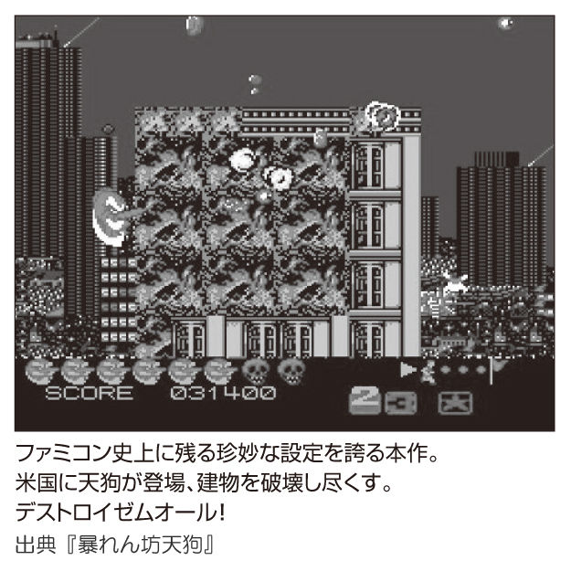
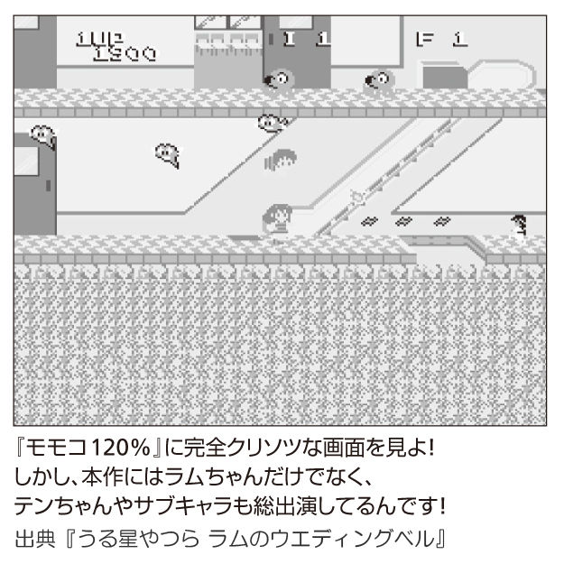
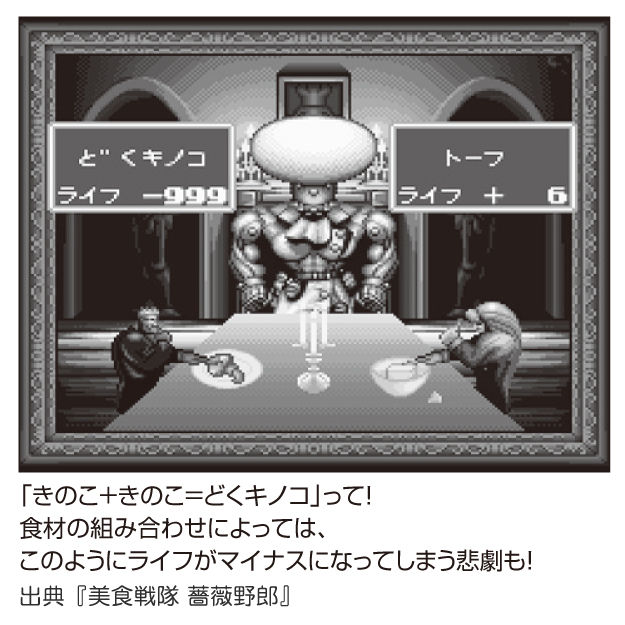
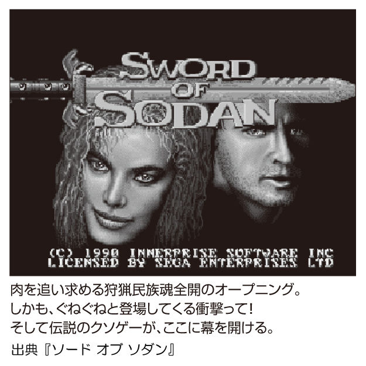
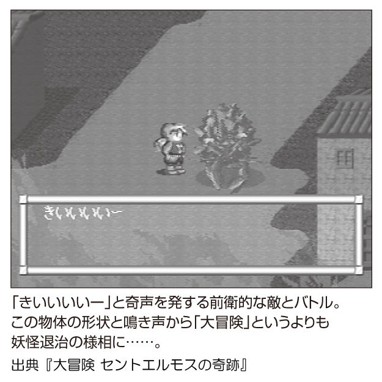
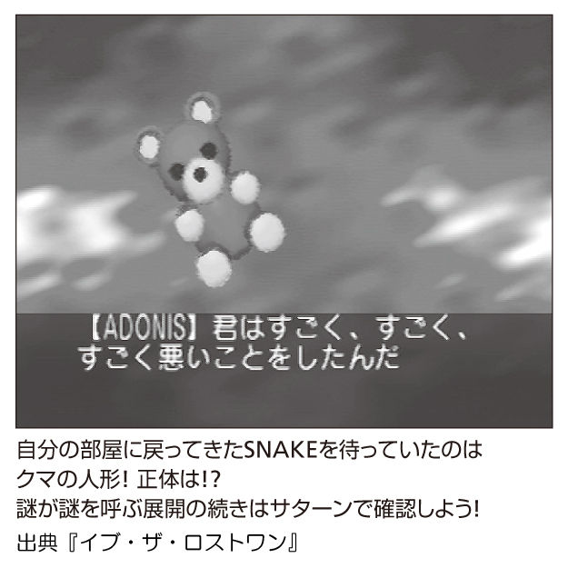

| 超クソゲー１＋２ | |
| 阿部広樹 & 箭本進一 & 多根清史 | |
超クソゲー１＋２
はじめに
クソゲーというのは、クソつまらねぇゲームのことである。
俺たちクソゲーハンターは、ゲームの楽しさを表や裏から見つめ直し、クソゲーを買ったときには「ゲームけなし代」を値段に含めて考えるという特殊能力を身につけています。これさえあればクソゲーなんて怖くありません。いや、むしろ好んで前向きにクソゲーを買おうとさえ思うようになります。
たとえば眼に見えない敵を音を手がかりに倒すという、開発者様の他は面白さの理解が困難なゲームを五〇〇〇円で買ったとしましょう。
俺たちクソゲーハンターは、ゲーム本編の価値を一〇〇〇円、パッケージの豪華さに二〇〇〇円、けなし代二〇〇〇円と本能的に考えています。
ＲＰＧの神に許しを乞うべきかもしれない『里見の謎』で説明すると、「中古の値段でも四〇〇〇円。ぼったくりのように見えるけど、実はけなし代が三九八〇円ぐらいに値する」ということになります。
それはそれで、とっても価値のあることだと思いませんか？
本書はそういったコンセプトのもと、星の数ほどもあるゲームの中から「著者に悪夢のようなインパクトを与えたゲーム」をセレクトして紹介しています。
ランクが五つ星に近いゲームほど「強烈なインパクト」を楽しめ、逆に星の少ないものは「忘れられた名作である」と考えていただければ。
どちらにしても、俺たちクソゲーハンターが責任を持ってオススメできるゲームであることは保証します。良くも悪くも、確実に貴方が元を取れるほどに。
本書をきっかけにゲームの新たな楽しみ方に目覚めてもらえれば、こちらも七転八倒したかいがあるというもの。
クソゲーは本当につまらない。でも、クソゲーの悪口を言ってるときは最高に楽しい。
クソゲーハンター 阿部広樹（チカラの１号）
箭本進一（ワザの２号）
多根清史（イノチの３号）
特別企画
『いっき』を蘇らせた男を直撃！
●──『いっき』は、みうらじゅんさんが「クソゲーという言葉は、このゲームから生まれた」とおっしゃっている伝説のゲームなんですけど、それが『いっき おんらいん』として復活したということで、サン電子さんのある名古屋まで出張してきました！
野々部 なかなか取材に来ていただけないのでありがたいです（笑）。
●──『いっき おんらいん』のプロデュースを担当された野々部さんですが、『いっき』が発売された当時は社内のゲーム部門におられたんですか？
野々部 サン電子にはいたんですが、ゲームではなくて通信機器をやってたんですよ。「ＳＵＮＴＡＣ」っていうモデムを作っていて。もともとゲームを作りたくてサン電子に入社したんですけど「何をやりたい？」って言われて「一番やりたいのはゲームですけど、通信でもいいです」って答えたら通信に配属されて（笑）。
●──晴れて心のふるさとに帰ってこれた、と（笑）。
野々部 ちょっと歳を取りすぎましたけどね（笑）。
●──サン電子さんは高い技術力を持っていて、それでゲームにも参入したら成功したんですよね。
野々部 そうですね。昔は券売機のシステムや、パソコン自体を作ってたこともありますし。そういった技術を生かしてゲームにもサウンドチップを乗っけたり、子ガメカセットもありましたし、他社がやってないことをやるのがサン電子の特徴かなって。
●──日本で初めてゲームに喋らせてましたね。
野々部 ええ、『スピーク＆レスキュー』でも音声合成してましたね。
●──そんなサン電子に憧れて入社されたんですね。当時はゲームを遊んでおられたんですか？
野々部 ちょうど大学生の頃にファミコンが発売されて、その頃はパチンコを打って儲かっていたので、ほとんどのカセットを買ってましたね（笑）。
●──『いっき』をプレイして、どう思われました？
野々部 実は僕はアクションゲームは得意じゃないほうで、やっぱり「なんだこれは!? 」という感じで、ドラクエなんかのＲＰＧに行っちゃいました（笑）。昔のゲームって、どれも難しいじゃないですか。
●──あの頃は「一秒でも早く死んでくれ！」って風潮でしたからね（笑）。ちなみに、ファミコン版の『いっき』は、どのぐらい売れたんでしょう？
野々部 ミリオン（一〇〇万本）には届かないくらいですね。
●──そのビッグタイトルに「オンライン」や「マルチプレイ」という現代的な要素を入れた『おんらいん』ですが、どういう経緯でリメイクの企画が？
野々部 サンソフト（編集註：サン電子のゲーム部門）は五年ほど前から携帯電話のサービスがメインになって、しばらく家庭用からは遠ざかっていたんですね。その頃に私もサンソフトに転属になりまして。携帯ゲームもビジネスとしてはいいんですけど、やっぱり家庭用をやりたかったんです。最初に『上海』をＷｉｉウェアで作ってみて、もっとやりたくなったんですけど、やはりパッケージ版はハードルが高いんですね。
●──それで『いっき おんらいん』もダウンロード販売なんですね。
野々部 ちょうどレトロゲーのブームが来ていまして、『いっき』もいろんな会社から企画のご提案をいただいたんですよ。３Ｄで『いっき』とか（笑）。でも、我々の資産なので自分たちでなんとかしたい気持ちはあって、でも、コンシューマーの開発からは遠ざかっていた。その中で、あるところから打診がありまして、もうすぐ二五周年でもありますし、もともと通信屋でネットワークにも興味があったので、やってみようかと思ったのがスタートですね。
●──ご自身の通信での経験があったので、オンラインの要素が追加されたんですね。
野々部 そうなんですよ。思い返すと、その延長でメガドライブのモデムもやってましたし。
●──メガモデムですか！
野々部 よく考えれば、家庭用ハードのモデムには全部関わってるんですよね。スーパーファミコン用の通信機器も、ＰＳ２では「オンラインステーション」というモデムも出してました。あと、ワンダースワンのワンダーゲートもやってましたね。
●──そのうち何個かは買った覚えあります（笑）。
一二人で一揆を起こせる！
●──『いっき おんらいん』がＰＳ３で出たのは驚きましたね。
野々部 『いっき』のレトロなイメージとのギャップも面白いだろうな、とは思ってましたけどね（笑）。
●──でも、ＰＳ３って開発のハードルが高いんじゃないですか？
野々部 自社だけでは躊躇していたと思いますが、ＰＳ３の開発に経験がある会社と一緒にやらせていただけたので。
●──もともと『いっき』は「一揆をふたりでやるのか！」ってツッコミまれてたんですが、『おんらいん』はマルチプレイの一二人で一揆できるという、本来あるべきモードが追加されましたよね（笑）。
野々部 本当はもっと人数を増やしたかったんですけどね。まあ、なかなか一〇〇人は集まらないだろう、一二人ぐらいかなって。実際にやってみると鬼ごっこというか、子どもが遊ぶゲームをそのまま再現した感じがわかりやすいと評判ですね。
●──それに最近のオンラインゲームの基礎的な部分は手堅く押さえてるんですよね。グラフィックも今風にリファインされてますけど、その中でも『いっき』らしさは残しているという。
野々部 もう少しハチャメチャな感じにしたかったんですけど、最終的には意外と落ち着きましたね。開発初期の権べはハナをたらしてたんですけど、それはどうなんだろう？ という話になって（笑）。
●──そうやってリメイクした新たなモードもいいんですが、ファミコンそのままのドット絵で遊ぶクラシックモードもあるのが感動ですよね。
野々部 ドット絵は残したいなと思ってたんですよね。でも、今の大きな液晶テレビで観るとドット絵は目が痛くなるので（笑）、実際のプレイ状況では新しいモードで遊ぶユーザーの方が多いなと思います。
●──本来『いっき』は、「クソゲー」と呼ばれることでメジャーになったわけじゃないですか。そこを、どうアレンジしようと思われましたか？
野々部 クソゲーである部分は大事にしようと思いましたね。たとえば、パワーアップのはずの竹槍を取ったら逆に弱くなるとか（笑）、そこはあえて残そうと。ただ、最新のグラフィックやサウンドで、ファミコン版とのギャップを再現しようとは思いました。「ＰＳ３だから豪華な要素ができる！」という発想ではなかったです。
●──肥溜めの色が生々しくリアルになっているんですよね（笑）。
野々部 最初はもっとリアルだったんですけど、だいぶブレーキをかけました（笑）。
●──『おんらいん』が発表されたとき、ファンの喜びの声は大きかったですか？
野々部 最初に発表したときの反響はすごかったですね。ミクシィのやＹａｈｏｏ！ニュースでもトップになっていたりしたので「おおっ！」と思って。
●──実際プレイした感想も寄せられてますか？
野々部 「意外としっかりしたゲームだ」という声もありますし、「やっぱりクソゲーだ」って声も同じぐらいありますね（笑）。でもオンライン版は全然違う感じですし、良い評判をいただいてます。ネットゲームって協力型が多いんですけど、これは完全に対戦型なので、いろんなプレイヤーさんが参加して盛り上がりましたね。
『いっき』の次期ハードはＰＳ Ｖｉｔａで!?
●──今後、『いっき』以外の過去のタイトルをリメイクされる予定はあるんでしょうか？ 『ぺったんピュー』を希望する声もありますけど（笑）。
野々部 今後も続けていきたいとは思ってますね。うーん、同じ路線でやるなら『アトランチスの謎』をリメイクしたいかもしれません。
●──それはすごい！ 全一〇〇面ですか（笑）。
野々部 あとは『いっき』もいろいろと展開していきたいなって考えてますけどね。ソーシャルゲームもやってみたんですが......。
●──全国で一揆を起こそうという不穏な動きに発展してほしいですよね（笑）。
野々部 ｉｐｈｏｎｅやＡｎｄｒｏｉｄ用も考えるべきだと思いますし、「みんなでいっき」というテーマもソーシャルに向いていると思うので、もっと広げたいと考えてるんです。個人的には携帯型ゲーム機でプレイしたくて、ＰＳ Ｖｉｔａ（編集部註：ＰＳＰの後継機、年内にも発売予定）に展開できたらいいなと思ってます。
●──最新のＶｉｔａで『いっき』ですか!?
野々部 やっぱり友達が持ち寄って遊ぶのがいいと思うんですよね。オンラインだと、人数が揃うまで待たないといけないじゃないですか。
●──でも、そこで『いっき』はＤＳじゃなくてＶｉｔａなんですね（笑）。
野々部 『モンハン』での狩りに疲れたら、ちょっと『いっき』をやっていただこうという感じで（笑）。
●──ゲームハードが進化すると『いっき』もステージを上げていく見通しなんでしょうか？
野々部 最新のハードよりも、人がたくさん集まっているハードで作りたい、という思いが強いですね。Ｖｉｔａは通信機能も強化されているので、そこを活用していきたいなって。
●──過去のソフトが最新の通信機能によって、協力や対戦プレイで強化される方向で蘇るんですね。
野々部 そうですね。そこでサンソフトの強みを出せればいいかな、と思っています。
謎に包まれた『いっき』らしさ。
●──今でも根強い人気のある『いっき』ですけど、有名人で推してる方が多めという印象がありますよね。
野々部 芸能人の方々もたまにＴシャツ着てたりしてますよね（笑）。あとはバラエティ番組のゲーム大会に使われたりして。
●──関連グッズも多いですよね。
野々部 そうですね。『いっき』Ｔシャツとか、お守りも出たのかな？
●──ゲーム本編にも出てますよね、お守り（笑）。グッズはもっと種類があるといいと思うんですけどね。
野々部 何があるといいですか？
●──やっぱり竹槍ですね！（笑）
野々部 じゃあ、次は竹槍で（笑）。
●──本当に一揆が起こせそうなグッズが揃うと最高ですよね（笑）。最後の質問になりますが、今から振り返って『いっき』はどういうゲームだったと思われますか？
野々部 まあ、テーマが一揆だったのでクソゲーと言われてますけど、あのファミコン時代に八方向スクロールのシューティングゲームって、たぶん初めてだったと思うんです。あれが「権べ」じゃなくて戦闘機でドッグファイトをしていたら、普通にマトモなゲームとして評価されたと思うんですけどね。
●──確かに、一九八五年当時としては高レベルの技術を使ってるんですよね。でも「なぜ一揆？」という（笑）。どうしてそうなったのか、サン電子さんの社内で伝説みたいなものは残ってないんでしょうか？
野々部 もう、当時の社員がいないんですよね。誰がこれを思いついたかっていうのは、ちょっと謎なんです。
●──誰が言い出したかわからない、というのも『いっき』らしいですよね（笑）。というわけで、本日はありがとうございました！
（Ｔ）
トランスフォーマー コンボイの謎
大人気ロボットアクション『トランスフォーマー』をゲーム化、その凶悪な難易度と難解なゲーム内容で現在も語られる伝説の作品。二〇〇八年、バーチャルコンソールで配信されるにあたっては「大人になったからといって子どものときより上手にできるとは限りません！」「トラウマを重ねないよう細心の気構えをもってプレイしてください」という豪快なオフィシャルコメントがメーカーより寄せられていた。
ジャンル アクション
メーカー タカラ
発売日 86 ．12 ．３
定価 ４，９００円
ランク ★★★★★
アーマー副司令官、二ドット弾で瞬殺！
実写映画の最新作『ダークサイド・ムーン』も公開され、日本でもメジャーにのし上がった変形おもちゃのブランド『トランスフォーマー』。その原点である八〇年代のアニメ版を原作とした本作では、今はなき（しょっちゅう戦死してるんです）コンボイ司令官の弔い合戦に、副司令官のウルトラマグナスが出陣。
さあ、戦いの始まりだ！ 頑丈なアーマーを身につけた副司令は、サイバトロン陣営の中でも防御力はピカイチ。蚊トンボみたいな戦闘機の銃弾じゃ傷ひとつつかんわ......と余裕をカマしていたら、いきなり爆死！
てゆーか、さっぱり死因がわかりません。再び目をこらしてみると、ありましたよ二ドットぐらいの弾が。こっちの番だ！ と敵機を撃ち落としたら、ジェット機からロボットに変型して元気よく走ってきました。副司令官の攻撃力ってザコ以下なの？
ウルトラマグナスの無駄な努力
そんなマグナスさんもトランスフォーマーの端くれ。人型からトレーラーに変型して、敵機を頭上にスイスイとやり過ごします。前方に発射したミサイルは泥玉を投げてるような見かけによらず、死角にいる敵も倒せる高性能です。
デストロンと戦うというより見逃してもらいながら、ほうほうの体でたどり着いた一面ボス。機械惑星・デビルスターだ！ アニメにいなかったよそんなの。ザコ戦の極悪さがウソのように、数発も当てればあっさり撃破。
そして二面のボスはデビルスターが二匹コンビ、三面ではデストロンのシンボルマークが待ってました。もはやロボットでも要塞でもないんですが、その先にさらなる絶望が待ってます。三面と六面の構成がまったく同じ！ 上に登っていくステージを、下に降りていくステージに使い回してます。
そうやってデータを節約した分だけ原作のキャラを出してくれるかといえば、道の真ん中にサウンドウェーブ（ラジカセロボ）が生えてきたり、コンボイ司令官の生首が浮かんでいたり......。
しつこく出てくるシンボルマークやデストロンの合体ロボが棒立ちしてるボス戦にゲンナリしつつ、やってきました九面。虚弱なボディをいたわる努力のかいあって、一ミスもせずクリア！ ぬか喜びしたら「ＳＴＡＧＥ９」と表示されてやり直し。このステージ、正解のルートを通らないと延々とループしちゃいます。どこにも手がかりがありませんよ、ああ隠しキャラにダッコちゃん（同じタカラトミー）いたけどな！
ようやく破壊大帝メガトロン様をぶっ倒し、ラスト面の恐竜型ロボ・ダイナザウラーも弱点がデカすぎて瞬殺。するとコンボイ生首がまた現れ、「ＲＯＤＩＭＵＳ」の五文字を集めてこい、と命を受けて二周目スタート......えっ？
要するに「ロディマス（ＲＯＤＩＭＵＳ）コンボイが後継者」＝コンボイの謎らしいですが、アニメ『２０１０』のラストで司令官辞めちゃうんですよねロディマス。ウルトラマグナスの苦労は、全部ムダ！
（Ｔ）
バツ＆テリー 魔境の鉄人レース
大島やすいちの大人気少年マンガをゲーム化。原作はピッチャーのバツ（抜刀軍）とキャッチャーのテリー（一文字輝）による大活躍を描いた野球マンガだったのだが、なぜか本作は「謎のドラゴン軍団と魔境で鉄人レースを戦い抜く」という驚愕の内容に！ 蛾やマリモのような敵とバットやボールを駆使して戦いまくるバツとテリーの姿が衝撃的すぎる、キャラクターゲームの極北。
ジャンル アクション
メーカー ユース
発売日 87 ．７．22
定価 ５，３００円
ランク ★★★★★
野球ゲームじゃないの？
『バツ＆テリー』の主人公であるバツ（抜刀軍）はピッチャー、キャッチャーのテリー（一文字輝）はバッターとして一年生ながらも野球部で活躍しています。
そんなバツとテリーの活躍がゲームになった！ ......と聞けば、普通は野球ゲームだと思うのは否定できません。しかし、なぜかバツとテリーは魔境で鉄人レースという名の横スクロールアクションゲームを行うはめに。
野球じゃなくて鉄人レースか......確かにバツとテリーは原作でも才能に溺れて野球は相当にサボりがちでしたが、ゲームでまで野球をサボっているのはいかがなものかと思わないでもありません。
そもそも鉄人レースと言いながらも競争相手はいない模様で、バツかテリーが延々と独りで進んでいくしかないようです。

気を取り直し、鉄人レースに参加！
しかし、謎のドラゴン軍団との鉄人レースを戦い抜くために、バツは謎の斜め上の軌道を描くボール、テリーはバットで戦います。ここで一応、ピッチャーとバッターという設定を打ち出していると言えなくはありません。
バツは斜め下にも投げられますが、なぜか前には投げられません。おいバツ！ おまえコントロール悪すぎだろ！
テリーはテリーでバット攻撃の当たり範囲が狭すぎて、使い物になりません。
たとえまっすぐ前に投げられなくとも、近接攻撃よりは飛び道具のほうが強い（ボール自体の当たり判定がバット並みにデカいから）というのが今も昔もゲームのお約束というものなのでしょうか。
出てくる敵も「ウィリーで一直線に突っ込んでくるバイク」と「そこらへんをフラフラしている不良」は、まだ、わからなくはありません。
でも、その敵が「蛾みたいなもの」「マリモみたいなもの」「タイヤみたいなもの」で、しかも破壊不能となってくると、恋と喧嘩に明け暮れるスポーツ系不良マンガには全然縁がなさすぎて、なんのゲームをやってるのかわからなくなってきました。
特に、なんでテリーは身長の何倍ものジャンプをしながら猫や槍を構えた原始人を撲殺しなければならないのか？ 意味がわからない以前に、原作からかけ離れすぎています。
でも、この「原作なんざ知ったこっちゃねー！」や「主人公はピッチャーとバッター？ だったら武器をボールとバットにすりゃいいんじゃね？」的なファミコンゲームの中でもトップを争う原作まるで無視感は、今どきの厳しい版権ゲームビジネスではなかなか有り得ない光景です。
ここまで徹頭徹尾愛がない作りのゲームは、今どきの「ゲームが嫌いな開発者は全員やってらんなくなって逃げ出してしまった後のゲーム業界」では、なかなか考えにくい作りです。
でも、それって、たまにはあるってことだろって？ ......まあ、ここまでのは、たまにしかありません。
だから、今でも、たまにあるって意味だよなって？ ......全部は言わせないでください。
（Ａ）
ダブルドラゴン３ ザ・ロゼッタストーン
『熱血硬派くにおくん』でおなじみ、テクノスジャパンによる名作ベルトスクロールアクション『ダブルドラゴン』シリーズの第三弾。名作と呼び声の高い前作、前々作を受けて、その完成度は究極の域にまで達しているが、併せて難易度も驚異的にアップ！ 「ゲーム開始直後から跳び蹴りを受ける」「正面から殴り合ってるのに雑魚に殴り負け」というプレイヤーの心が折れまくること確実な一本。
ジャンル アクション
メーカー テクノスジャパン
発売日 91 ．２．22
定価 ６，５１０円
ランク ★★★
人気シリーズ第三弾！
ファミコン時代には『くにおくん』と『ダブルドラゴン』で一世を風靡したテクノスジャパンですが、本作は『ダブルドラゴン』シリーズの第三作目！
シリーズ三作目ともなれば、そもそも名作の誉れが高かった『１』や『２』の時代から高かった完成度的にも極限にまで達しています。
しかし、なぜか難易度も一緒に半端なくパワーアップ！
とりあえず、ここは難易度の単位を「ＢＴ」＝『バトルトード』（メサイヤ）にするとしましょう。ちなみに初代『ロックマン』で０・７ＢＴ程度で、初代『ダブルドラゴン』ならば０・４ＢＴです。しかしこの『ダブルドラゴン３』は２・５ＢＴに相当します。
単純に難易度が上がっただけでも大変なのに、残機は一、コンティニューはできたりできなかったりというドＭ仕様に鮮やかに変身した本作には、前二作をクリアした当時の中高校生ですら、一面をクリアするのにも全神経をすり減らしながらプレイする羽目になること必至だったものです。
特に敵は容赦なくリー兄弟を狙い、ゲーム開始早々から堂々と跳び蹴りをかましています。跳び蹴りをかまされればブッ倒れるのは世界の常識。そのブッ倒れたところに重ねて待ち構え、起き上がりと同時に即座に再びボコるのも世界の常識というもの。
その常識を、プレイヤーに向けてカマされるのはやはり厳しいものです。プレイヤーが効率的に勝つために使ってた戦略を、ＣＰＵ雑魚が普通に使ってくる......すなわち、プレイヤーが普通に苦しむという仕様になっているわけです。
その上、雑魚の分際でハメだけでは飽き足らず、超反応までも駆使してこちらをブン殴りにきます。おかげで正面から殴り合ってるのに、こちらが雑魚に殴り負けすることすら普通にあるという始末。
一応『１』と『２』はクリアした人間ですら一面の途中で一回はゲームオーバーになる調整に、異常なほどの消極戦を強いられるという寸法です。
難易度からアメリカナイズ
そもそも本作は、アメリカ向けに制作された難易度を、そのまんま踏襲しているのです。
というかこれ、アーケード版に関しては、どう見ても日本で開発されたものには見えませんでした。いわゆる当時の海外アーケードゲームそのものの造りで、コイン投入と同時に雑魚数人に囲まれて確実にゲームーオーバーになったものです。
『くにおくん』シリーズと比べて、今ひとつメジャー感に欠ける『ダブルドラゴン』シリーズ。それというのも、こういった難易度大発狂のゲームが出たことで、日本でのファン離れが進んでしまったのが原因ではないでしょうか。
しかしアメリカではアニメ化までされ、さらに映画版『ダブルドラゴン』からの派生ゲームもリリース。オリジナルのブッ飛んだ設定を追加されて、すっかりワケがわからなくなったりするほどの大人気シリーズでもありました。
つまり、アメリカでは本作の「難易度２・５ＢＴ」でも大丈夫だった、ということになるんでしょうか？
（Ａ）
フィールドコンバット
一九八五年に名門ジャレコよりアーケードゲームとして発売、同年七月にはファミコン版も登場したシューティングゲーム。悪の天才科学者「フォゾム」から地球を守るべく、攻撃母艦「ジェネシス－３」を操縦して戦う。いわゆるミサイル攻撃だけでなく、キャプチャービームを用いて洗脳された兵士を解放して味方にする、という機能が画期的。現在、バーチャルコンソールにて好評配信中。
ジャンル シューティング
メーカー ジャレコ
発売日 85 ．７．９
定価 ４，５００円
ランク ★★★★
違いがわかるオッサンのゲーム
さて世間では『フィールドコンバット』＝ジャレコのファミコンゲーム＝残念なゲームという冷たい方程式がまかり通りすぎていて、遊んでないのにアレだと決めつけているプレイヤーが多いことと思います。
確かにジャレコといえばアーケードゲームはともかく、ファミコンでは『燃えろ!! プロ野球』や『ミシシッピー殺人事件』といった、実在するものをアバンギャルドな作風で仕上げることに定評があるメーカーでした。
でも、まずは一度、このレビューに免じて騙されたと思って一度プレイしてみてください！ ......よし、この時点でだいたい九割のプレイヤーは騙されたものと思います。
でも一割ぐらいの違いがわかってしまうプレイヤーには、他のジャレコゲームにはない鈍色に輝く何かを感じ取ることができるはず。
ＲＴＳの元祖の元祖
さて本作『フィールドコンバット』では、面ごとに出てくる敵（洗脳された地球のユニット）をキャプチャービームで捕まえるかミサイルで倒して戦います。
キャプチャービームで捕まえた敵ユニットは、味方ユニットとして投入可能です。
歩兵、高射砲、装甲車、戦車などをキャプチャービームで捕獲しながら戦うのがキモになるわけですが、キャプチャービームで捕獲中は移動できないため、どうしても味方による支援（というか盾）が必要になるわけです。
そうして前の面で捕まえた敵ユニットを投入、その隙間に隠れながら戦っている敵ユニットをバンバン捕獲し、味方をどんどん貯めていくことになります。
当然プレイヤーが敵を捕まえて洗脳するんだから向こうも普通にＵＦＯで味方を捕まえて洗脳していきやがるため、敵ＵＦＯがキャプチャーしている最中にミサイルをブチ当てることによって窃盗に対する罰を与えることになります。
このゲームは基本的に、前の面で捕獲した敵ユニットが次の面では有利なバランスになっているので、難易度的にも前の面で出たユニットを投入するというセオリーを守っていればＯＫ。
敵の出現状況を見ながら味方ユニットを盾として並べて攻撃を分散させながら戦うという、当時としては......どころか今でも充分に画期的なゲームシステムになっています。
ただ、ヘリコプターだけは同じヘリでしか倒せない上にキャプチャーも不能なので、出てきたらさっさとこっちもヘリを投入して倒してもらいます。というか、キャプチャービームで捕まらないのになぜ敵もヘリを持ってるんでしょうか？
大量の味方を利用しながらリアルタイムに大量の敵と戦うタイプのゲームシステムは、今で言うところの『ピクミン』や『三国志大戦』といった、リアルタイムストラテジー（ＲＴＳ）系のゲームの先達と名乗る資格があるということです。
まあ、日本ではＲＴＳはお世辞にも人気ジャンルとは言えないマイナージャンルですが、このゲームをプレイして、今後のＲＴＳに思いを馳せてみるのも一興というものかもしれません。
（Ａ）
エグゼドエグゼス
カプコン開発のアーケードゲーム『エグゼドエグゼス』を、伝説のゲーム雑誌『ファミリーコンピュータマガジン』を発行していた徳間書店がファミコン版として発売。誌面でも大キャンペーンを打ち、あおりまくった。しかし、ファミコンの処理能力を超えた数の敵キャラが登場するに至って「画面がちらつく」という処理落ち現象が多発、それをマニュアルでは「敵のフラッシュ攻撃」と言い切っていたのは現在も語り草。
ジャンル シューティング
メーカー 徳間書店
発売日 85 ．12 ．21
定価 ５，２００円
ランク ★★★★★
フラッシュ攻撃は仕様です
一九八五年。『ファミリーコンピューターマガジン』略して『ファミマガ』でおなじみの徳間書店が、カプコンの人気アーケードゲームの『エグゼドエグゼス』を発売！
今はバーチャルコンソールやカプコンのレトロ系コレクションでも普通に移植されている『エグゼドエグゼス』ですが、基本的にこれらはアーケード版がベースになっています。
でも、やっぱり『エグゼドエグゼス』といえばファミコン版！ というトラウマを持つプレイヤーが多いはず。
元のアーケード版では、大量に登場する昆虫形の敵をバリバリ撃つシューティングゲームだったので、ファミコンへの移植は大丈夫なのかなと発売前は心配していたものです。
そして発売日を迎え、大量の昆虫をどうやって表示するのかをワクワクしながら見てみたら、なんと最初から処理落ちした状態でスタート！ 敵が本格的に増えてファミコンの表示能力の限界に近付いてくれば、画面がフラッシュまでし始めます。
しかしファミコン版でのマニュアルでは、この現象を「敵のフラッシュ攻撃」として説明、あくまでも仕様ということにしてあります。
今となってはかなりどうでもいいことですが、２Ｐでプレイしていると時々自機の弾の連射の入力が取りこぼされてもいたような気がしますが、これも、たぶん敵によるボタン連射入力受けつけない攻撃に違いありません。
プロモーション大成功！
当然、当時は徳間書店発行の『ファミマガ』誌上では大々的に取り上げられ、ゲームオーバー時のスコアによっては先着順でシリアルナンバー入りの金銀銅のラベルステッカーがもらえるスコアアタック大会を開くなど、プロモーションは完璧だったものです。
『ファミマガ』は誌面で煽りまくるし、あのカプコンの『エグゼドエグゼス』の移植版だし、二人同時プレイできるという安定感もあって買ってしまった当時の『ファミマガ』派小中学生とか『テクノポリス』、略して『テクポリ』系高校生は多かったことと思います。
思えば当時、ゲーマーの中でも『ログイン』＝『ファミコン通信』のアスキー派と、『テクポリ』＝『ファミマガ』の徳間書店派の大派閥がありました。
今も昔もゲーム機ごとの信者派閥はもちろんのこと、それ以上に「どのゲーム雑誌を主に愛読していたか？」も大きな派閥の要因となっていたものです。
その中で、徳間書店派がこぞって買ってしまったのが、この『エグゼドエグゼス』。
その様を見て笑っていたアスキー派も、アスキーから発売された『コスモジェネシス』や『アストロロボ・ササ』を買ってしまい、徳間書店派に笑われるという憎しみの連鎖が続いていたものです。
でも、２Ｐプレイができればどんなゲームでも、ふたりであれこれワイワイ言いながら、結果的には結構楽しめるというモノ。本作と『アストロロボ・ササ』で互いをからかいながら、アスキー派と徳間書店派は二人同時プレイで楽しんでいたのです。
（Ａ）
バンゲリングベイ
ヘリコプター「シーアパッチ」を操ってバンゲリング帝国に侵攻、母艦である「ロナルド・レーガン」を守りながら戦う、ハドソンのシューティングゲーム。後に『シムシティ』で広く世界中に知られることとなるウィル・ライトがCommodore64で発表した作品をファミコンに移植したもの。ファミコン版にしか存在しない２Ｐ対戦の「ハドソン連呼プレイ」（２コントローラのマイクに社名を叫びまくり）など、良くも悪くも記憶に残る作品だった。
ジャンル シューティング
メーカー ハドソン
発売日 85 ．２．22
定価 ４，９００円
ランク ★★★★
『バンゲリングベイ』はクソゲーなのか？
さあてお立ち会い、『バンゲリングベイ』と言えばゲーム雑誌での「懐かしのＢ級ゲーム特集」とか、オタク系飲み会での「ありがちモンドゲーム話・ファミコン編」なんてお題で散々っぱら取り上げられがちです。
『バンゲリングベイ』＝アレ
それはもはや懐ゲー語りにおいては『スペランカー』＝死に匹敵するぐらいの定説になってしまっています。
今や七〇年代生まれの共同幻想とも言えるファミコン世代のお約束として、『バンゲリングベイ』＝アレという共通認識ができあがっているため、『バンゲリングベイ』面白い説などという危険思想を提唱しようものなら、大人げないなどのそしりを免れ得ません。『バンゲリングベイ』への評価はもはや定まったものであり、今になって異議を申し立てて論争を蒸し返すのは無用の混乱を招き、場を白けさせるということ。
でも、それは正しい判断なのか？ いや断じて否！
それは、戦勝国が記した歴史観を敗戦国が後に検証することを拒むような非寛容な姿勢の証しである。保守史観（『バンゲリングベイ』＝アレ）派に如何ほどの論拠が残っていようとも、それは既に形骸である。
あえて言おう！ 名作であると！
悲しみを怒りに変えて、立てよ国民よ！（バンゲリング帝国の）
当意即妙の戦略性
さて、今さらですが『バンゲリングベイ』の内容の説明をしてみましょう。
バンゲリング帝国に侵攻することになった新造空母「ロナルド・レーガン」（二〇〇三年七月一二日、奇しくも丁度この原稿を書いている今日ホントに就航）と、それに搭載した攻撃ヘリの「シーアパッチ」。
これだけの兵力で、ロナルド・レーガンとアメリカ合衆国は、イラクの次かつ北朝鮮の前にバンゲリング帝国の地球上の前哨基地に攻撃を仕掛けます。
対空戦用バルカンで敵航空機を破壊しつつ、装備数の制限がある対地爆弾で地上の軍需工場や高射砲を戦略的に爆撃します。アクションゲームだけど、戦略を立てて爆撃しないと簡単にやられる難易度という意味では立派な戦略型ゲームとも言えます。
当然一回の爆撃ではとても防御力の高い工場は破壊し切れないので、爆弾が品切れするたびにロナルド・レーガンに戻って爆弾を補充し、ついでに受けたダメージを修復します。
バンゲリング帝国の地上部隊は時間をかければ回復していくので、いかにこの往復を計画的に行って短期間に叩くのかが、このゲームの醍醐味です。
しかし空母での補給中も曲者、時間がかかっていると戦闘機が飛来。
攻撃にうつつを抜かして空母を放置していても、ゆっくり近付いてきた哨戒艇にガンガン攻撃されます。挙句の果てに軍港で建造される、このゲームで最もヤバい兵器のＱ型戦艦なんかが完成しそうになってるのを発見してしまった日には、工場の攻撃をやめてでも戦艦を叩きに行かなければならなかったり。
とにもかくにも攻撃しつつ防御も行うアドリブ入りの、当意即妙の戦略性というヤツが最大限に要求されます。
つまり、根本的にアクションゲームの腕も要求されつつ、さらに激しく頭を使わないと勝てない難易度なわけです。
ハドソンハドソンハドソン!!
これが当時のボンクラ小学生には受けが悪かったのか、特に『コロコロコミック』の特集を見て『バンゲリングベイ』を買った小学生（現在ギリギリ四〇歳以下の年代）にはマニアックすぎてついていけず、非難ごうごうだった模様です。
ちなみに当時大学生以上のパソコンゲームマニアには、このゲームは、
「（後に『シムシティ』の作者として日本で有名になった）ウィル・ライト本人が作ったCommodore64版と比べてしまうとねぇ、ププッ。まあお兄さんたちはＣ64 のカセットテープ並みに遅いフロッピーディスクの読み込みを我慢しながら遊ぶんで、中高校生のボーイはファミコン版をエンジョイしてなさい」
という難儀な理由で避けられました。
しかし、小学生よりはマニアックなゲームがわかり、大学生ほどスレていない中高校生たちが、ファミコン版『バンゲリングベイ』にしかないハドソンオリジナルの２Ｐ対戦モードを楽しみました。
この『バンゲリングベイ』の対戦はヘリ同士の戦いではなくバンゲリング帝国対アメリカで、要は地上軍と攻撃ヘリに分かれ、別々のゲームシステムで戦っているわけです。
世界の名作『シムシティ』は、この『バンゲリングベイ』のマップエディタを作っているときに思いついたものと言われています。
でも、オリジナル版にはなかったファミコン版の２Ｐ側の司令官プレイをしてみて天啓があったのかもしれません。
ただ、この対戦のバランスは決して良いとは言えず、大抵帝国の司令官（２Ｐ）が圧倒的に強くなります。
２Ｐは高射砲しか操作できずマイクで飛行機を呼ぶ「ハドソン連呼プレイ」となる自由度の低さにも関わらず、自分のために戦ってくれる戦車や戦艦が嬉しくて２Ｐを選びたくなります。
そのため大抵は、友達を呼んで『バンゲリングベイ』を遊ぶときには、どちらが２Ｐ側を使うかでひと悶着あるのが常でした。大抵は、下手なほうが２Ｐを担当することで落ち着きました。
生まれて初めて買ったファミコンソフト
しかし、そういうときにも例外はあって、筆者の場合は、なぜか他のゲームはえらくヘタクソなくせに『バンゲリングベイ』と『ギャラガ』だけは無闇に上手いホテルの支配人の息子のＩ君なんかがいたものです。
Ｉ君ときたら高射砲は真っ先に叩くわ、なかなか回復しない戦車は容赦なく破壊するわ、補給中を狙って２Ｐコントローラのマイクで呼ぶ援軍の戦闘機はいとも簡単に全滅させやがるわと本当に最悪でした、Ｉ君は。
なんで筆者が生まれて初めて買ったファミコンソフトで、持ち主よりも遥かなる高みまで上達するのか。まったく礼儀を知らない奴です。買った本人の目の前でゲームのエンディングに到達するのと同じぐらい、人としてやってはいけないことのはずだろソレは！
話が逸れました。自機の操作は当時こそ悪評ふんぷんだったものの、今考えれば『バイオハザード』でおなじみのラジコンに近い操作系を採用、現在ならかえって遊びやすいかもしれません。
もっとありていに言えば、このラジコン操作とマニアックすぎる難易度が仇となって、メジャーぼんくらファミコンソフトナンバーワンの座を『スペランカー』や『いっき』と争うタイトルになってしまったと言えるでしょう。
当時も、操作に慣れないうちに短気を起こし、安易に『バンゲリングベイ』＝アレ説に流れた連中の、情けなくもヘボくてしょうがない気の毒な操作を尻目に、Ｉ君の操るシーアパッチは一瞬の戸惑いもない流れるような毒蛇の舞いで、我がバンゲリング帝国を切り裂き蹂躙していきました。
この操作系で、高速飛行しながら戦闘機を迎撃しつつ工場を爆撃できるようになってこそエースパイロットというものです。そういえば、Ｉ君は同じような操作系の海外メガドライブソフトの『スターコントロール』を買ったとき遊ばせてみたら、案の定思いっ切りハマっていました。
......やっぱり悔しいけど、あの蝶のように舞い蜂のように刺すというレベルを越えたＩ君レベルの悪魔の機動を見てしまったら、とてもこのゲームを悪く言えないよなあ。
（Ａ）
子猫物語
「動物王国」でお馴染み、ムツゴロウさんが監督を務めた同名映画をゲーム化。北海道の大自然を舞台に、子猫の「チャトラン」の冒険を描いている。特にストーリーが用意されているわけではないのだが、全二四面をクリアすると恋人（猫）に会うことができた。敵はカメ、魚、カブトムシ、小鳥とホンワカした印象なのだが、なぜかラスボスは熊！ また「チャトランがいきなり九九匹に増える！」という洒落にならない裏技もあった。
ジャンル アクション
メーカー ポニーキャニオン
発売日 86 ．９．19
定価 ２，９８０円
ランク ★★★★
一九八六年という時代
『子猫物語』は、北海道の動物王国で知られるムツゴロウ監督の映画です。
タイトルに聞き覚えはなくても、主役の子猫「チャトラン」の名前を覚えておられる方は多いのではないでしょうか。この映画のヒットにより「チャトラン」という名は子猫の代名詞となり、ペットショップではチャトランに似た子猫が人気を呼んだといいます。
時は一九八六年。海の向こうではチェルノブイリ原発やスペースシャトル「チャレンジャー」が事故を起こし、国内では人気アイドルの岡田有希子が自殺し、映画館では『エイリアン２』がヒットし、『少年ジャンプ』では『聖闘士星矢』の連載が開始され、ファミコンでは後に伝説となる『ドラゴンクエスト』が発売され、『アウトラン』の真っ赤な筐体がゲームセンターを席巻していた、そんな時代です。
映画となればゲームになるというのは世の常。
『子猫物語』も、その図式から外れてはいませんでした。当時のゲーム文法で「子猫のチャトランが大冒険を繰り広げる愛一杯の映画」を再現するには「大冒険」の部分に焦点を当てた作品にならざるを得なかったようです。
ゲーム歴の長い方ならもうお気付きでしょう。『子猫物語』は横スクロールのマップをジャンプで突破していく、いわゆる横スクロールアクションとしてゲーム化されたのです。
スターの心得
本作『子猫物語』では、大自然を舞台に、主人公のチャトランが様々な生き物の妨害を退けて春夏秋冬のマップを突破していきます。
敵はカメ、魚、カブトムシ、小鳥といった動物たち。セレクションといい、「縦長の目」といい、当時のゲーム文法に忠実......というか、任天堂ゲームでお世話になったような面々です。
普通の子猫ならば手すさびにイジメ殺していそうなメンツに楽勝ムードが漂いますが、本作は愛で一杯の映画のゲーム化ですので、そんな残酷なことはできません。爪を繰り出すようなボタンなどもちろんありません。積極的に攻撃はできないのです。
また、体力もありませんので、相手がカブトムシだろうがネズミだろうが触れれば一発でアウト。
しかし、心配はいりません。チャトランが死んでも次のチャトランが出てくるのです。
これは『子猫物語』に限らず、動物映画の撮影現場を忠実に再現したルールであると言えるでしょう。「わたしが死んでもかわりはいるから」......もちろんチャトランのスペアには限りがありますので、これが尽きないようがんばってください（木の実を五〇個集めると１ＵＰするのですが、これは木の実をエサにしての「現地調達」でしょうか）。
攻撃をするには「繁る梢にジャンプして、ミカンやリンゴ、チェリーに雪玉（！）といった木の実をうまく敵の頭上へ落とすこと」か「卵を入手して敵の頭上へ落とすこと」。両方とも爆撃系であり、あまりにも間接的な攻撃です。普通に「ジャンプして踏んづければ敵を倒せるぞ！」で良かったような気もしますが、このあたりはチャトランのキャラクターイメージゆえでしょうか。
つまり「スターというのは簡単に手を汚してはいけない」ということに違いないのです。
使うもの、使われるもの
敵を倒す方法はこれだけではありません。「Ｈ」「Ｅ」「Ｌ」「Ｐ」の四つの卵を集めると、犬のプー助が助けに来てくれます。
プー助はいわゆる「完全無敵」であり、その突進を止められる敵は存在しません。
プー助の突進は、進路上の敵を次々と倒してくれるのです！ がんばれプー助！ 頼りになる相棒ですが、彼に心を許すのは危険です。卵が四つ揃わないと出てきてくれない上、急な谷には対応しきれず落下していくという融通の効かなさに加えて、チャトランはプー助に触れると死んでしまうのです。敵キャラ並みの危険さです。
偶然と言うよりは、チャトランとのスター争いの末、事故に見せかけて謀殺しているようにしか見えません。映画というのは、なんと恐ろしいものなのでしょうか。
そんな危険なプー助ですが、十字キーを下に入れてしゃがんでいれば大丈夫。四つの卵を集めないと出てきてくれないのも、予め「Ｈ」「Ｅ」「Ｌ」の三つの卵を集めた状態で止めておき、難所で最後の卵を取るようにすればいいのです。
頭の悪い奴も使いようといったところでしょうか。芸能界の厳しさがうかがえます。
大自然の真理
大人から子どもまで楽しめるファミリー映画『子猫物語』のゲーム化だからなのか、本作のゲーム速度はかなり緩やかで、反射神経に自信のない人でも安心してプレイが可能。
だからといって、大人から子どもまで幅広く楽しめるわけではありません。
その原因は、敵の配置が非常にシビアなことにあります。
前述のように攻撃手段が限られている（木の実は地形依存だし、卵には基本的に弾数制限がある）上に一発死に、加えて敵の配置がシビアなのですから、難易度はけっこう高め。
「敵の気配がないので安心して段ボール（本作での船代わり。チャトランを乗せれば、あの有名なシーンが再現できる逸品）を進めたら途端に魚が垂直上昇してくる」くらいは当たり前。ジャンプをミスなどしようものなら、緩やかなゲーム速度のおかげで自分のミスを悔いる時間をたっぷり持てるのです。
死にまくりつつ面を進めると、そこにはボスキャラが待っています。二足歩行、岩を投げる高い知能、通路を塞ぐ巨大な体......熊です！
魚やカブトムシにさえ勝てずに苦労しているところに、いきなり熊！
絶望感に襲われますが、そこは敵味方の妨害にめげずスターの座を守り続けるチャトランさん（いつの間にか敬語）のことですので、倒す手段はあります。
「頭上に卵攻撃」
「プー助に始末させる」
「頭の上で何度もジャンプして地面に埋めてしまう」
ほ乳類最強と言われる熊を相手にして手段を選べなくなったのか、そのすべてに拭いきれない黒さが漂っています。
「いやがらせによく使われる卵を執拗に何発も投下」
「自分の手を汚さずに他人に始末させる」
最後の「埋める」に至っては、ほとんどヤクザものの手口です。そう言えば「ジャンプして敵の頭を踏みつける」攻撃が、なぜか熊に対してだけはミスになりません。つまり、これは最後の攻撃手段であり、道中で何度も死にながらも隠し持っていた切り札なのです！
さすがは極北の地に「動物王国」を構え、日々自然の厳しさを体感しているムツゴロウ監督の映画をゲームにしただけのことはあります。愚か者は死ぬ。不注意な奴は死ぬ。味方でさえも心を許せば死ぬ。だから、切り札は死んでも隠しておけ......。これがゲーム『子猫物語』が教えてくれる、大自然の偉大な真理なのです。
（Ｙ）
暴れん坊天狗
「９・11 」を受けて、さらなる再評価が進行中のファミコン史上に残る怪作中の怪作シューティング。「未曾有の危機に瀕したアメリカを救うべく、日本から巨大な天狗のお面が出撃！」という基本設定も衝撃的なのだが、「目玉とヨダレで攻撃！」「一般市民を喰らってパワーアップ！」など、正気の沙汰とは思えない描写が続出する。しかし、当時としては珍しいデカキャラを積極的に採用、ゲームバランスもそこそこ良かったりする。
ジャンル シューティング
メーカー メルダック
発売日 90 ．12 ．14
定価 ６，５００円
ランク ★★★★★
大天狗がニューヨークに海外派兵！
高層ビルをブロックに見立てて発破をかけるパズルゲームさえ発売の危機に瀕した「９・11 以後」からは、羨ましいほど牧歌的だった時代のチルドレンが『暴れん坊天狗』だ。ああ、パズルゲームうんぬんは架空のモノのたとえなので五秒で忘れてください。
「三人ノ王子テキタイスル時、メリケン国二凶星来タル。凶星アシキワザヲ行ヒ、コノ世ヲワガモノトセントス。平和ハ空カラ打タレ、大地ユレウゴキ、天地アレクルヒテ 世ノ人々ミナ亡者ト化ス」
えー、電波文章を翻訳すると「アメリカが宇宙人に乗っ取られちゃったよ、大変だ～」というわけで、人々の祈りは太平洋を飛び越え、なんの因果か日本の大天狗に着信！
大天狗の代理＝プレイヤーは、なんと巨大な天狗のお面。空の敵には目玉、対地上には口からヨダレ（と似た霊力）を発射しまくり。ニューヨークへと乗り込むと、ビルを破壊、炎上、デストロイ！
それを迎え撃つのは、ＵＦＯじゃなくヘリコプターや戦闘機。詳しい事情を知らなければ「アメリカを滅ほしに来た妖怪を退治」と誤解しそうだね！
さらに天狗サマは、ビルから落ちる民間人を喰らって二段階にパワーアップ。いや「ＨＥＬＰ！」と叫んでいるし、どうやら助けているらしいよ？

自由の女神をデストロイ！
こんな狂気に満ちた魔空間だが、流れる血液は正統派のシューティング......なんて良い人ぶる気配はまるでなし。企画を出した本人が筋金入りのホンモノなのは確実として、他のスタッフも一丸になってアクセル踏みっぱなし。誰か止めろよ！
操作をやたら難儀にしているのは、移動の際に、びにょーんと働く慣性（勢い）だ。難易度イージーなら軽いものの、ハードに至っては、ほとんどコントロールを受けつけない暴れん坊ぶり。背景に当たると飛び跳ねるし、やはり天狗の材料はオ○モ○のゴムなのか？
その上、ゲーム序盤の初っぱなから、稲妻レーザーが洗礼ビンタをかましてくれる。奥のビルから伸びている背景かと思って近付くと、体力ゲージが一気に瀕死の崖っぷち。遠近感、デタラメすぎ！
逆に言えば他に反則攻撃はなく、瀕死のときには、レーザーに重なってもノーダメージなのが妙にフェア。ひるまず、画面の前半分にいるほうが安全なあたり、死ぬも生きるも前のめり！
ボスも、自由の女神モドキだのマッチョ斧投げジジイだの、アメリカの名誉を回復する前に断崖絶壁から突き落とすごんたくれぞろい。ラスボスがグレイ型の宇宙人、だから何？ と驚きもせず今さら感が漂うぐらい分裂気味なメンツだ。
これがファミコンとしてはがんばった「デカキャラ」で動き回るのだから、むやみに志が高いのは間違いない。けっこうゲームのテンポも軽快で、ビルの破壊パターンも充実しているので、ひょっとしたら『烈火』と同じく、仮想敵はハドソンの「キャラバンシューティング」だったんだろうか。ＢＧＭのノリから、『源平討魔伝』（ナムコ）の中潟憲男氏の存在をかぎ取った人は、相当な通に認定！
（Ｔ）
ファミコンジャンプ
『少年ジャンプ』の歴代ヒーローが一同に介する！ という壮大すぎる企画を力技で実現させたキャラクターゲームの特異点。広大な「ジャンプワールド」に点在するお馴染みのヒーローを仲間にして、ピッコロ大魔王を倒すのが目的。「努力」「友情」「勝利」のキーワードにのっとった夢のＲＰＧになることを誰もが期待していたのだが、一ヶ月後には、中古ショップで叩き売りになっていた悲劇の作品。九一年には『Ⅱ』も発売された。
ジャンル ＲＰＧ
メーカー バンダイ
発売日 87 ．４．２
定価 ６，５００円
ランク ★★★★★
町の名前がわからないまま死亡！
原作ファンの数だけ、背負う期待の量もハネ上がるのがキャラクターゲームの宿命 。まだゲーム化にバラ色イメージが持てた子供たちの夢に賭けてしまったゲームショップが大量に仕入れた『ファミコンジャンプ』でしたが、永らく在庫が残ることでひと夏の夢どころか悪夢へと変貌。ワゴンセールでも牢名主ライクな足腰の強いふんばりを見せて、すっかり往年の成田三樹夫的な悪役ヅラ＆斬られ役が定着している本作は、果たして本当にツマラないのか。君ら、実際に遊んでみて悪口言ってますかあ～ッ!?
そんなわけで、『ファミコンジャンプ』を追体験してみる！ という志のもとでプレイ開始。初めの名前入力を、めんどうでサボった場合のプレイヤー名は「はしもと」。なるほど、橋本名人がベビーフェイス〝だった〟頃だなと、しばし感慨にふけります。
ある夜、ジャンプを読んでいた少年は、雑誌の中に吸い込まれます。そこで、出迎えるのはジャンプのイメージキャラだった恐竜の「ギャオ」。彼が言うには、ジャンプ世界がピッコロ大魔王に乗っ取られようとしているから、バラバラになってる勇者たちを集めて、世界を救ってくれ、とのこと。そしてドラゴンレーダーとロケットパンチを渡されてから、世界に放り出されます。
ともかく町の名前ぐらいは聞いておこうと、手近な住人にコンタクト。モヒカンでとんがった感じですが、偏見はいけません。いきなり撲殺、ゲームオーバー!! 見た目どおりの悪人でした。
その後、道を歩くたびに殺され、なんとか勝って瀕死の体を癒そうとレストランに入ろうとしたら、入り口にチンピラが立ちふさがって手詰まりに。
まだ町の名前がわかりません......。
球兄ィ、ピッコロ大魔王に暴投！
「建物の中に入って出ると、画面がリセットされて敵の配置も変わる」ことがわかったので、消しては進み、進んでは消しをマメにくりかえし、重要なネタをくれると思われる奥の建物まで接近します。ほとんどほふく前進。そして死にかけながら到着。ただのコンビニかよ！
実のところ、重要なネタは特定の誰かが握ってる、ということはなく、ほぼランダムにバラまかれている大らかな仕組み。敵のアジトで衛兵に出くわしても「ここはカイオウのしろです」と教えてくれるありがたさ。でもダメージ深刻なときにはドツかれるよりもマジにありがたく、思わず手を合わせたくなります。
ストーリーは、各作品のリミックス。占いオババの宮殿で「ぬけさく」を仲間にし、墓の前でケンシロウが復活、タオパイパイを倒して悟空を仲間入りさせ......と当時のスターたちが集まる一方で、「荒野の少年イサム」や「ゴッドサイダー」まで加わるなど微妙なメンツぶりがたまりません。
このように、往年のジャンプのエッセンスを闇鍋にぶち込み、（攻略本を片手に）さくさく進める軽いノリは、決して悪い出来ではないハズ。何より、球一兄ィが登場する『アストロ球団』キャラゲーとして、こりゃ買うっきゃないっしょォ！
（Ｔ）
新人類
長州力をイメージキャラクターにしたアクションシューティング。原始時代を舞台に、主人公マックスくんが恐竜を倒していく。本作での長州力はパワーアップアイテム（しかも隠し！）という扱いで「長州力の顔が掘られたプレート」を取ることで初めて出現する。発売当時は本人出演のＣＭも放送され（キャッチコピーは「リキがすべてだ」）、国技館では高橋名人を交えてのイベントも開催されたらしいのだが......行った人います？
ジャンル シューティング
メーカー リコーエレメックス
発売日 87 ．２．10
定価 ４，９００円
ランク ★★
イメージキャラは長州力
本作は、長州力をイメージキャラクターにしたシューティング。
谷や池といった地形はタイミング良く飛び越えていかなければなりません。ジャンプをミスすると転落して即死。深い谷に落ちて死ぬのは仕方ないとして、水たまり風の池でも即死なのはファミコン時代ならではの設定と言えるでしょう。
このタイミングが実にシビアで、ゲーム開始直後の池で挫折する人も続出。
しかし、諦めてはいけません。ジャンプを要求される場所には、大抵「翼」が隠されています。取るとジャンプボタン押しっぱなしで飛行できる優れもの。ただし、ダメージを受けると効果が消えてしまいます。落ちた先が池や谷であればやはり容赦なく即死。あまりの即死の多さに、そろそろ「即死」の字が別の何かに見えてきてしまいます。
ならダメージを受けないように飛べばいいのですが、一筋縄ではいきません。なんと飛行中はアイテムの回収が不可能なのです。
アイテムの中でもダイヤモンドは、取ると点数が倍々に上昇。うまく連続ゲットできれば、残機を増やすことも可能......と射幸心を煽りまくります。
空を飛んで安定を取るか、着地して点数を取るか？
心の中で天秤が揺れた瞬間、それはありえないポカが発生する逢魔が時。欲張りが、また大地に消えるのです。
遠くの長州力より近くの原始人
こうしてゲームを進めても、長州の「ち」の字も出てきません。あれだけ騒がれていたはずなのに！
長州！ 僕の長州！ このカセットは不良品なんですか？ もしかすると、長州は単なる客寄せパンダなんですか？ ああ、もう誰も信じられない！
長州を捜して繰り返しプレイしているうちに腕は上がったのですが、なんとなく釈然としない一九八七年。
それもそのはず。本作における長州力は、パワーアップアイテム扱い。しかも、普通にプレイしていると出てこない、隠しアイテムなのです！
今からはとても考えられませんが、なんとなく受け入れられていたのが、本作発売時の隠しキャラ全盛期だったのです。
そのアイテムは「長州力の顔が彫られたプレート」。取ると、主人公の原始人はみるみるうちに長州に！ そして武器も長州！ 腕をＬ字に曲げた長州の分身が前に飛んでいきます。
「これじゃあリキ・ラリアットじゃなくてアックスボンバーだよ！」
書いていても当時のキズがうずきます。おまけに、この「アックスボンバーのスタンド」は弾数が少ないため、アイテムの入ったツボを壊すのも一苦労。これなら通常武器のファイヤーボールのほうがよっぽどマシです。さらにダメージを受けたときのみならず、ボスに到達しても長州は去ってしまうのです！ なんて扱いづらいのでしょう！ プライドが高く、力がすべての世界に生きるのがレスラーですから、扱いづらくても仕方ありません。
遠くの長州力よりも近くの扱いやすい原始人。本作は少年時代の筆者に釈然としない教訓を残したのでした。
（Ｙ）
うる星やつら ラムのウエディングベル
高橋留美子の名作コミックをジャレコがゲーム化。しかし、その内容はアーケードゲーム『モモコ１２０％』のキャラクターを『うる星』に置き換えただけという、「さすがはジャレコ！」としか言いようのない衝撃的なものだった。階下の火事を避け、火の手が回るよりも先に屋上までたどり着けば面クリア。発売当時『少年ジャンプ』の名物企画「キム皇のファミコン神拳１１０番」において、名指しでボロクソに叩かれていた。
ジャンル アクション
メーカー ジャレコ
発売日 86 ．10 ．23
定価 ４，９００円
ランク ★★★★★
幼稚園児ラム、火事でピンチ！
「ああ～ジャレコの人っていくつもパチ○ン作っているのね～」と歌われたかどうか知らないが（注：実在の主題歌とは関係ありません）自社製のアーケードゲーム『モモコ１２０％』と生き写しな顔かたちの本作。ボーボー火事で燃えさかる幼稚園から脱出！ と原作である『うる星やつら』の都合にはおかまいなしのべタ移植っぷり、ザッツ・ジャレコイズム！
......とあらぬ誤解を受けてきた不幸な子猫ちゃんだが、ジャレコはジャレコなりに『うる星』に気配りして、創意工夫の秘伝タレを加えていたりする。トライ＆エラー＆エラーの連続で押し出しの大量失点なのは目をつぶるとして。
ラムさん（濃い『うる星』マニアの呼び方）が空を飛べない点も「スタッフは原作を読んだことがあるのか？」と怒髪天を突く疑惑持ちきりなんだけど、異空間にワープ＆若返り＋超能力を剥奪されたと思えばノー問題。禁じ手ナシでなんでもアリは『うる星』の十八番だからね！
そんな「地に足ついた」哀れな幼稚園児・ラムさんの行く手は命がけ。基本的には、下から追いかけてくる炎の海よりも早く上へ上へと駆けのぼり、屋上に待っているＵＦＯにたどり着いて脱出するというもの。エスカレーター付きってあたり、お受験の激しいセレブ幼稚園らしいが、手入れをサボったのか反応が激ワル。しかも、うっかり乗ると逃げてきた下の階へと強制送還！ その間も情けむように時間が過ぎるんで、炎が×二倍速で追いついてくるし。

『うる星』ファンに挑戦するマニアックさ
ちびっ子化に合わせて電撃までしょぼくなり、ジャンプしたら途中で方向を変えることさえできない不自由に苦しむラムさん。いくらコミックスを全巻買い揃え、毎週のようにアニメ版をラジカセで録音して、映画版のＬＤも集めた『うる星』フリークスの僕でも、愛しの君の地獄絵図をドット絵からふくらませる趣味はないわけで。
しかし、ただのアーケード→ファミコンへの移植として見ても、ハードの性能の差（価格にして一〇万円以上）を素直に出しすぎ。動きはチャチいわ、ミニゲームは一部削られているわ、「完全再現」をポイ捨てしてるの丸わかり。
ということで『モモコ１２０％』の熱烈ファンには歯がゆい出来だが、ゲーム本編の「肉」が食い足りなくても、隠し味のうる星チックな「タレ」は気合１２０％の本気汁！ 面堂、しのぶ、錯乱坊やメガネたち四天王級をさしおいて、コタツ猫はともかく、カラス天狗や面堂家のタコ、ランちゃんのメッセンジャードールまで、敵として総出演。見てみい、このこだわり！ 単に「16 ×16 ドットで描きやすいザコ」というイージーな選び方をしてる気もするが。
じゃあ、味方はいないの？ と言えば、火を吐いてくれるテンちゃんや、無敵のレイが助っ人に来てくれますって。ただし隠しキャラ扱いだし、出たら出たで、ゲームバランスを踏みつぶす凶暴さ。まあ、そのへんのアナーキーぶりも含めて、『うる星』らしいっちゃね！
（Ｔ）
忍者ＣＯＰサイゾウ
「忍者の警察官」サイゾウの活躍を描いたアクションゲーム。ラウンドをクリアするごとに新たな忍術を身につけることが可能で、隠し部屋やアイテムも多数存在。プレイヤーはサイゾウを操り、手裏剣や忍術を駆使しながら摩天楼に死体の山を築いていく。また「赤い服を着た敵を尋問できる」という任天堂に挑戦したかのような驚くべきモードが存在、自白剤を投与して、ゲームにあまり関係のない情報をゲットできる。
ジャンル アクション
メーカー 九娯貿易
発売日 89 ．11 ．17
定価 ５，９００円
ランク ★★★
忍者ＣＯＰ参上
ＮＹ市警の刑事サイゾウは、タイトル通りの「忍者＋ＣＯＰ（警官）」。しかし「ＣＯＰ」成分はオープニングで終了。手裏剣や苦無、怪しげな忍術で死体の山を築いても、何のおとがめもありません。
普通、こういう場合は「やりたい放題」な代わりに「敵の組織に掴まっても一切責任を持ってもらえない」アンダーカバーな任務なのですが、本作では上司ジョン警視の「今回は君の持っている忍法が役に立つな」とのお墨付き。捜査（？）中に犯人がいくら死のうともみ消してくれる、身内同士でかばい合う体質が本作のＮＹ市警。ファミコンゲームとは思えない社会風刺が光ります。
主人公であるサイゾウは常時四種類の忍法を使用することが可能。「攻撃」「ジャンプ」のボタンふたつで、四種の忍法を使い分けるために「十字キーを押さずにタメ」「下を押しながらタメ」「左右どちらかを押しつつタメ」「十字キーの上を押しつつタメ」という力技。
しかし、面が進むと基本的に「かげろうの術」しか使わなくなるので問題ありません。これは「術が効いている間、半無敵状態になり大抵の攻撃を無効にできる」というアナーキーな代物。しかも本作の忍法は無制限に使用できますので、タメの手間さえ厭わなければ、面のほとんどを無敵状態ですごすことさえ可能。
もうこうなると忍術というより「裏技の無敵モードが標準搭載」といっても過言ではありません。
「そんなに大きいのか！」「何倍も大きいぜ！」
本作の新機軸は「赤い服の敵を捕らえて尋問できる」というもの。
基本は「敵が自爆して終了」と恐ろしいもので、そうでなければ「ヨクキクゾ」と言いつつ自白剤を飲ませたり、「イワナイノナラクビヲヘシオルゾ!! ホレ」と任天堂の倫理規定に挑戦するかの如きハードな尋問が行われます。
ここまでして入手した情報ですが、ゲーム展開にはあまり役に立たないものばかりなのが涙を誘います。
「アメリカにもいるんだろうなスパイは！」「当然だ、そうでなかったら我々の組織はこんなに強大ならない！」「そんなに大きいのか！」「びっくりするくらいな！」「お前たちの組織はマフィアよりも大きいのか！」「何倍も大きいぜ！」......マッチョな男たちが体を寄せ合って「大きい」を連呼する光景は、別の意味のハードさでも任天堂に挑戦しているとしか思えません。
「かげろうの術」で半無敵になりつつ面を進めると、人間として大事な部分がダメになりそうな気がしてきますが、ついにめでたく最終面。
エレベーターに突入すると、突然３Ｄシューティングに！ 最終面で突然、これまでとまったく違ったゲームモードが登場するなんてびっくりです。
なんとここでは「かげろうの術」は無効！ これまでの帳尻を合わせるかの如き仕様です。最終ボス戦ではこのモードならではの大迫力が炸裂するのかと思いきや、いつものゲームモードに戻って一安心。相変わらず「かげろうの術」が効くので問題ありません。
かくして、たったひとつの忍術の力で、異星人の侵略は退けられたのです。
（Ｙ）
マインドシーカー
「スプーン曲げ少年」として知られるエスパー清田氏が出演、プレイヤーに超能力のトレーニングしてくれる。「透視」「念力」「予知」といった訓練を行い、課題をクリアすることで新しいステージに進むことができる。「一九九三年にエスパーが大量出現する」という予見的メッセージも飛び出す、前代未聞のファミコンゲーム。「本物の超能力を駆使するゲームであるため、デバックが困難を極めた」という、すさまじいエピソードがある。
ジャンル その他
メーカー ナムコ
発売日 89 ．４．18
定価 ６，５００円
ランク ★★★★★
エスパー養成ソフト
触れずしてものを動かし、話さずして心を通じ、未来を知る......そんな超能力は人間の夢と憧れを凝縮しています。
ファミコン時代に、この超能力を開発しようとするソフトが存在しました。この世界では古典中の古典『マインドシーカー』です。
本作は実在のエスパーである清田氏が「エスパーキヨタ」として出演、超能力のトレーニングをしてくれます。
「このソフトはあなたの潜在意識の中に眠っているサイキックパワーを引き出すために開発された超能力開発ソフトです。エスパーキヨタの体験に基づいて厳密にシミュレートしているので、あなたのマインドレベルに合わせてトレーニングを進めれば、必ずあなたも超能力者になれるでしょう」というオープニングメッセージが、実に力強いです。
白い施設で超能力入門
ゲームが始まると、そこは白を基調にした清潔そうな施設の中。エスパーキヨタが、トリップのためのリラクゼーションや呼吸法、パワーイメージの使い方を伝授してくれます。
最初に習う超能力は「透視」。伏せたカードの絵柄を当てなければなりません。本作では、プレイヤーが本当に透視を行って、カードの柄を当てなければなりません。「コマンドから「とうし」を選ぶとカードの裏側が見える」とか「ボタン連打でスケスケ！」といった甘っちょろい解決は存在せず、本当にカードの裏を透視しなければいけません。
透視能力なんて持っていれば、中学生のときにあんなに悶々とはしなかった......ん？ 本当に透視ができてもカードの裏ではなく、テレビの部品が見えるだけじゃないんでしょうか？
次の「念力」は、さらに強烈です。「画面にランプが表示されるので、ランプが点くようなビジョンを思い浮かべてボタンを押す。念力が働くとランプが点きます」って、本当に念力があっても、テレビ画面の中の実在しないランプを点けるのは不可能なんじゃないでしょうか。
「予知」は五ヶ所のランプのどれが点灯するかを予知するというもの。そもそもそんな能力があれば......おお、これは本当に予知能力がなければ当てようがありません。あまりにも本格派。そしてついに卒業試験の日がやってきました。メニューはお馴染みの「透視」「念力」「予知」。簡単、簡単！
......そのはずですが、あっさりと落第しました。再挑戦。またも落第！ 本当に透視や念力や予知を駆使しなければならない仕様なので、そうそう合格できるはずがないのです。さっきまでの冷笑的な態度はどこへやら、いつの間にか、ボタンを押すときに念を込めている自分に気付きます。透過光のオーラで包まれている自分の姿を念じながら（超能力＝『幻魔大戦』世代）ボタンを押す！ 念を込めて押す！ ダメだ！ 続けてやるのは良くない！ リラックスだ！
そんなこんなで四時間ほど過ぎた頃でしょうか。半ば麻痺した頭でポチポチとボタンを押していたら、なんだかよく当たります！ やりました、ついに合格です！ エスパーキヨタから、エスパーとして認められました！ 感動のエンディング......と思いきや、与えられたご褒美は、施設から外へ出てもいいというお許しのみ。超能力修行はまだまだ続くのです。
願いと超能力
ここはサイキックシティ。移動できる場所は「サイパーク」と「サイサロン」「サイランド」と先ほど出所してきた「スクール」の四ヶ所のみ。実に味気ない感じです。
実際に人々と触れ合おうとして、その味気なさは倍増します。サイパークに女の人がいるのですが「あなたのレベルでは彼女の送ってくるビジョンを理解できない」というメッセージが表示されるのみ。とりつく島もありません。サイランドは「ＮＡＭＣＯ」マークも眩しいゲーム筐体が並ぶゲーセンですが、並んでいるゲームをプレイしようにも、超能力のレベルが足りないということで断られます。つまりは、超能力のレベルが足りなければ人との会話もできないしゲーセンで遊ぶこともできないというわけで、これはユートピアというよりディストピア。
なんともやり切れない気分になりつつも、通りすがりのグルーやサイサロンにたまるエスパーに言われるまま、予知や念力を駆使します。心が乱れているせいか、成果はボロボロ。ここで恐ろしい事実が判明します。超能力に失敗すると、レベルアップに必要なポイントが減少するのです！
フォースに暗黒面があるように、本作の超能力にも、すぐそこに暗黒面が口を開けていました。
察しのいい読者諸兄ならお気付きのことでしょう。そう、セーブ＆リセットです。超能力が発揮できたらセーブ！ できなかったらリセット！ これだ！ ......とは言いつつも、自分ではどうにもならない念力や透視を成功させるべくボタンを押しつつセーブ＆リセットという作業の繰り返しは実に精神にクルものがあります。
ボタンに念を込め、ゲンを担ぎ、挙げ句には「ＢＧＭの音に合わせればいいんだ」「単なる連打はファミコンがチェックしているに違いないから、不定期に間を空けてボタンを押すんだ」などなど、成功率を上げるべくあらゆる「必勝の法則」を脳内で捏造。心がみるみるまずいループにはまり込んでいくのがわかります。
超能力を判定するものではないことはわかっているのですが、成功と失敗があるからには「成功してほしい」という願いがあり、願いがあるところにはジンクスが生まれ、「救いの手」を見出したくなる。まさに人間の性。超能力というのは、こうして自然発生したものかもしれません。
心を消耗させつつレベルを上げると、公園のあの娘のビジョンが受け取れるようになりました。曰く「私、噴水が見たいな」......このシティでは念力がないと女の娘を振り向かせることさえできないようです。
サロンでガムを買おうとすると「出てくるガムの色を当てよう！」ときます。移動するたびに黒服の女やグルーが出現し、カードの色を当てろだの物体を出現させろだのと心が安まるときがありません。一回の移動中に二回グルーが出現することさえありますし、超能力に失敗したら、もちろんポイントを奪われるのです。すべては超能力を中心に回っており、大切なのは超能力の有無、それだけなのです。
レベルアップするとエスパーキヨタがお言葉をくれるのですが、スケールがどんどん大きくなってきます。「一九九三年にエスパーが大量出現」「二〇一三年には超能力が科学と一体になる」「時間の粒を感じる」......疲れました。本当に疲れました。こんなに疲れるゲームはそうそうありませんでした。
エスパーと呼ばれる旅路
現在、本物の清田氏は「超能力をやめ」て、「魂の故郷」であるバリ島で暮らしているそうです。本作をプレイする前とは違い、今ならこの選択が理解できる気がします。
周囲から超能力を発揮することを期待され続け、超能力を求める人が次々と群がってくる。プレッシャーに負けてドラッグに溺れた氏は、人が自分自身によってくるのか、スプーン曲げに興味を示す人なのかわからなかった......と記しています。ゲームの中でさえ、群がる人々の期待に応えて超能力を発揮し続けることがこんなに辛いのです。現実なら、この数千倍の苦しみだったに違いありません。
本作は図らずも超能力の本質を問いかけ、氏の旅路を追体験させるソフトになっているのです。
（Ｙ）
カラテカ
悪魔城に捕らわれたマリコ姫を救い出すため、画面の左右から出現する敵をブチのめす。上段、中段、下段のパンチとキックが必殺拳なのだが、とにかく主人公であるカラテカが弱すぎて、一撃でゲームオーバーになることも。しかし、キャラクターのアクションには特筆すべきものがあり、当時のファミコン少年に衝撃を与えた。なお「スタート地点から後ずさり、そのまま海に落ちて死亡」というのは、本作における「お約束」である。
ジャンル アクション
メーカー ソフトプロ
発売日 85 ．12 ．５
定価 ４，９００円
ランク ★★★
ヒーローは打撃系
ケンシロウ、星矢、孫悟空......思えば八〇～九〇年代の少年マンガのヒーローは打撃系でした。
世紀末を統べたのも、神代の昔から受け継がれた格闘術もメインは打撃系の技で、「関節技でフリーザの首を折る悟空」といった図式は、ついに見られませんでした。関節技や投げ技は、ペガサスローリングクラッシュがほとんど出番がなかったことや、雲のジュウザがラオウの腕を折ろうとしてついに叶わなかったことからわかるように、ヒーローの使う技としてはサブの扱いだったのです。
『カラテカ』は、鬼才ジョーダン・メッケナーの格闘ゲーム。発表されてから約二六年が過ぎていますが、その動きのリアルさは現在も色あせていません。
それもそのはず、本作のカラテカたちのモーションは、本職の空手インストラクターの動きを撮影したものから起こされているそうで、現在のゲーム界の花形技術であるモーションキャプチャの先祖がここにあったのです。
男の道は、ただひとつ
本作では、作品を挙げて東洋武道がリスペクトされています。
カラテカには二つのモードがあります。ひとつは自然体。この状態だと走って高速移動することができ、急いでるときにはもってこい。しかも、ボタンを押すと礼をすることができるのです！
それは空手家がするような「十字を切っての礼」ではなく、「腰をかがめての礼」。「武道家らしくない」「誤解された東洋文化」など様々な解釈が試みられてきた「カラテカの礼」ですが、ここではあえて「一般人を装っている」説を唱えてみます。
敵と相対したとき、殺気丸出しで武道家っぽい礼をしようものなら、警戒させてしまうではありませんか。
マリコ姫を救うため、必勝を期さねばならないカラテカ。
負けたら、どんなお仕置きが待っているかわからないアクマ将軍の手先。
両者共に決して負けられないからこそ、一般人を装った礼で相手に隙を作ろうとしているのです。「やあ、どうも」「どうも」という声が聞こえてきそうなふたりの礼は、和やかに見えて水面下では己の戦力を偽りつつ、敵の偽りを排して戦力を正確に計ろうとする腹芸が繰り広げられているのです。
この状態で敵の攻撃を受けると一撃で死亡！ 情けないとか不条理ではなく、それほどまでに無防備を装っているのです。なんという東洋文化への深い洞察でしょうか。
もうひとつのモードは、構えを取った状態。上中下段に、必殺の突きと蹴りを炸裂させることができます。
ガードがない本作で最重要なのは間合いの取り方で、後半では相手のコンビネーションの隙をついて踏み込むテクニックが必須になります。
どんどん上昇する敵の体力。恐怖のタカ。どんなカラテの技よりも強い、触れると一撃死の柵。絶対不利の状態にもひるまず、我らがカラテカは戦い続けます。その一途さは男を惹きつけます。
時が過ぎても、言葉が違っても、男の真理はただひとつであることを、本作は教えてくれるのです。
（Ｙ）
マイライフマイラブ
『ラストハルマゲドン』『ＢＵＲＡＩ』など、一癖も二癖もあるＰＣゲームの制作で有名な飯島健男氏が手掛けたボードゲーム。サイコロ振って人生をシミュレートしていく。幼稚園児から始まり、小中高を過ごして就職、結婚、死亡してゲームオーバー。キャラデザを『少年アシベ』の森下裕美が担当しているため全体にほのぼのした雰囲気だが「友人が交通事故で死亡！」「中卒で殺し屋に就職！」など常軌を逸した展開が待っている。
ジャンル ボードゲーム
メーカー バンプレスト
発売日 91 ．８．３
定価 ９，６００円
ランク ★★★★
四歳児、はじめての「どうせい」に失敗！
人生ゲームが数々ある中で、「人生まるごとシミュレーション」という志は天よりも高いソフトが本作です。作者はＰＣゲームの『ラストハルマゲドン』では一〇〇〇階ダンジョン、『ＢＵＲＡＩ』なら「敵は二億四千万、八匹の狼たち」でド肝を抜いた、あの飯島健男氏！ より正確にはド肝〝だけ〟抜く猫だまし→猫パンチだった過去も水に流し、今度こそ......とショップに予約まで入れた当時の筆者でしたが、今振り返ると、よほど人生を丸ごとやり直したいドツボにハマってた時期でしょうか。
自分の分身となるのは、天界に寝っ転がる愛らしい天使です。コウノトリさんに下界へと運んでもらうと、千昌男クリソツの四歳児に転生。さっそく、コマンド「どうせい」を実行！ あっけなくハネられました。一介の四歳児にできることが多いはずもなく、素直に親のスネをかじる日々を送ることに。ゲームの基本進行は、「人生ゲーム」的にすごろく。サイコロの出た目だけ進むのは同じなんですが、対戦相手もなく、延々とひとりだけで振り続けるところが斬新です。
しばらくすると神様が「人生の目標を選びなさい」と降臨。「がくりょく」「たいりょく」「ともだち」「こいびと」「にんきもの」「しょじきん」の各ジャンルで、一〇〇人中何位かのランキングが監視されて、そのトップを目指せというお達し。神様たちは、天界でトトカルチョでも開帳してるんでしょうか。
Ｖシネのように太く短い人生
目標を「ともだち」に決定。さあ、友達いっぱい作るもん！
最初のお友達は、ようへいくん。四歳から頭髪が逆ザビエルというか天然モヒカンで行く末が楽しみな親友と、これから思い出を作っていきたいもの。そんなことを考えながら、ふとアクシデントのコマに止まりました。
「ともだちと さんぽをしてたら ようへいくんが くるまにひかれちゃったよぉ！ どうしよう！ どうしよう！」
まあ、この後に入院して、見舞いを重ねて友情を深め合うのかと思いきや、
「ようへいくんは そのまましんでしまった」
そして路上のカエル並みに、ぼこぼこ轢き殺されて行く友人たち。「ともだち一〇〇人」計画、あえなく挫折！
めげずに、今度は友達が何人死のうが影響を受けない「がくりょく」に目標をチェンジ。ガリ勉のかいあって、一〇〇人中二〇位まではい上がってきました。すると四年に進学したら、三〇〇人中三〇〇位に転落。ライバルを増やした上に平均点をアップするなんて神様、あんまりだよ......。
波乱に満ちた前半生のわりには、後半生にパッとしない中年ルートに入ると、本当に何の波風も立たないリアル人生そのもので、夢も希望もなく死ぬのを待つだけなのが、ゲームとしては難アリ。しかし「愛人作りホーダイ」だの「中卒で殺し屋」だの、三池監督のＶシネ作品のような太く短い人生を送れると風評を聞くと、また遊んでみたくてたまらん筆者は、実は本作が大好きだったのか、と一〇年ぶりに自覚した次第です。
（Ｔ）

『燃えプロ』を創った男
『燃えろ!! プロ野球』
ジャンル スポーツ
メーカー ジャレコ
発売日 87 ．６．26
定価 ５，５００円
ＭＳＸから『忍者じゃじゃ丸くん』まで
日本野球ゲームの〝名球会入り〟を果たした『燃えろ!! プロ野球』。
ファミコン時代に一〇年先のリアル志向に目覚めた音声＆構図と、一〇〇年経ってもスタンダードになるはずがない「バントホームラン」を生んだ立役者・関雅行氏が、初期ジャレコのひみつもまとめて語り尽くした奇跡のロングインタビュー！
●──関さんの野球歴は長いんですか？
関 子供の頃からやってましたが、草野球ですね。特に部活には入ってなかったです。
●──失礼ですが、おいくつですか？
関 昭和二三年、東京生まれですね。ちょうど「団塊の世代」に当たるんです。
●──じゃあ、長嶋（茂雄）監督が現役の頃ですか。
関 ええ、長嶋が巨人に入ったのは、小学校三年ぐらいのときです。お風呂屋に行けば「三番」の下足札を取るような小学生でしたね（笑）。川上（哲治）が、引退する試合も覚えています。最後のヒットを打って一塁べース上で泣いていたシーン。今は、ヤクルトファンですけどね。
●──「赤バット」から長嶋へ移る頃合いですか。そんな野球少年が、なぜゲーム業界に？
関 いえ、大学を卒業してから、最初は広告業界ですね。（六〇年代後半の）学生運動が激しかった時代で、資本主義に組み込まれるのも嫌、という意識があったんでしょう。広告代理店といっても、電博（電通や博報堂などの大手代理店）じゃなく、顧客にアイディアを持ち込んだり、セルフプロモーション的な仕事をしていました。
●──広告代理店とジャレコって、一体どこに接点が？
関 僕が個人的に、ジャレコの社長と知り合いだったんですね。
●──まだジャレコが「ジャパンレジャー」だった時代からですか？
関 そうそう、よく知ってますね。仕事を手伝ってほしいと言われてたけど、営業をやるといっても、業務用（ゲーム）の世界でしょ。毛色が違うんで断っていました。
●──ジャレコの社長さんって、やはり『インベーダー』のコピー基板から始められた方なんですか？
関 その頃は、みなさんそうですよね。それ以前は、スロットマシンとかジュークボックスを扱っていたりという業種でした。でも、今度は家庭用をやるというから転職したんです。
●──それではジャレコには営業として入社されたんですか？
関 営業というか、プロダクトマネージメントですね。コンシューマ（家庭用）部門を作るから、全部やれと言われまして。ジャレコに家庭用を開発する部隊がいなかったですから、外注を使ったりもしましたし、広告宣伝もやるし、営業、マーケティングもやる。そういう意味では、非常にいい経験をさせてもらいました。
●──ファミコン以前は、どういうゲームを担当されたんですか？
関 それが、ＭＳＸだったんです。
●──マイクロソフトが共通の規格を決めて、多くの家電メーカーが作ったパソコンですね。
関 ええ、十何社がＭＳＸを作っていて、これにゲームを供給するのは面白いんじゃないかと。それまで、ゲームどころかパソコンにも縁がなかったので、ＭＳＸを一台買ってもらって、キーを打ちながら勉強しました。で、ソニーさんや松下さんに営業回りを始めました。
●──ファミコン時代、ソニーさんはとぼけたゲームを出してましたが（笑）、ＭＳＸの当時もピンぼけ、という感じでしたか？
関 いや、一番わかろうとしていたのはソニーさんでしたよ。当時のゲームの営業は、アーケードの筐体をそのまま持ち込んで見せるのが、手っ取り早かったんです。それで、東芝さんなんかに持ち込んだときにビックリしたのは、事業部の部長さんたちがみんな出てくる。その人たちから見れば、（ゲームは）初めて見るものなんですよ。「えっ、こんなことができるの？」と感心するばかりで。
●──『インベーダー』を経験しないで『エクセリオン』を見れば、ビックリもしますよね（笑）。
関 でも、ソニーさんは違った。「（筐体を）置いていけ」と言うんです。
●──ゲーム基板を解析するためですか？
関 解析とまではいいませんが、みんな若いんですよ。基板を持ち込むと、自分たちでハーネスをつなぎ変えてましたね（笑）。品質管理についても、他のメーカーさんなら、もらったマニュアルに合わせたパッケージを納入すればＯＫだったんですけど、ソニーさんは非常に厳しかったです。
●──そういえば、当時からＭＳＸに独自のフロッピードライブを積んだり、凝りすぎて「共通規格」を踏み越えたハードを作ってましたね（笑）。ＭＳＸ用のゲームは、カシオにしろ東芝にしろ自社のブランドをつけて販売（編集部註：ＯＥＭ販売のこと／Original Equipment Manufacturer）していましたが、買い取りだったんですか？
関 著作権の買い取りじゃなく、作ったパッケージを買い取ってもらうんです。それを各社のフォーマットに合わせるという。でも、どうもＭＳＸはビジネスとして成り立たないんじゃないか、と思えてきましてね。その横で、ファミコンが動き始めてきた。それでこれからは、ファミコンじゃないかと。
●──いよいよファミコンですか！
関 開発するには、ファミコンの解析をやらなくちゃいけない。任天堂は、やりたきゃ勝手にやりなさいという姿勢でした。当時はコピーの技術が発達していましたから、アンダーグラウンドな人たちを集めて、ファミコンを解析させたんです。
●──最初は任天堂も、できればサードパーティに入ってほしくなかったんでしょうね。
関 それで、アーケードの『フォーメーションＺ』や『エクセリオン』を（ファミコンに）移植して、任天堂に持ち込んだんです。任天堂も半信半疑で、「そんなことできるの？」とチェックしたら、とりあえず動く。なら、いいですよ、と言ってもらえたんです。
●──懐が深いというか、アバウトで良い時代ですね（笑）。
関 そのうち、ジャレコができるんだったら、俺たちもできるんじゃないか、と他のメーカーも参入してきた（笑）。
●──わはははっ！ 失礼きわまる話ですよね（笑）。
関 ファミコンのスペックが、どんどん流れ始めていたんです。どことは言えないけど、暗躍している商社もいた。ＯＥＭじゃなく、自社生産ですからね。美味しいビジネスですよ。マスターＲＯＭを任天堂に持ち込んでＯＫが出ると、（工場の）担当者が来ていて、それ行け、とＲＯＭを焼き始めていました。
●──ＲＯＭの生産が、一括して任天堂のＯＥＭになるのは、もっと後のことですよね。
関 ええ、（サードパーティが）またたく問に五～六社へと増えました。いわゆる「六社協定」です。もっとも、最初の一年間で、契約が切られちゃいましたけど。
●──ジャレコ、タイトー、ナムコ、ハドソンという感じですか。コナミは入ってませんでしたっけ？
関 いや、コナミさんがファミコンに参入した頃は、一年に五本、という制限がついてました。
●──コナミはけっこう長い間、ＭＳＸでがんばってましたからね。『けっきょく南極大冒険』とか。
関 ジャレコは、本数の制限がなかったんです。そんなときからやり始めて、流通のシステムも作りましたね。ナムコさんの場合は、営業部隊もいたので、二〇社くらいの問屋さんと付き合っていた。でも、うちの場合は、僕ひとりでやっていましたから、手広くは対応できないので、全部で六つの問屋さんにしぼったんです。で、任天堂には「ジャレコ方式」と呼ばれましたね。営業力があるメーカーは「ナムコ方式」、ない会社は「ジャレコ方式」でやりなさいと（笑）。
●──先駆者は辛いですね（笑）。
関 何しろあの頃は、どんなソフトを出しても、二〇万本から始まるんですよね。僕も夢みたいで。ＭＳＸのときは、それこそ五〇〇〇本、一万本ですよ。それでも吹っかけてるつもりだった。それが、ファミコンで発注を集めた途端に二〇万本ですから。おっかなびっくりで発注して、生産に二ヶ月かかる。その間に、もう注文が三〇万本ぐらいに増えちゃってる（笑）。五〇万本はあっという間、そんな世界だったんですね。
●──『エクセリオン』や『忍者くん』も五〇万本超えですか！ ファミコンゲームを作るにあたって、苦労されたことはありましたか？
関 苦労したのを覚えているのは、オリジナルとして作った『忍者じゃじゃ丸くん』ですね。デカキャラの走りで、画面上の敵をすべて食べちゃう（じゃじゃ丸くんが乗る巨大カエルの）「ガマパックン」を出したんですが、あれは苦労しましたね。それと、当時流行だった隠しキャラ、隠し技を考えるのに、頭をひねっていましたね。
●──元はバグだったものを、わざわざ入れるんですからね。
関 笑い話なんですけど、その当時、僕が家に帰ったら、娘が『じゃじゃ丸くん』をやりながら２Ｐのマイクに「じゃじゃまる、じゃじゃまる～」と歌いながら遊んでるんですよ。これが隠し技だといって。でも、入れた覚えがない（笑）。
●──スタッフの誰かが、関さんが知らないうちに入れたんですか？
関 いえ、ガセネタだったんです（笑）。娘は、どこかから聞いてきたんですよ。作った父親が「入れてない」と言ってるのに。
●──確か『じゃじゃ丸くん』は、『忍者くん』の弟という設定でしたよね。（『忍者くん』の版権元である）ＵＰＬさんから、了解をもらったんですか？
関 了解はもらいましたが、著作権うんぬんという認識はなかったと思います。
●──それ、良いんですか？（笑）
関 権利関係やライセンスなんて認識もなかった頃でしたから（笑）。
●──「じゃじゃ」とは、そもそも何なんでしょう？
関 ＮＨＫの（『にこにこぶん』の）「じゃじゃまる」からですね。響きが良かった。
●──『じゃじゃ丸くん』の謎、ようやく解けました！
一五八万本も売れた『燃えプロ』
●──『燃えろ!! プロ野球（以下、燃えプロ）』を作られたきっかけは？
関 それまでは、アーケードゲームからの落とし込みなわけですよね。そろそろ、ファミコン独自のゲームを企画しよう。だったら、野球だと。野球だったら、僕もゲームのプロデュースができる。当時は、任天堂の『ベースボール』しかなかったし、いろんな展開ができるんじゃないか、と思いましてね。
●──開拓されてない荒野が広がってたんですね。
関 それで開発に入っていたんですが、ナムコさんから『ファミスタ』（『プロ野球ファミリースタジアム』）が発売されちゃった。これはすごい、ということで、急きょ開発を止めたんです。でも我々としては野球に思い入れがあるし是非とも作りたい。だったら、『ファミスタ』と違う切り口のリアル路線しかない、野球観戦ノリで行こう、となりまして。
●──開発中止になった『燃えプロ』の原型は、どういう内容だったんですか？
関 基本は、『ベースボール』でした。原作のキャラクターが小さいから大きくしようとか、当時は自社生産でしたから、ＮＥＣの音声合成ができるチップを採用できたし、ＲＯＭの容量も自由に増やせたんです。これならリアルなものができるんじゃないかと。初めて「バンク切り替え」を使ったのも、我々ですね。
●──すいません、読者向けに「バンク切り替え」を説明していただけませんか？
関 ファミコンの中の（プログラムを一時的に蓄える）ＲＡＭは非常に小さいので、ＲＯＭを小さい「バンク」の単位に分割して、切り替えながら読み込むんですね。技術的にも未開拓な部分が、たくさんありました。その前の『シティコネクション』でも、えっ、こんな音が出るの？ とかね。新しい技術を盛り込み、アイディアを形にしていくのは、楽しかった。技術者も若くて、燃えてました。
●──それでゲームの名前も『燃えろ!! プロ野球』に決まったんですか？（笑）
関 そういうわけじゃないんですが。でも、ネーミングはもめましたね。
●──『ファミスタ』に対して『燃えプロ』とゴロ良く詰められるんですが、意識してつけられたんでしょうか？
関 ええ、いいゲームには通称がありましたから、それは考えてました。形容詞をずらーっとならべて、選びましたよ。
●──なるほど。音声合成に戻りますが、あの声は、サンプリングデータを流してるわけですよね。小さいＲＯＭ容量の中で、相当なボリュームを割り当てていたんじゃないでしょうか？ すごいこだわりだな、と思ったんですが。
関 小さいといっても、２５６ＫＢ（ビット）は乗ってたんじゃないですかね。最初のファミコンソフトは64 ＫＢぐらいで、うちはグラフィックだけで１２８ＫＢぐらいでしたね。当時としては、デカいほうですよ。今は（容量の単位が）「Ｍ」だけど、あの頃は「Ｋ」でしたから。なんでジャレコのゲームだけ、「アウト」「ストライク」「ボール」って言えるんだ、と他社さんも騒がれましたね。そのせいか、任天堂もチップを入れるようになったんです。
●──制約が厳しいときは、「何を入れて何を削るか」が、もっとも重要だと思うんですよ。そうやって削って、残ったもののひとつとして、『燃えプロ』には一球団につき選手が三〇人も登録されていますよね。現行の野球ゲームと比べても、この人数は多いです。『ベースボール』では「選手」という概念すらなかったのに、なぜ三〇人も？ リアル路線というか、「データ野球」を意識されていたんでしょうか。
関 なぜ？ というより、そうすべきだと思ったんですね。
●──では、『ファミスタ』の「ナムコットスターズ」のような、オリジナルの球団を入れなかったのはなぜでしょうか？
関 そこまで、アイディアが回らなかったな（笑）。
●──『燃えプロ』は投手のモーションに、愛がありますよね。八コマのリミテッドアニメで表現されているんですが、均等じゃない。「タメ」があったり、凝っている。たとえば村田兆治のマサカリ投法は、「よっこいしょ」とちょっと遅れて投げる感じがよく出ていますね。開発スタッフは、みなさん野球がお好きだったんでしょうね。
関 野球はもちろん好きだったし、特徴的な選手といえば、ちょうどホーナーが来日して、デビューした時期ですよ。これは、ホーナーを柱にしなきゃいけないなと思いましたね。打球が飛びすぎちゃいましたけど（笑）。
●──バントでホームランが出るぐらいですからね（笑）。ちなみに、物心ついてこのかた、ずっと巨人ファンだったんですよね。いつ頃、ヤクルトファンに転向されたんですか？
関 僕が小さい頃は、国鉄スワローズでしたけどね。長嶋が巨人の監督になってからスワローズファンになったんです。決定的だったのは、広岡（達朗）が（スワローズの）監督に就任したことですね。巨人時代から、広岡が好きでした。
●──なるほど！ 広岡から野村（克也）、そして古田（敦也）へとつながる、データ野球の流れですね。コンセプトはリアル、音声合成。ほかに、何か意識されたキーワードは？
関 リアルというところに集約されているのかもしれませんが、三頭身ではなく八頭身。みんなが見慣れている、テレビ中継に近付けよう、ということですね。でも、ご存じの通り、ファミコンには「スプライト（キャラクターを動かす単位）」があって、横ならびにキャラクターを置くのは限界がある。だから、バッターが上にいて、ピッチャーが下にいる構図は、やむを得ないんです。
●──ですが偶然にも、大阪ドームのカメラは、『燃えプロ』と同じようなカメラ位置から中継しています。中継を見ていて、なんて『燃えプロ』っぽいんだろうと（笑）。
関 他に苦労したのは、アクションゲームとしての調整でした。最初に作っていたものは、バッターとして打つときに、どこにボールが来てるのかわからなかった。だからボールの下に影をつけて位置がわかるようにしたんです。それなりに工夫しているんですよ。
●──『燃えプロ』は、何人ぐらいで開発されたんですか？
関 企画サイドでは僕が中心です。しかし、今のような専業の企画者とは違いますから、営業のかたわらや、広報活動の片手間に参加する、という風でしたね。
●──現場につきっきりなのは、プログラマーさんとデザイナーさんのみ？
関 ほとんど、そういう世界ですよね。音楽のコンポーザーは別としても、それに助手がつくぐらい、という。
●──開発期間は、何ヶ月ぐらいですか？
関 いったん中断してますから。中断を入れても、正味半年です。ジャレコ株の店頭公開が、間近に迫っていたんです。経営的には、六月に出したい。だけど、現場サイドとしてはバグが多すぎる。一ヶ月もしくは二ヶ月延ばさないと商品にならない。それでも、どうしても出せ、ということで、現場の尻を叩いて発売に踏み切ったんです。
●──バグが残ってるのは、承知の上だったんですね（笑）。
関 バグの中で一番傑作だったのが、ストライク判定なんですよ。俯瞰の視点で見ているから、ストライクゾーンがわかりにくい。わかりにくいけど、神経使って作ったから、そこを間違えるはずはないんです。でも、発売のしたら、やっぱり電話がかかってくる。クレームはたくさんあったんですけど、「こうやって振ってください」というと、みなさん納得されたんですね。でも、一部の人たちは、「どこに投げてもストライクになる」と言うんです。
●──開発の現場でも、確認できていないバグですね。
関 そんなわけないんですね。実際、我々がやってみたら、ボールと判定している。そのとき、ふと気がついたんですけど、人によっては素振りするんですよ。
●──僕なんかも、ブンブン振りますね。
関 それが、かなり早い時期からカウントを取ってるので、ストライクと判定されるんです。直すのに、時間も人数も費やしましたね。
●──超ド級の論理バグですか（笑）。次の出荷分から、バグは直されたんですね。いくつかのバージョンがあるんでしょうか？
関 マスクＲＯＭですから、その生産を待っていると、バグ対応が間に合わない。市場が沸騰して、どんどん売れる。クレームは入ってくるし、どうしてもほしいお客さんもいますしね。また、当時は主な販売先が、デパートの玩具売り場だった。デパートは、ユーザーへの対応が非常にていねいなんですが、反面、メーカーや問屋への対応が非常に厳しい。そんなわけで、原価としては三倍ぐらいかかるんだけど、ＥＰ－ＲＯＭに焼いて出荷したんです。
●──ＥＰ－ＲＯＭって、開発機材としても使われる、書き込み可能なＲＯＭですよね。それを、そのまま売っちゃったんですか？
関 ええ、ユーザーからクレームが来るたびに、どんどん節操なく新データを入れていっちゃう。バージョンがいくつあるかわかりませんね。
●──『燃えプロ』には、黒いカセットと赤いカセットがありますよね。
関 記憶にないな......。ジャレコの場合は、ゲームごとにカセットの色を変えていたんです。
●──一部のマニアの間では、『妖怪倶楽部』の箱を流用したんじゃないか、と言われてますが。
関 そうかもしれませんね。何しろ、生産が間に合わなかったんですよ。約一五八万本も売っているでしょう、すべてを大規模な場所で作っているわけじゃない。町工場に一一ｔトラックが横付けして、夜のうちに荷詰めして、朝に出荷していく、みたいな修羅場ですから。
「バントホームラン」の秘密に迫る！
●──『燃えプロ』も『ファミスタ』も、シリーズの最初は選手が実名なんですが、次のものからは偽名に変わっちゃってますよね。どういった経緯があるんでしょうか？
関 売れに売れましたから、三球団からクレームが入ったんです。でも、我々としても、対応の仕方がわからないわけです。ちょっと名前を変えればいいんじゃないか、だけで済んでいた。当時は、のどかだったんでしょうね。
●──当時の野球ゲームの中には「クロマティ」を「シロマティ」に変えたり、センスが問われる商品もありましたね（笑）。
関 後に、バップさんが権利関係を取りまとめて、正式な商品（『スーパーリアルベースボール』）を出した。そうすると、我々にとっても、簡単になるんですよ。一二球団を回って交渉するにしても、それぞれ価値観も違うし、同じ条件で了解を取るのは不可能です。バップさんが先例を作ってくれたから、ありがたかったですね。
●──そういう『燃えプロ』をマネージメントする一環として、広報も担当されていたんですよね。前評判がすごかったことを覚えているんですが、当時のゲーム雑誌の方々について、何か思い出話などありますか？
関 初めは、ファミコン雑誌さえもなかったんです。（マスコミ関係者に）「ファミコンとは何か」という説明から入っていかなきゃいけなかったんですよ。そのうち、（徳間書店のパソコンゲーム雑誌）『テクノポリス』の方が来て、『ファミリーコンピュータマガジン』が出て、『ファミ通』（当時は『ファミコン通信』）が創刊した。彼らが、カメラマンを連れて取材に来たんですよ。我々も、暗い部屋を用意しといてね。
●──今のように画面素材を渡すんじゃなくて、向こうから撮りに来るわけですね。
関 そのとき、（ファミコンテレビ）Ｃ１が非常に画質がいい。コンポジット出力を通さず、（ファミコンからの映像信号を）直接に表示してますから。それで、画面を止めるスイッチをつけたら、たいへん評判が良かったんです。編集部から（Ｃ１を）持ち込んで、「改造してくれませんか？」と頼まれて、うちの技術者が配線を直してあげましたね。
●──サービス満点ですね（笑）。ゲーム画面を撮影するのも、手間のかかる時代だったと。
関 それ以前はリセットスイッチを押して、画面を止めていた。でも、写真を撮った後にスイッチ離すと、スタート画面に戻っちゃう。これでは、とても効率が悪い。
●──ベテランの編集者に話を聞くと、必ず撮影の苦労を語りますね。あれは「失われた技術」だという（笑）。
関 編集部の人たちから、よく問い合わせが来てましたね。「いつ解禁ですか？」「いつデータをくれますか？」って。写真写りの良いゲームだったので、雑誌には歓迎されたんです。
●──前評判はうなぎ登りだったんですが、実際にプレイすると、一〇分ぐらいで「野球とは違うゲームだ」と気付きますよね（笑）。発売された後、反響の落差は激しかったですか？
関 うーん、バグを含めて、バランス調整もできてなかった。何しろ、プレイ時間が長い。一試合一時間以上かかりましたが、任天堂もナムコのゲームもテンポが良い。けど、リアルを追求する上で、それがリアルじゃないかと（笑）。
●──じゃあ、「バントホームラン」も意識して残したわけじゃない？
関 ええ、「クロマティに（デッドボールを）当てると、乱闘が起こる」のは、意識的に入れましたけどね。『燃えプロ』で市場は端境期を迎えたと思ったんですが、全然そんなことはなかった。『燃えプロ』を発売した後、僕はジャレコを退社して、ヘクトを設立したんです。
●──えっ、辞めてしまったんですか？ もったいない。
関 僕自身、『燃えプロ』では不完全燃焼で、やり残したことがたくさんあった。何が足りないかは、作った本人が一番わかってますから。作りながらでも、アイディアはどんどん出てきましたし、それを具現化したい。ちょうどジャレコが、株の店頭公開の準備に入った時期だったんです。『燃えプロ』が発売されれば間違いはないだろう、と思って、公開する前に辞めたんですね。もう一回、夢が見たかった。
●──会社から引き留められなかったんですか？
関 いえ、もう会社が上り坂ですからね。どんどん新しい人材も、好条件で入ってきている。やはり、自分の野球ゲームを再び作りたかった。若かったんでしょうね。売れてるといっても、制作に携わったものは、どういう売れ方をしているか、肌でわかるんです。
●──今度こそ、自分の納得のいく野球ゲームを作りたいと。
関 ゲーム作りのノウハウはあった。三年半、ビジネス全般に関わらせてもらったし、ネットワークもできた。ジャレコには、今でも感謝しています。
『アメリカ大統領選挙』からデータ野球へ
●──ヘクトを設立されて、一本目に作られた野球ゲームが『エモやんの10 倍プロ野球 セ・リーグ編』ですね。
関 『エモやん』はヘクトを作って一年後なんですけど、その前に『アメリカ大統領選挙』を出してますね。
●──これも、超リアル路線で、データ志向ということで？
関 そうですね、けっこう自信を持ってるんですけど。当時の、デュカキスvs ブッシュ戦を扱いました。日本人から見ると、大統領選挙って、一年かけて何をしているのかわからない。現地の感覚では、ゲームをやってるようなものなんですね。そのときの政情、経済情勢や人種問題をからめながら、ルールを説明できたら面白いんじゃないか、と思いまして。州ごとに、ルールが全部違いますから。
●──別に、アクションゲームにこだわりはなかった？
関 逆に、アクションゲームじゃないものを作りたかったんです。次の『エモやん』は、アクションゲーム＋シミュレーションですが。
●──だいぶ、ファミコンゲームとしては、視点が上ですね。ファミコンの第一世代ならでは、という感じで。
関 いえ、マイナス第一世代ですよ。その頃の第一線は、もっと若かった。遠藤（雅伸）さんとか高橋名人とか（笑）。
●──大人ですよね！ ちょっと引いた視点から。でも、日本ではかなり突飛ですが、国内の選挙戦などは考えなかった？
関 僕は、ゲームマニアでもゲーム世代でもありませんから、ゲームをひとつのメディア、情報手段として考えたんです。後になって、日本の政界をもじって『麻雀倶楽部永田町』も作った。あれは、政治家のキャラクターを全部入れて、自民党総裁選挙をやってるんですよ。『アメリカ大統領選挙』は、ゲームとしては固すぎたかなと、その反省を活かした格好です。
●──つねに、自分がやらなきゃ、他の人間がやってくれそうにない分野に手をつけるんですね。
関 それがまさに、（スーファミ用ソフト）『イーハトーヴォ物語』なんですよ。
●──宮沢賢治の世界をゲームの中で表現した、「隠れた名作」と名高いゲームですね。そういう意味で、野球ゲームを作るにあたり、『プロ野球を10 倍楽しく見る方法』の江本孟紀を持ってくるなんて、普通のゲーム世代からは出てこない発想だと思いますよ。遊んでみると、ピッチャーの投球を工夫されたようですね。
関 ええ、変化球、遅い球、インコースとアウトコース、シュートなど、ピッチャーとバッターの駆け引きを表現できないかなと。
●──『実況！パワフルプロ野球（以下、パワプロ）』の走りじゃないですか。前作の『燃えプロ』から、だいぶ変えましたね。これも、エモやんの指導によるんでしょうか？
関 いやあ、（後に手掛ける『シミュレーションプロ野球』シリーズ監修の）古田選手と比べると、参考にならなかったですよ（笑）。
●──セ・リーグ編に限ったのは、ＲＯＭの容量に、それだけの選手しか入らなかったから？
関 いや、それだけしかデータが集まらなかった。ピッチャーの持ち球とか、バッターの得意コースとか、解析しないといけませんからね。
●──どうやって解析するんですか？
関 今は、江川のスカウティングレポートなど、いろいろ資料がありますけどね。その頃は、野球申継を見ながらメモをしていくしかなかった。巨入戦を見ていれば、相手のチームが全部見られますしね。好きじゃないと、できませんね。
●──一年通して、巨人戦を見たんですか？
関 いえ、そこまではしてません。データの取れてない選手が、どの試合に出るかを調べて、見ていくんです。
●──徹底して、データ志向を追求していくという。かなりストイックな印象なんですけど、『燃えプロ』の演出全開ぶりも楽しかったですね。あのホームランを打ったときの「バッターはガッツポーズ、投手はガックリ」というリアクションは最高でしたよ（笑）。
関 反応がないと面白くないですからね。『燃えプロ』のピッチャーマウンドにロージンバッグが置かれていたのに気付かれましたか？ あれを置いてないと、ピッチャーマウンドがどこかわからないんです。
●──ここを基準にして見てくださいと（笑）。
関 スプライトの制限で、ピッチャープレートが置けなかったのが痛かったかな。
●──ファミコンという制約にぶつかりながら、残った部分を見ると、何を目指していたかよくわかりますね。センター視点から見てるから、投球が立体的にできる。カーブが横に流れるんじゃなくて、縦に落ちる。フォークもいっぱい種類がある。
関 そのへんはこだわって、ＮＧをたくさん出しました（笑）。
●──そして本命の『シミュレーションプロ野球』。「古田さんを監修に」というアイディアはどこから浮上してきたんですか？
関 僕は、野村元監督の理論が好きだったんです。彼が監督になる前、テレビ朝日の解説者時代に「野村スコープ」という解説システム（実況中のテレビ画面に、野村が次の配球予想を書き込む）があった。まさに僕が目指してきた野球だな、と思ってたんです。
●──それが、なぜ古田さんに？
関 その頃は、野村さんがスワローズの監督になって二年目だったんです。社長である僕としては、野村監督に監修してほしかった。でも、社員に反対されたんです。「暗すぎて売れません」と（笑）。ではどうする、と言ったら、野村監督の申し子に、古田さんがおられた。彼が、リーディングヒッターになった年かな。
●──スター選手になりかけの頃ですね。古田さんは、乗り気だったんですか？
関 ええ、本人も会いたいということで、クラブハウスにファミコンを持って行って、監修してくれないか、と打診したんです。古田さんも頭がいい人で、こちらが要望するものにピタッと答えを出してくれるんですよ。もはや、ゲーム世代になってきてるんですね。ゲームの面白さも野球も、彼なりにわかっている。
●──古田さんは、野球ゲームをやり込んでいたんですか？
関 どうかわかりませんが、あの頃、古田さんがゲームをキャンプに持って行って、キャンプ地アリゾナのユマからＦＡＸをくれたり（笑）。ずいぶん誠意のある人だなと思いましたね。
●──でも、スポーツ選手って忙しいスケジュールで動き回るでしょう。よくまとまった時間が取れましたね。
関 一作目のときは、古田さんが指を骨折していたんです。午後からヒマです、長時間話ができるから外に行きましょう、とかね。（宣伝用の）インタビュー記事も作れたんです。手に包帯を巻いてコントローラを持ってる写真もありますよ。
●──古田さん的にはアンラッキーですが、関さん的には願ってもない幸いですか（笑）。『エモやん』のときはアクション要素がありましたが、『シミュレーションプロ野球』はシミュレーションのみなんですね。
関 『エモやん』で、限界を感じたんです。結局、「当てっこゲーム」になってしまう。ユーザーが、投球を全部鉛筆で書き出して、アルゴリズムを解析しちゃう。逆に、乱数にすると面白くないですし。で、あえてアクション要素を削っちゃったと。最初は欲張って、客層を広く取ろうとしたんだけど、野球のマニアにしぼったんですね。『ファミスタ』にしても『パワプロ』にしても、急激に進化している。かなわないですよ。
●──その頃には、もう野球ゲームは、シミュレーション系とアクション系に分かれていましたね。データ野球一本やりでも、やっていける感触がありましたか？
関 そうですね。当時、『サラブレットブリーダー』を出していたんですよ。あれも、完全なシミュレーションゲームですし、特化していったほうがいいだろうと。
●──ヘクトさんの作られるゲームは年齢層が高いですし、データ志向のシミュレーションに行くのは必然かなという、感じですね。でも、やっぱりカメラ視点はセンターで、テレビ中継っぽくと（笑）。
『燃えプロ』行列よ、もう一度！
●──『燃えプロ』以後、野球ゲームが進化していきましたが、僕は『パワプロ』が出たとき、一番ガラッと変わるぞ、という感じを受けたんです。関さんは、開発の現場におられて、他社さんの野球ゲームは見ておられましたか？
関 見てはいたけど、遊んではいません。今でも思うんですけど、『パワプロ』の表現でシミュレーションができたら最高だなと。リアルな絵で『シミユレーションプロ野球』がやりたいとは思わないんですよ。現実には追いつけませんしね。だから、『パワプロ』の頭と腕が宙に浮いてる、という表現は、やられたなと思いました。
●──『エモやん』で実験的に入れた高低差の概念も、『パワプロ』はあっさり解決してましたね。球場全体の画面も、一塁側スタンドから見た角度で、今でも臨場感がありますよね。
関 ただ、プログラマーは泣いてましたね。あの画面ですと、右へ飛ぶ球と、左へ飛ぶ球とで、全然弾道が違う（笑）。
●──なるほど（笑）。他にもヘクトさん企画開発、ＮＥＣインターチャネルさん販売で『シミュレーションプロ野球２００３』も作られましたね。前日の試合のデータを、その翌日にダウンロードできるという。
関 プロ野球ゲームの、ひとつの究極の形と思ってますね。今までのゲームは、一試合ごとのプレイはできるけど、「シチュエーション」を再現できない。なんでこの球種を投げたのか？ もし、ヒットエンドランをかけなかったら？ 我々の、酒飲み話の醍醐味はそれじゃないですか（笑）。あの「ABS System」は、私の野球ゲームの集大成として、特許を取ってるんです。スコアブックを入れると、その通りの野球が再現できる。ある時点で、それとは別の選択ができる。映像資料が残ってないものでも、たとえば過去の川上時代のスコアさえあれば、試合を全部見られるんです。
●──囲碁の棋譜的なものなんですかね？ 江戸時代の本因坊の、神の一手を再現、というノリで。
関 確かに、以前『囲碁指南』というゲームを出してましたし、そう言われれば一貫性がありますね。
●──ジャレコを退社された後、『燃えろ!! 』シリーズは見ておられました？
関 いや、見てなかったですね。振り返ると、『燃えプロ』はやりたいことが、ナマのまま出ている。もっと消化すれば良かったんでしょうけど。ただ、アイディアを形にしたことは、評価していただきたいですね。
●──そうはいっても、今では消化しきれない分のほうが、記憶に残るんですよね。今でも、熱心なファンが追っかけてますし。発売したときの周囲の反響は、どんなものでした？
関 僕が覚えているのは、発売日に市場調査に行ってくると言って、新宿の西口の階段を上がっていったんです。すると「最後尾です」と、ヨドバシカメラの立て札が見えたんです。ずっと前のほうに行ったら、『燃えプロ』の行列だった。嬉しくなって、店の人に名刺を出したら、怒られちゃった。「なんでこんな数しか出さないんだ！」って。行列を見たときは、背筋がゾクゾクしましたね。
●──ゲーム開発者なら、一度は見てみたい光景ですよね！
関 その醍醐味を社員にも味合わせたいなと思っているのですが、残念ながらそれ以降ないですね。でも、ゲームの大きな流れで、支流、亜流で商売をしてきて、ここまで来られたのは本当にありがたいですね。
（Ｔ）
取材協力 小野憲史
新桃太郎伝説
一九八七年にファミコンで発売されたコミカルＲＰＧ『桃太郎伝説』の六年後となる世界を描いた続編がスーファミで登場。前作で見られたようなコミカルな要素は抑えられており、現在も語り草の極悪すぎる敵キャラ・カルラをはじめ、その内容は至ってシリアス。おなじみ『ジャンプ放送局』のさくまあきら＆土居孝幸による素晴らしすぎる一本なのだが、終始モッサリとした操作感が非常に残念。
ジャンル ＲＰＧ
メーカー ハドソン
発売日 93 ．12 ．24
定価 ９，８００円
ランク ★★★★
空前絶後のモッサリ感
えーと、前もってご紹介しておきますが、『新桃太郎伝説』はゲーム自体はとても面白い作品です。見た感じもそうだし、実際に遊んでも面白い。
では、なぜここでご紹介しているのかという話になるわけですが、それは戦闘が始まるたび「カセットなのに」ロードするというすさまじい仕様だから。
ゲーム自体のシナリオやゲームのアイディア、内容自体はスーパーファミコンのＲＰＧの中でも屈指の一本だと自信を持ってオススメできますが、スーファミなのに処理落ちしまくるわけです。
......というか、むしろ、スーファミだから遅いと言ったほうがいいでしょうか。
実はスーパーファミコン自体は当時としては画面の拡大縮小機能などといった豪華な視覚視覚処理と、いい音源を積んだ素晴らしいゲーム機だったわけですが、その代わりに処理が遅いという問題も抱えていました。
他のゲームでは、スーファミ特有の重さを何とかするために、目に見えにくい部分で単純化したりして苦労したわけですが、このゲームでは処理速度の改善よりもいろんなアイディアの実装を選んだわけです。
たとえば、異常に長い名前のアイテムが一個だけあるというような、ゲームシステム自体にまで関わっているものが多数あります。
このゲームシステムに関わるジョークは「プログラム的な例外処理」になるわけで、『新桃太郎伝説』開発チームの異様な執念が感じ取れます。
だから本作プレイ中は、最初から最後までずっと水中でプレイしているかのような処理落ち状態になっていたわけです。

すごく面白い！ んだけど......
ゲームのサクサク感を犠牲にしてまで実装した『新桃太郎伝説』のアイディアは、実際とても豊富です。たとえばゲームをプレイしていると、嫌いなヤツの名前を聞かれて戯れに友達の名前を入れられるというイベントが起こります。
その名前のキャラクターがゲーム中、折に触れて笑える悲惨な目に遭いますが、笑いながらも自分の名前が使われていないかどうか気になってしょうがなくなります。後でこっそり友達のカセットを調べてみて、その結果マジで落ち込んだりなんかしたのもいい思い出です。
パロディであることを前面に押し出しつつ、ただのパロディに終わっていないのも『桃太郎伝説』シリーズのすごいところ。桃太郎の仲間になるおとぎ話のキャラクターたちは際立っています。
特に本作の敵キャラであるカルラは、ゲーム界屈指の「イヤなヤツ」。
そのやることのえげつなさは、『ファシナルファンタジーⅥ』のケフカ（ＦＦシリーズ極悪人ランキング第一位）、『バハムートラグーン』のヨヨ（好きな女の子の名前をつけてプレイしたくない女性ゲームキャラ第一位）にこれっぽっちも負けてません。
この『新桃太郎伝説』、リメイクするかバーチャルコンソールで処理落ち対策したものを出してほしいところです。スーファミで本物をやれ？ いやだから、サクサク動作するようになったやつをですね......。
（Ａ）
アンダーカバーコップス
マニア御用達のメーカーであるアイレムのアーケード作品をコンシューマに移植した本作。そのコンセプトは「極上のバカ」！ 国民機スーパーファミコンに移植するに当たって、新たに「ＥＡＳＹ」モードを追加するなど初心者に対する細かいケアは嬉しい限り。二〇四三年、悪ののさばる街を舞台に、ザン・タカハラ、マット・ゲーブルズ、ローザ・フェルモンドという三人のシティ・スイーパーを操って、悪の野望を打ち砕け！
ジャンル アクション
メーカー バリエ
発売日 95 ．３．３
定価 ９，８００円
ランク ★★
ドット末世、スーファミに降臨
『Ｒ・ＴＹＰＥ』『イメージファイト』などのド硬派シューティングで知られるアイレムの出した『ファイナルファイト』系（こだわりがある貴方なら『ダブルドラゴン』系でも可）格闘アクションです。
薄汚い（ホメ言葉）街をバックに、薄汚い（ホメ言葉）主人公たちを操り、薄汚い（ホメ言葉）敵をなぎ倒していくゲームです。
誤解されないためにあえて言葉を重ねておきますが、「薄汚い」と言っても「絵がヘタ」なわけでも「グラフィックが汚い」わけでもなく、ドット一筋の職人芸のみが成し得る「薄汚さ」であり、そこから醸し出される強烈な末世感覚なのです。
で、この特濃世界のバックボーンとして存在するのが「極上のバカ」（ホメ言葉）なのです。
敵キャラの見た目からシチュエーションから技からアイテムからボイスから、隅から隅までバカづくしです（初期ハイスコアのネームまで「ＡＰＥ」に「ＢＡＴ」に「ＣＡＴ」に「ＤＯＧ」に「ＥＥＬ」、点数は５９６３００＝ゴクローサンに４９８９００＝シクハック、３３９６００＝サンザンクローなのですから徹底してます）。
この「バカ」の存在あってこそ、強烈な末世感覚が引き立つのです。
どんだけバカか、まあ見てください
まず、敵がバカです。
「盗品のテレビを見て喜んでいる弁髪ザコ」とか「ジャンプ攻撃をバットで撃墜する悪の野球中年」はまあ他のゲームにもいそうな感じですが、「寝ころんだ全身に鳥が群がる、鳥葬一歩手前のスーパーレゲエ人」とか「アヤシイ日本語を喋りつつ、背中のブースターで飛行する謎の男」なんてのはこのゲームでしか見られません。
ボスもなんだかインチキ臭い（ホメ言葉）連中ばかりで、「プレス機に自分が処理されそうになって慌てて脱出してくるゴミ処理ロボット」とか「工事現場で使うドリルで攻撃してくる、暴飲暴食がたたった元モデルのデブ女」とか「背後の鍋（「通」と書いてある！）で人骨を煮込みつつ、アヤシイ日本語と腕の機関砲で攻撃してくるモグラ人間（末期の放屍に攻撃判定有り）」とか「股間のドラゴンのまぶしいインチキ奇術師（最後は爆死でガイコツに。頭は蹴飛ばせます）」と、天下一品ラーメンの「こってり」スープを一〇〇倍濃縮したような濃さです。
彼ら敵キャラは前述した職人的ドット芸がリアリティを生み出す、薄汚い世紀末な『北斗の拳』ルックで身を固めています。
まあ『北斗の拳』ルック......と一口に言っても、Ｚ（ジード）６６６からラオウ様まで幅広いのですが、本作の敵はほぼ全員がＺ６６６やアミバやゲイラ様（第二部に登場する、アメリカンクラッカーと催眠術の使い手。名台詞「ああ～、息をするのも面倒臭え～」の人）クラスのＩＱの低さで、本当に素晴らしいのです。
「デリシャス！」「グッド！」「うぅ～ん！」
次に、アイテムのバカさ加減も業界トップです。
『ファイナルファイト』系アクションゲームには「原始肉（『伝染るんです』で紹介された、骨付の「あの肉」ですね）」「ボスが吐き捨てたガム」と結構おかしなアイテムが転がっているものですが、本作のアイテムの強烈さは群を抜いています。
重そうな「冷凍マグロ（二本転がっているところがニクイ）」、ボタン連打で引っこ抜いてプン回す「自分の身長の三倍はありそうな電柱（ちなみに回している最中にコントローラを後方に入れると一回の入力で二回攻撃するのでお得です）」なんてのは、本作ではまあスタンダードなほう（これで!? ）。
究極は、地面をちょろちょろ走り回る「ネズミ」「ヒヨコ」「ニワトリ」、そして「カタツムリ」。
何に使うアイテムかって？
彼らの上に重なってボタンを押すと「デリシャス！」とか「グッド！」といったボイスと共に体力が回復してしまうのです。
その代わりに彼らはいなくなるのですが、果して何が起きているのでしょうか。わかりますが、わからないふりをしておきましょう。それがお互いのためってもんです。
特に、ピヨピヨと地面に大量にいるヒヨコの群れに突っ込みボタンを連打、体力が回復した代わりに賑やかだったフィールドが急に寂しくなったときの罪悪感は、思わずベジタリアンに転向しそうになってしまうほどの強烈さです。
「コンチワ！」「ばいばぁい！」「ハヒハヒ、ハヒハヒ......」
極めつけは、サク烈するバカボイス。
本作はバカ（ホメ言葉）なボイスに溢れており、オプションにわざわざ「ＷＯＷＢＯＸ」なるボイステイトがあるくらいです。
ブースター男の「シネシネ」や「だめだァー！」に始まり、モグラ人間の「ハラキリ」「コンニチワ」「バイバイ」、インチキ奇術師の「ハヒハヒ、ハヒハヒ、ハヒハヒ、ハヒハヒ......」などのボイスが思うがまま堪能できます。
以上、エキセントリックな部分ばかりを書き連ねてしまいましたが、マニア御用達のアイレム作品ですので、ゲーム的にしっかりしているのは言うまでもありません。
「野球中年にはジャンプ厳禁」
「レゲエには軸ずらし」
「スター男には迷わず凶器、なければ惜しむな必殺技」
「モグラ人間は着地点で通常攻撃」
等々、連打のみでは突破できない結構ハードなバランスに、攻略の血がたぎります。
また、アーケードからスーファミへ移殖をするに際してコンティニューに回数制度を設けたのも、プレイの緊張感を保つ上でシステム的に成功していると言えます。
かといって「初心者お断り」かと言うと決してそうではなく、「ＥＡＳＹ」モード（三面まで）を追加することでちゃんと練習ができるようにしてあるあたりに好感が持てます。
二〇一一年現在、普通のゲーセンにはまず置いていないこの愛すべきバカゲー『アンダーカバーコップス』。ゲーセンの騒音の中でバカボイスを聞き取ろうと必死になって耳をすませた貴方や、エンディングを見るために湯水のように金を突っ込んだ貴方のみならず、粋とバカ（ホメ言葉）のわかる貴方ならば是非ともスーファミのライブラリーに加えてあげてください。
（Ｙ）
スマッシュＴＶ
近未来を舞台にした、海外産のアクションシューティングゲーム。謎のテレビ番組『スマッシュＴＶ』に出場、小市民の三大欲求である「テレビに出たい！」「金がほしい！」「合法的な殺しや破壊を満喫したい！」のすべてを満たしながら、（文字通り）生還していくのが目的。ボスの巨大司会者や無節操に転がる札束という狂った世界が魅力的。倫理観の希薄な洋ゲーの中にあって、本作は究極とも言える「人命の軽さ」を誇っている。
ジャンル アクション
メーカー アスキー
発売日 92 ．３．27
定価 ７，８００円
ランク ★★★
BIG CHANCE! BIG PRIZES!
さあ、あなたは近未来のテレビ番組『スマッシュＴＶ』の好運な出場者です。
「『スマッシュＴＶ』？ クイズ？」
クイズじゃありません。
「歌番組？ スマッシュな歌声......なんちて」
歌番組でもないですね。
「ん～、じゃあ、お笑い？」
近いけど、違います。
「んじゃ、どんな番組よ？」
それでは説明いたします。よ～くお聞きください。
『スマッシュＴＶ』とは究極のアクション番組。あなたはヘルメットと全身タイツ、そして一丁のマシンガンを手に、幾つもの部屋に分かれたゲームフィールドに行っていただきます。
......部屋の扉が閉まってるの？
そんなの当然です。
部屋の扉は、敵を全滅させないと開きません。ちなみに、敵に殴られたり撃たれたりすると死にますので注意してくださいね。
「え、なんだよそりゃ！」
「それでは好運を！ BIG CHANCE! BIG PRIZES!」
......という（どういう？）わけで、スーファミのカルトアクションゲーム『スマッシュＴＶ』の登場です。
アメリカナイズされた異常に濃い顔の司会者の「BIG CHANCE! BIG PRIZES!」という言葉にそそのかされて、貴方は近未来の殺人番組『スマッシュＴＶ』に出演し、物欲と金銭欲に溺れ、そのブザマな姿を視聴者にさらしてください。
『スマッシュＴＶ』は惰弱なバラエティ番組とグルメ番組が幅をきかせる昨今の日本テレビ界からはとても考えられない番組です。
何しろ、マシンガン一丁でわんさか湧いてくる敵を射殺しつつ、地面に出現する札束とか商品をかき集めていくという物欲＆バイオレンスな姿が放送されるというのですから、さすがは近未来。
放送コードなんてないも同然です。
テキストデータが少ないにも関わらず、その感情移入度はそんじょそこらのＲＰＧなど目じゃありません。
それもそのはず、本作は我々小市民の三大欲望「テレビに出たい」「金がほしい（できればラクして）」「合法的な殺しや破壊を満喫したい」のすべてを同時に満たしているのです。
究極に軽い「命」
「紙よりも薄い人命海外ゲーム」
「誤差で生き誤差で死にゆく海外ゲーム」
「生き死にが後を引かない海外ゲーム」
......と五七調で詠まれるほどに人命が軽いのが海外ゲームの特徴なのですが、本作『スマッシュＴＶ』においてもそれは例外ではありません。
「例外ではない」どころか、その「人命の軽さ」は間違いなく業界トップクラスに入る逸品です（ヒドイ）。
これはもう画面を見ていただければ一発なのですが、何しろ魚の産卵かダムの放水かってくらいの勢いで吐き出された人々が「連射に何の制限もないマシンガン」で五人／秒のペースで撃ち殺され続ける様には「生命の尊厳」も何もあったもんじゃありません。
「連射に何の制限もないマシンガン」が標準装備にも関わらず、死因の七〇％は「追いつめられての死亡」なのですから、本作の異常な敵の量が知れるというものです。一プレイあたり一〇〇〇や二〇〇〇は軽く殺っちゃってるはずなんですが、罪に問われるどころかお金や商品までもらえてしまいます。
だってこれは『スマッシュＴＶ』なのですから。
テレビ番組ですからもう全部ＯＫ。棍棒で殴られてくぐもった悲鳴を上げつつぶっ倒れようが巨大戦車に轢かれようがＯＫ、ＯＫってもんです（ヒドイ）。
ここまで徹底して人命が軽いと哀れとか何とか思う前に笑いが出てしまいます......と書くと、どっかの何とか団体の偉いヒトが、
「だからゲームなんてロクな娯楽じゃないんだ！ 嘆かわしい程の人命軽視！」
とか言いそうですが、その「人命軽視」がゲーム界や一般社会で当たり前だったら、こんな原稿は成り立ちません。
究極の感情穆入
さて、こうして敵を射殺しまくるとアイテムが出現します。
他のゲームなら点数の形をした謎の物体であるとか、ダイヤモンドの形が描かれた謎のプレートであったりするのですが、本作の場合、「札束」や「ビデオデッキやテレビや車の入ったプレゼント箱」という、あまりにも即物的かつ小市民的な喜びを喚起させるアイテムなのだからたまりません。
コントローラを手にした筆者の頭の中は真っ白です。
前述したように異常な敵の出現量を誇る本作で、これら札束やプレゼントを取りに行こうとするなんてのは、ただの自殺行為にすぎません。
まったく愚かな行為です。取りに行くのは武器アイテム、それも有効なものに限り、敵に囲まれないよう壁際に位置し......なんてことはわかりすぎるほどわかってるんですが......わかってるんですが......我慢できません！
ええ、我慢できませんとも！
だって、札束ですよ、さ・つ・た・ば！
ビデオデッキですよ？
テレビですよ？
これさえあれば、テープ巻き込むウチの古いデッキなんざポイしちゃっていいし、Ｕチャンネルが映り悪いのだってイッパツ！ コタツだって買っちゃえるし、同時にファンヒーターやホットカーペットだって買っていいし電子レンジがあればいつも温かいコンビニ弁当食えるし、いやいや金さえあればコンビニなんて言わないで三食天ぷら蕎麦一年間とかだってできるわけだし......あれ？ なんの話でしたっけ？
見苦しい具体例を多々出してしまい申し訳ありません。思わずマジになってしまいましたが、要はそれくらいパワーがあるってことです。
身の危険を省みず、札束やプレゼントを拾い集める浅ましい姿は、まさにテレビ番組そのもの。
お茶の間はもう大喜び、俺様棍棒で殴られて「むー！」というワケで、ＲＰＧや格闘ゲームが必死になってやってる「プレイヤーの誘導」を、本作では設定とアイテムでちょちょいとやっているのです。ガイジンさんの手腕に感心すると共に、恐怖さえ覚えてしまいます。
陽気＋マッド＋札束＋プレゼント＝『スマツシュＴＶ』
こんな恐るべき『スマッシュＴＶ』ですが、実はアーケードゲームからの移植作（オリジナルはレバー二本で操作。一本は移動、もう一本は弾の発射方向制御でした）。
これがゲーセンに置いてあって皆がワイワイやってる姿を想像すると、なんだか「外国」というものが少しはわかった気分になります。
さあ、書を捨てよ！
テレビに出よう！
殺人番組『スマッシュＴＶ』に！
ひたすらあさましくかけずり回り、本性をむき出しにするのだ！（むき出しになった後の責任は持てませんが）
（Ｙ）
北斗の拳７
人気コミックのゲーム化も、数えて七作目。待望の一対一の格闘アクションが実現、達人が奥義の限りを尽くして戦った前作『同６ 激闘伝承拳覇王への道』と基本システムは同じだが、攻撃や防御、奥義の数が倍に増えているのが嬉しい。ゲーム化によって少しずつ歪められていった世界観は本作において完全に破綻、「ラオウに危なげなく勝利するシン」「ハート様と戦って膝をつきまくるラオウ」など原作無視の姿勢が、むしろ清々しい。
ジャンル 格闘アクション
メーカー 東映動画
発売日 93 ．12 ．24
定価 ９，７００円
ランク ★★★★
牙大王が飛び道具！
七回もの黄泉返りの果てに、世紀末救世主が帰ってきた！ 赤の他人が主役を張ったり、ケンシロウが岩に潰されてお亡くなりになった過去は核の炎で焼き尽くされ、タイマン格闘ゲームへと転生したのだ。
七作目に突入し、完成度もダッシュしてリロードした円熟ぶり。なんて改心のあとを、自由と腐敗と暴力の真っ只中だったスーファミの「原作付き」に望むべくもなく、やっぱり前作よりグレードダウン。格闘家たちは一回り小さくなり、恐れおおくも拳王様にも省エネの波が！
その分、鍛え抜かれた肉体を相打つ、熱き男たちの駆け引きが待つと思えば勇気りんりん。いざ行かん、北斗二千年の雌雄を決する修羅の場へ。
北斗剛掌破！ 北斗剛掌破！
極星十字拳！ 極星十字拳！
ケンシロウからサウザーまで、何が何でも手からビームを連発。しかも、飛び道具は必殺技の「奥義」扱いで、普通のガードでは防げないだけに、画面の端に追い詰められると脱出は絶望ムード。拳法家だったら、拳をまじえて戦えや！
しかし原作にならうと、「南斗白鷺拳」のシュウは飛び道具を一発も撃ってないはず。そんなの気にせず、敵めがけて地面を走る真空破を放つ「白鷺衝破」を......ユダの「南斗紅鶴拳」の技だってば。七作かけて積み上げた伝統の重みよりも、七回伝言ゲームをしたような情報のひん曲がり方。
そして、どーして牙大王のオヤジまで〝撃って〟くるんだよォ！ ポーズをかけて確認すると、自分の息子を投げつけていたとは......。剛掌破と正面からぶつかり合い、相殺されて消える牙一族どもがシュールだ。
拳王様も地に膝をつく狂乱バトル
ここまで来ると、かえって原作の歪め方がワクワク拳法ランドもの。ケンシロウが頭を目がけて放つ鋭いチョップの「残悔破」→「岩山両斬波」の間違い、シンがオーラをまとって突っ込む「天舞相殺拳」は、某有名格闘ゲームのサイコクラッシャー？
そんなわけで、拳法家のランキングも無傷で済むはずがなく、どう考えても最強ライバルはシン。「鬼頸破」で遠くからけん制し、近寄れば「獄殺拳」と「南斗天葬脚」で切り刻む獄殺っぷり。もっとも、コンピュータが操る敵として現れた場合のみで、自分で使うとヘタレるんだが。それでも、ストーリー無視の「バトルモード」二面ではラオウと激突し、危なげなく勝利。サザンクロスから逃げ出さなくていいよ！
ジュウザが格好いいだけの「やられキャラ」と化してるのは目をつぶるとして、主役のケンシロウが飛び道具に脅えて「飛翔有情脚」をぴょんぴょん出しては逃げる屈辱。けれど、最強技の「無想転生」は一発で敵の体力の半分をごっそり持って行く。これでゲームバランスは破壊されているが、北斗の最強伝説は守られたのだ。しかしだね、「決して膝など地につかぬ！」と豪語した拳王様が、たかがハート様相手に膝を地につきまくるのは何とかしてください。しゃがむことができなかった分、原作スピリッツを死守した前作『６』の勝ち！
（Ｔ）
松村邦洋伝 最強の歴史をぬりかえろ！
「バウバウ」で大人気のお笑いタレントの松村邦洋が、格闘アクションゲームの世界に殴り込み！ 最強の男を目指して「選りすぐりの格闘家」と激しいバトルを繰り広げる。実写取り込みされた洋ゲーチックな敵キャラの顔面は、『ファミ通』やオールナイトニッポンのオーディションで募集したファンの顔で、非常にイイ味を出している。そういったバカバカしさに相反するように、ゲームのシステムは非常に画期的でストイック。
ジャンル 格闘アクション
メーカー ショウエイシステム
発売日 94 ．８．26
定価 ９，９００円
ランク ★
キミも格闘ゲームのキャラになってみないか？
今をときめくお笑い芸人、松村邦洋の格闘ゲームです。
『ファミ通』や「松村邦洋のオールナイトニッポン」などで敵キャラを募集......というと、「小学生が、鳥山テイスト直撃の筋肉描写で髪が逆立った格闘家を熱いイラストにしてくる」とか「ハチタを越えたイイ大人（ごめん、俺もだ）がバックストーリー満載のブ厚い企画書を送ってくる（だけど使う技は飛び道具と対空無敵アッパー）」とかのソウルフルな展開を予想してしまいますが、大ハズレです。
敵キャラ募集というのは「実写取り込みの顔面の募集」だったようで、オーディションに合格した「選りすぐりの格闘家」（パッケージ裏より）の方々が、カルマの濃さ全開のフェイスを披露してくださっています（でも、マニュアル末尾の紹介のページ、「拳法使い」役の人の特技が「中国拳法」だったり、「女忍者」役の人の特技が「たたみ返し」だったり、「超人」役の人の特技が「超人技」だったりするのはちとやりすぎではないかと思います）。
結局キャラクターはどういう構造になっているかというと、「実写取り込みを加工した顔面」＋「普通に描かれた体」の二・五頭身。
みなさん典型的な「日本人顔（日本人なので当たり前なのですが）」で、彼らがゲームキャラとして活躍する姿は、我々がたとえディスプレイの中に入ったとしても決してゲームキャラにはなれないという事実......とでも言いますか、我々の世界とディスプレイの中の距離の遠さみたいなものを実感してしまってブルーになってしまいます。
......観念的かつ個人的にすぎましたね。忘れてください。
カートリッジをスーファミに入れると、タイトルロゴのバックで回転する一〇〇万個の松村邦洋の顔面がまるで何かの検査のようです。
松村邦洋vs 宇田川励
モードはふたつ「松村の挑戦」と「マツムラ・ファイター」。
「松村の挑戦」は要はストーリーモードってヤツで、松村が自分のゲームを作ってもらうため、立ちふさがる敵キャラと対決していきます（コンティニュー画面、倒れた松村のケイレンは必見）。
「監獄に放り込まれ、先客の地下レスラーに襲いかかられる」
「脱走後、現役女子プロチャンピオンを名乗る婦人警官に天守閣へ追いつめられて『この場で死刑にしてあげる』とスゴまれる」
「ソフト会社の受付嬢は忍者」
「社長はマッチョ」
などの梶原一騎も真っ青の展開が光りますが、どちらかと言うと本編なのは、フリー対戦モード「マツムラ・ファイター」のほうなのです。
待つな！
本作は、格闘ゲーム界で悪評高い消極的プレイに対して過激なまでの回答を提示しているのが特徴です。
格闘ゲームの防御は「ボタンを押し続けるだけ」であるとか「レバーを後ろに入れるだけ」という、比較的簡単な操作でＯＫであるのが普通です。
そのため一度アドバンテージを取ったら、その後は防御に徹して逃げ切りを狙ったり、相手のミスを誘ったりする戦法が有効になってくることが多いのです。
これらのプレイも作戦のうちではあるのですが、特に過激（消極的プレイなのに過激ってのも矛盾してますが）なものは「待ち」と呼ばれ、格闘系ゲーマーの間では嫌われています。
どこまでが「作戦」でどこからが「待ち」なのかは明確な基準があるわけではなく、プレイヤー同士の感情の問題もあって、そこら中のゲーセンでトラブルが起きているのですが、メーカーもこうしたプレイに対して対策を講じていないわけではありません。
簡単な操作の通常防御を残しつつも、リスク＆リターン＋特殊な入力テクニックが必要になる特殊防御（体をかわし打撃を避けるが投げに無防備になる『ザ・キング・オブ・ファイターズ』シリーズの「避け」や、比較的シビアな入力を必要とし、ミスすると無防備になる『ストリートファイターⅢ』の「ブロッキング」なんかがその典型的なところでしょう）や攻め手を多彩にするシステム（過激な連続技が可能であるとか、安易なしゃがみガードを崩す「中段技」であるとか、ガードそのものを砕く『ストリートファイターＥＸ』の「ガードブレイク」など）を導入しているのですが、本作の過激な点は「防御動作が特殊な入力テクニックを必要とする特集防御しか存在しない」ところにあります。
本作では防御動作「バウバウ」の持続時間が非常に短く、相手の攻撃のタイミングを見計らって適格に入力しなければならないのです。
確かに「待ち」プレイは難しいのですが、慣れないうちは殴られ放題に殴られてしまう過激さ。
しかも「バウバウ」は終了後に隙が存在し、投げ技に対して無防備になってしまいますので、安易な「バウバウ」は投げ技の餌食です。
その代わり、慣れてくると「相手の動きを読んだ」ことによるちょっとした達人気分に浸ることができます。
また、接近戦での緊張感は本作独自のものが存在し、特に投げキャラマニアの方ならば一度試していただきたいところです。
拳で勝負せんかい！
この「待ち」排除の姿勢はフィールド作成にも見られています。
フィールドには奥行きがあります。と言っても、いわゆるポリゴンゲームのような奥行きではなく、手前と奥に緊急回避専用のスペースが存在しているのです。
感覚としては『飢狼伝説３』『リアルバトル飢狼伝説』の「スウェイライン」に近いのですが、発売はこっちが先です（『飢狼伝説３』を説明するのに『松村邦洋伝』のようなシステムと言っても誰にも理解してもらえなかった思い出があります）。
この奥行きによって相手に回り込んでの攻撃が可能になってくるのですが、これは明らかに飛び道具対策のシステムでしょう。さらに「バウバウ」が成功すれば飛び道具で体力を減らされることがない辺りに、作者の「待ち」と「飛び道具」に対する尋常でない怨念を感じます。前向きなファイトばかりが奨励されているかと言うとそうではなく「ピロピロ」なるコマンドでは、怪しげな液体をごつぶごっぷ飲んで体力回復。しかも「ピロピロ」の使用に制限はありません。
さすがに飲んでいる最中は無防備なのですが、慣れてくると相手のちょっとした隙に体力を回復することができるようになり、女々しいことこの上ありません。テクニカルではありますが、なんとなく釈然としないものがあります。
本来ストイックな格闘ゲームの対戦画面で、テレビと同じポーズで「ピロピロ」をやっている松村邦洋の異和感は、対戦者の神経を思いっきり逆ナデします。
「待つな！」
「拳で勝負しろ！」
「回復したいよぉ！」
と作者の主張が過激な形で出ている本作、同様の怨念を持つなら一度プレイして対戦の心の傷を癒してみましょう。
（Ｙ）
クラッシュ・ダミー
主人句であるスリックがすぐに壊れ、手足がバラバラになるという、ブラックユーモアに溢れる海外産アクションゲーム。それもそのはず、主人公は安全試験用のクラッシュ・ダミー（車のエアバックなどの実験に使われる人形）。敵もクラッシュ・ダミーやガラクタばかり。お互いに身体を壊したり壊されたりしながら、生みの親であるＤr. ザブを助け出すために、己の存在の軽さに耐えながら突き進んでいく。ＧＯ！ ＧＯ！ スリック！
ジャンル アクション
メーカー アクレイムジャパン
発売日 94 ．９．30
定価 ５，８００円
ランク ★★★
？？？って何ですか
「クラッシュ・ダミーはバラバラになる寸前だ！ 機械仕掛けの災難そのものであるジャンクマンがロボット設計者のＤr. ザブを誘拐したのである。Ｄr. ザブを取り戻すのは、クラッシュ大好きロボット、スリックだ。クラッシュ・テスト・センターでは道路を？？？し、建設現場では？？？を振り、軍事兵器テストゾーンでは？？？をする。ジャンクマンとネジの緩んだ手下のジャンクロボットどもが、このロボットの〝社会改良〟を終わらせようと力を振り絞る......だが、安全を取り戻せるかどうかはあなたの腕次第だ。冷静に攻撃するのだ」（原文まま）
いきなり電波系の入ったパッケージの文章が、フルスロットルにトバしてくれてツボ直撃！ いきなり元を取った気分になります。
主人公は安全試験などのために車に乗せられて壁にぶつけられたりする人形、「クラッシユ・ダミー」。
「どうせ壊れるものなんだし、いーじゃん」
てな感じで、どうにもコントローラを握っている手からカが抜けてしまいます。
「設定不要論」とでも言いますか、「本当に面白いゲームは●と×がキャラクターでも面白いはずだ」てな過激な主張があります。
極論だとは思うのですが、実際に本作のようなあまりにも無茶な設定を見るにあたってはそうも言っていられません。
確滅へＧＯ！
ダメージを食らうと体のパーツがどんどん外れていきます。
「片足でひょいひょい跳ねる」なんてのは序の口で、最終的には「スケボーに乗った天使モード」に突入！ というめくるめく展開が待っています。
本作は、ジャンプボタンと攻撃ボタンで進撃していくアクションゲーム。
面の構成を暗記するのが重要な典型的な「覚えゲー」なのです。
つまり「ノーダメージで突き進む」なんてのは至難の技ですので、ゲーム時間のほとんどをこのフリーキーな姿で過ごすことになります。
他にも「しゃがむと体がバラバラになる」「エアバッグを取ると体が丸々と膨らむ」など、ここまで徹底すると、これらの愉快な変形がウリであるとしか思えません。
ボーナス面も、主人公の乗っている車をうまくクラッシュさせればボーナス点がもらえるという、爽快かつデンジャラスな代物。裏テーマは「破滅へＧＯ！」とさえ思えてきます。
行く手を阻む敵も、クラッシュ・ダミーやロボットばかりと徹底しています。
コメデイタッチとあいまって、「人間の目には見えない暗闘」というより「すぐ壊れるダミーの内輪もめ」にしか見えません。
「クラッシュ大好き」とか裏テーマは「破滅へＧＯ！」とか、なぜか映画『クラッシュ』（ひょんなことから交通事故フェチになってしまった主人公が奥さんや同好の士と車をぶつけまくりつつ高みを目指す、フェティッシュ馬鹿一代な映画）と妙に共通する部分が多いのですが、「もしやゲーム化!? 」とか考えるのは完全な妄想でしょう。
（Ｙ）
美食戦隊 薔薇野郎
「すべてのプロテイン、すべての力を我が物に」をスローガンに掲げる悪の秘密組織であるバースを倒すべく、最強の肉体に最強の科学装甲をまとわせた三人の戦士が誕生した！ 闇のボクシング界の元チャンピオン「爆発男爵ぼんぢゅ～る」、有翼人種フェアリーの女王「爆発貴婦人まどもあぜる」、合成動物のアンドロイド「大爆獣とれびあ～ん」を操り、見るからに怪しげな人造人間を倒していく横スクロールアクションの怪作。
ジャンル アクション
メーカー ヴァージンインタラクティブエンターテインメント
発売日 95 ．９．29
定価 ９，８００円
ランク ★★
美食戦隊
サイバーです。肉です。食欲です。
素晴らしい筋肉を使って相手を殴って食材を回収、ステージクリア後のディナーで思う存分食欲を満たすという、とても農耕民族が考案したとは思えない濃厚な作品です。
ゲームタイプは『ファイナルファイト』系の横スクロールアクション。
「筋肉」「サイバー」「暴力＆美食」を全面に打ち出した本作。
実は、アーケードゲームの聖なる一回性をコンシューマの世界に導入した、調査＆練習＆攻略が基本になる実に骨太な作品なのです。
システム的には「アイテムを取ってもロクに体力が回復しない」点こそが、本作最大の特徴であり、制作者の過激な思想が前面に押し出されているポイントと言えるでしょう。
ディナータイム！
さて、本作のアイテムは「牛肉」「魚」「トウガラシ」「キノコ」「小麦」などの、空腹感をそそる、まさに「食材」。
他の作品であれば、これらアイテムを入手すればそれなりに体力が回復して非常に助かるのですが、本作では雀の涙程度しか体力が回復しません（生だからでしょうか？）。
ステージをクリアするとディナータイムとなり、これら食材アイテムを組み合わせることによりお付きのサイバーシェフに、
「ぶたにく＋プロテイン＝スーパーとんかつ」
「やさい＋とうふ＝サラダ」
「ぶたにく＋ナットウ＝にくナットウ」
「ぶたにく＋とりにく＝やきにく」
「さかな＋アイス＝さかなアイス」
「きのこ＋きのこ＝どくキノコ」
などの料理を作ってもらえますので、これを食べて体力を増やしたり減らしたりできます。
何ができようと試食拒否はできませんので、常識的な範囲で食材を選ばなければ、次のステージでの確実な死が待っています。
つまり、本作のセオリーとは、
「可能な限りダメージを抑えつつ、大技で敵を倒してレア系食材を確保、食材の有効な組み合わせを探し出し、ディナータイムで体力大幅ＵＰを狙う」
というものになります。
聖なる一回性
プレイ中、ステージクリアするまで体力回復を望めないというのは、同系ゲームと比べるとかなり過酷なルールと言えます。さらに「アツい」モードでプレイするとコンティニュー不可という過激さ。
回復アイテムが大量に出てくる同系ゲームを短距離走にたとえるならば、本作は一回のミスが後々まで続くマラソンでしょう。
なぜ、あえて「マラソン」なんでしょうか？ それは、アーケードゲームの聖なる一回性をコンシューマゲームに持ち込むために違いありません。
コンシューマゲームとアーケードゲームの違いは、「コンティニューの重み」にあります。
アーケードゲームはコンティニューする度に財布から現金が消えていくため、一回ソフトを買ったら「出費終わり！」のコンシューマゲームとは一プレイの重みが違います。
アーケードゲームがコンシューマに移植され、財布の重みを減らすことなくコンティニューが可能になった途端に面白みがダウンするという現象は、決して珍しくありません。
それもこれもプレイヤーの緊張感が薄れてしまうからなのですが、本作のルールは、このアーケードゲームの「聖なる一回性」の緊張感をコンシューマの世界に持ち込んだのです。
これでゲーム的にスカであったら単にバランスが悪いだけのゲームってことになるのですが、作品内容もきちんと攻略が可能に作られています。
プレイヤーの連続技を始めとし、対ボス戦、効率の良いディナー探しと調べ出すとキリがありません。こうした調査や練習の結果が、きちんと目に見えて反映される仕掛けになっており、さらなるプレイ意欲をそそります。
これは、まぎれもなく一プレイ完全燃焼のアーケードゲームに燃えるプレイ感覚なのです。

地面に串刺しにした敵の上に乗ってポーズ！
「敵を掴んで背中のロケットで上昇」「敵を地面の埋め、その上に乗り急降下攻撃を仕掛ける」「敵の周囲を高速回転して切り裂く」など破天荒な動きが多いのですが、これら必殺技も「コマンド入力の早さが重要」「仕掛ける位置が重要」「コマンドのタイミングが重要」と三系統に分かれており、自分の得意分野と状況に合わせて使い分けを要求されます。
単にひとつのコマンドが出ないだけで道が断たれる作品が多い中、えらく親切です。
それでも出ないなら、練習あるのみ。これだけ毛色の違うコマンド形態なのですから、練習すれば必ずどれか出せるようになる......という絶妙の難易度が泣かせます。
「でも、ひとりでプレイするのって寂しいし......」
という人も心配ご無用。
寂しがり屋のあなたをコンピュータの操るプレイヤー「ぶんしん」がサポートしてくれます。
「ぶんしん」は敵にトドメを刺さずにフラフラしてみたり、ポージングしまくったりと、マヌケな行動で和ませてくれます。
かといって単なるマスコットではなく、基本的には結構有能。
たまに爆発的な戦闘力を発揮することもあるあたりは、なかなかに侮ることはできません。
「ぶんしん」が死んでも何のペナルティもありませんので、相棒として扱うも良し、奴隷や盾として扱うも良し、まったく自由です。
さらには裏技で敵キャラを使ってのプレイも可能です。
踏まれたら最後の「じらい」、自分からは何のアプローチもできない吉田戦車系の「ヨダレ」、プレイヤーにできるのは落下位置の決定だけという「ミサイルだん」（当然、落下したら死亡）などの強烈な敵キャラが、あなたに過酷（って言うよりプレイ不可能）なトライアルを要求します。
中には「ばに～さん」「ポコポコさん」などのそこそこ使えるキャラもいますので、「アイテムなし＋ディナーなし」のこいつら敵キャラでクリアできたら真の勇者を名乗っても良いでしょう（筆者には無理です）。
「調査」「攻略」というゲーマー大喜びの要素を詰め込みまくった本作、是非ともノーコンティニューによるマラソンプレイを楽しんでみてください。
（Ｙ）
もと子ちゃんのワンダーキッチン
味の素のプレミアムとして制作された、『大技林』にも載っていない幻の料理ゲーム。あなたは、クッキング大好きの「もと子」ちゃんに味の素マヨネーズを使った料理をプレゼントするためにサイケな世界を冒険、材料を手に入れる。「トマトカップのサラダグラタン」「マヨオムレツ」「パイナップルのフルーツサラダ」を作ればゲームは終了。プレイ中には、唐突に「もとじろう」さんによるノンストップ・マヨネーズ講座が入る。
ジャンル アクション
メーカー 味の素
発売日 不明
定価 ５，８００円
ランク ★★★★★
未知の挑戦者現る！
さて、ゲーム名を聞いただけで、
「なんじゃあ、そりゃ～！」
「聞いたコトねえぞお～！」
などの叫びが各方面から聞こえてくるようですが、パッケージを見ても、ジャンルその他がわかる情報が一切記載されていないのが不安を誘います。
画面写真は載っていませんし、バーコードもついていません。
連絡先も載っていません。裏面には延々と、
「このゲームは楽しく 遊ぶ内に お子様が 自然に料理に 興味を持てる夢一杯の ゲームです 遊んだ後は、お父様お母様もぜひ お子様と一緒にゲームの中で作った料理を 実際に 作ってみて下さい そして 味の素マヨネーズの新しい美味しさを ご家庭で 発見してください このゲームが 会話の弾む 楽しい キッチンでの 一時のために お役に 立てれば 幸いです」
とローマ字で書いてあるだけ。
「ゲームを通じて自然に料理に興味を持つように」
「お父様お母様もぜひゲームの中で作った料理を実際に作ってみて下さい」
てなくだりに八〇年代前半的なゲームへの無茶な希望というか、浮沈を繰り返しながらも「教育用ソフト」がなくならない理由が感じられ、とても微笑えましいのは確かです。
さて、その「夢一杯のゲーム」をプレイするのが、とてもじゃないけど「お子様」と言えない年齢の、棚には「ボタンを押すと腕が伸び、ヒットマークがサク裂して体力が減るようなゲーム」ばかりが並んでいる、頭の中は筋肉と無限コンボでいっぱいのクソゲーハンターがプレイするのだから世の中はわかりません。
完壁です。完壁に、本作のターゲットから外れています。
確かに「夢一杯」です
立ち上げると味の素ＣＭでお馴染みのジングルと共に社名が表示され、タイトル画面へと流れていきます。
どんなＺ級ゲームでもタイトル曲だけはそれなりのモノが流れるものですが、なんと本作のタイトル画面は無音。
あまりの衝撃にしばし画面を眺めていると、タイトルの『もと子ちゃんのワンダーキッチン』が突然『もとじろうのワンダーキッチン』に変わります。「誰なんだよ、もとじろうって」という疑問に答えることもなく、しばらくすると『もと子ちゃんのワンダーキッチン』に戻ります。これ以外は何のアドバタイズ（デモプレイ）が始まるような気配もありません。
もう「育成ゲーム」が始まろうと「恋愛シミュレーション」が始まろうと驚かない覚悟を固めてスタートボタンを一押し。
そして始まったのは何かと言うと、画面の色々なところをクリックするとそれに応じたイベントが起きるアドベンチャーゲームだったので一安心です。
電気のスイッチをクリックすると明かりついたり、蛇口をクリックすると火がついたりするので、童心に返ってしばらくそこら中をサルのごとくクリックしまくってしまいました。
さて、所定の場所をクリックすると本筋に関係するイベントが起きるわけなのですが、これがとんでもなく「夢一杯」な代物です。
「机の上の皿をクリックすると皿がウインナーに変身、さらにウインナーは七人の小人に変身して床の上にある食材を持って逃げて行く」
「冷蔵庫の中の卵をクリックすると中からピンク色の象が出てくる」
「プリンをクリックするとプリンが人形になって絵の中へ飛び込んで行く」
「冷蔵庫の中をクリックすると、その先は雲の宮殿。雲の下では得体の知れない生物がはい回っているし、謎の目が俺をにらんでいるし、宮殿の窓をクリックするとピイピイ鳴く」
「魔女の婆さんの寝所へ忍び込んで色々とイタズラをする」
「無人の遊園地で途方に暮れる」
などなど全編がこの調子で、とても「夢一杯」な気分になれます（いくらなんでもピンク色の象はあまりに夢が一杯すぎます......）。
しかも、これらのアシッドな......すみません、「夢一杯」のイベントは基本的にメッセージなしで展開されますので見ていると背筋が寒く......すみません、「夢一杯」になってきます。
ノンストツプ・マヨネーズ講座
こうした「夢一杯」のゲームの合間に流れる「もとじろう」さんのマヨネーズウンチクや、「もと子」ちゃんのマヨネーズソースの作り方講座は、メモを取る間もなくどんどんメッセージが流れては消えていくので、一度始まったが最後、固唾を飲んで見守るしかありません。こうなってくると、実用的なんだかよくわかりませんね。
そうこうしている内に材料が集まってくると、いよいよお待ちかねのキッチンへ行くことができます。
キッチンの道具も、クリック＆ドラッグで操作するのですが、今までの「夢一杯」な展開ではなく、ちゃんと物理法則にかなった展開をしてくれますので一安心です。
キッチンを真上から見た視点になっているのですが、材料をドラッグしてまな板の上へ乗せた後は包丁をドラッグして切り刻み、ドラッグしてからコンロをクリックして妙める......と面白い（マジで）操作形態になっています。
できあがった料理の上にマヨネーズをドラッグ、マヨネーズで好きな様に模様を描くことだってできます。これはスーファミの上でままごとをしている気分になれて、ちょっと新鮮です。このキッチンモードは、本当に子どもと一緒にプレイＯＫでしょう。
台所の調度は無個性なものなのですが、マヨネーズだけはメーカ名のわかる袋に入っており、クリックするとファンファーレが鳴ります。この辺に『大技林』にも載ってない本作の開発意図のようなものが予感できて。興味深いところです。
さあ、判定は！
......よくよく考えてみると、「夢一杯」なイベントをクリアしたのも「もと子」ちゃんに料理を食べさせるためなのですが、どうもおいしいところ総取りのちゃっかりさんに思えてしまうのは、すでに四○代にさしかかったクソゲーハンターの心に夢が足りなくなってしまったからでしょう。
腹いせに、塩とかコショウとか、料理の中にバンバン入れてやることにします。
どうせ「夢一杯」じゃないんだから、なんだってやっちゃいます。マヨネーズだって、もう元の料理の表面が見えないくらいにベッタベタに塗りまくってやります。
セーブ機能なんてありませんが、ゲームオーバーになったって構やしません。マヨネーズさえあれば、もう怖くありません！
......とパンクでデストロイな気分になりつつ料理を完成。「もと子」ちゃんにご試食いただきましょう（悪党......）。さあ、どうですか？
「あじのもとマヨネーズがつかってあって、とってもおいしかった」
ってあんた、味の素マヨネーズさえかかってりゃなんでもいいんかい！（関西風の手刀を虚空へ一閃）
（Ｙ）
おそ松くん はちゃめちゃ劇場
元気な六つ子と名物キャラ・イヤミ、チビ太、ハタ坊などが登場する赤塚不二夫の名作ギャグがメガドラに登場。チビ太とイヤミにさらわれた五人の兄弟たちを救うべく、おそ松くんがパチンコを片手に冒険の旅に出発だ！──という本作には「あまりにもアレな出来を見て、赤塚不二夫がセガに乗り込んで担当者に灰皿を投げつけた」という都市伝説もあるのだが、その真偽のほどは......？
ジャンル アクション
メーカー セガ
発売日 88 ．12 ．24
定価 ５，５００円
ランク ★★★★★
原色ギラギラな昭和の風景
セガ・ミーツ・赤塚不二夫！ 時あたかもスーファミが出る前夜のこと。我らがセガはゲーム戦国時代に一六ビットの新鋭機・メガドライブを投入。その行く末を占う発売同時ソフトとして『おそ松くん』を助っ人に駆り出すことに。
これ以前にセガは、セガ・マークⅢ用の『天才バカボン』という佳作の実績あり。息子のハジメちゃんがいなくなったのだ、ワシが探しに行くのだ！ とパパが町内をうろつき回るアドベンチャーでして、ドロボーから五〇万円をカツ上げ→居酒屋で酒の力を借りてヤクザを殴る→隠し金庫から一〇万円札をぶんどる→その金でマンションを買い取る。バカボンのパパならやりそうだと唸らせる説得力バツグンでした。
この『おそ松くん』もアドベンチャーかと思いきや、発売を急いだためにアクションに変更したんだとか。おそ松くん以外の兄弟がチビ太とイヤミにさらわれた、パチンコ持って助けにいくぞ！ プレイヤーことおそ松くんが冒険の旅に出たところ、わらぶき屋根の家が建ち並ぶ背景には赤い太陽がギラつくアシッドな昭和の風景。もう家に帰っちゃっていいですか？
そんな頭の中をいじる演出は、手前の家屋と遠景とを別々に動かせる「多重スクロール」技術のたまもの。メガドラのＦＭ音源がかき鳴らすアニメの主題歌『正調おそ松節』はキンキンと耳をつんざき、せっかくのハイテクが遊ぶ気を削いでいるもの悲しさです。
おそ松くんジャンプ！ 敵の攻撃を避けにくいぞ。おそ松くんパチンコ！ ワンテンポ遅れて弾が出るんだ。そして敵といえば、チビ太の顔をしたサルやイヤミ顔のカニ。このふたりは原作でも素行不良としても、罪のないハタ坊を倒すなんてあんまりだ！
中ボスもイヤミ、ラスボスもイヤミ！
おそ松くんは残機が六人もいるし、アクションとしてはヌル目な感じです。とはいえ、素直に地上を歩いていくだけでは、グルグルと同じ場所をループしっぱなし。正解の穴に落ちて正解のルートを選ばない限り、最終面には行けない......これってファミコン版『北斗の拳』がステージ数を水増ししたのと同じやり口ですが、お婆ちゃんの知恵袋みたいなノウハウ集があったんでしょうか。
ヒロインのトト子ちゃんがお店でアイテムを売ってくれますが、ほとんどが役立たず。その数少ない例外であるネズミ花火を買って、一面ボスのエンマイヤミに投げつけると秒殺ＫＯ！ 逃げたイヤミは二面でも白雪姫にコスプレして毒リンゴをバラまくボスを演じ、人材不足を丸出しです。三面は原始時代、また恐竜の着ぐるみに入ったイヤミがラスボス。ええーっ、たった三面で？
このソフトのアレっぷりに怒った赤塚先生がセガに乗り込んで担当者に灰皿を投げつけた──といった都市伝説がささやかれていましたけど、本当は『Ｂｅｅｐ！メガドライブ』のアンケートで本作が最下位を取ったのを記念して、先生の元に取材に行ったときの出来事だとか。どちらにしても灰皿を投げつけてるのが、さすがバカボンのパパのパパなのだ！
（Ｔ）
ソード オブ ソダン
最狂の演出と難易度で、もはや伝説のキング・オブ・クソゲー。黒魔術師ゾラスが北の王国を支配するようになって十数年。民はおびえ、王国は闇に包まれていた。そんな中、ボルダンとシャルダンという若き戦士が立ち上がった。彼らは元国王の王子と王女であるが、王国の崩壊寸前に連れ出され、剣豪ソダンの元に預けられていたのだ。飛び散る血しぶきを、転がる生首を、そして断末魔の叫び（敵も自キャラも）を体験してみないか!?
ジャンル アクション
メーカー セガ
発売日 91 ．10 ．11
定価 ６，０００円
ランク ★★★★
伝説のゲーム
発売と同時に各方面に衝撃を巻き起こし、メガドライブ史上「伝説の」ゲームとして語り継がれているのが本作です。
近くにいるメガドライブユーザーに「メガドライブで一番のカルトゲームって、何？」と聞いてみてください。
恐らく、一〇人中一〇人が本作『ソード オブ ソダン』の名をあげるでしょう。
雑誌などの記事には、
「剣と魔法の世界が舞台の、横スクロールのアクションゲーム。ジャンプボタンと攻撃ボタンで敵を倒し、悪の魔術師ゾラスの城へ突撃だ」
......とか何とか書いてあるのでしょう。
間違ってません。間違ってはいないんですが、それは伝説のゲームである『ソダン』の魅力を一％も伝えていません。
正しい解説は、こうだ！（横暴）
「剣と魔法の世界が舞台の、横スクロールのアクションゲーム。顔のデカい兄妹のうちひとりを選択、クスリでドーピングしまくりながら、なんの風情もない物量作戦で攻めてくる敵を撃破、山のようにある即死トラップや素晴らしい操作性と戦いながら正気を保つのが目的」
......と、ナンだかすごい文章ですが、これでも『ソダン』の魅力（魅力か！）を半分も伝えていないのです。
寸詰まり
ゲームを立ち上げると重厚......というよりは陰鬱な音楽に乗ってぐねぐねと、肉食人種にしか耐えられない濃度の男女の顔が表示されるタイトル画面が表示されます。
しょっぱなから、ものすごい衝撃です。
次に難易度とキャラクターを選択するのですが、選択画面の意外とカッコイイふたりを見て「なるほど、このふたりが主人公なのか」と思っているとしっぺ返しを食います。
ゲームが開始されて出てきたのは、微妙に狂った体のパーツの比率が金属をかきむしるような負のインパクトを呼び起こしまくる、寸詰まりのキャラクター。
タイトル画面のふたりとは似ても似つきません。なんだか騙された気分です。
わかり辛いのですが、シャルダン（女性）にはちゃんと乳揺れが存在します。
やはり、乳揺れは全世界のゲーマーの魂だったんですね......って、この『ソダン』グラフィックで揺れてもらってもあまり嬉しくないのは秘密です。
バックの柱には人骨がくくりつけられているのですが主人公より人骨のほうがデッサンが正しいのは、気のせい？ でも、そうとしか見えないでしょ？
......きっと、主人公とは違う人種の人の人骨なのでしょう......と自分を納得させます。
さらに前進すると、同じように寸詰まりで体のパーツの比率が狂った敵が出てきたので戦闘します。

薬漬け
敵を倒すと、たまにポーションを落とします。
主人公は、最大四個のポーションを所持できます。
ポーションは「赤」「青」「黄」「透明」の四種類が存在し、これの組み合わせによって様々な効果を得ることができます。
これらのポーションには「攻撃力上昇」「体力回復」などのスタンダードな効果の他に「残機増加」や「面をワープする」などの強烈な効果もあります。主人公の性能が驚くほど低い本作において、ポーションによるドーピングはまさに不可欠なのです。
つまり『ソダン』において勝者となるには計画的ドーピングに頼る他ないのです。
ここにも、外国ゲームの特徴である「自国ではドラッグ問題にうるさいけど、ゲームの中ではドーピングバシバシ」現象が見られます。
......しかし、ゲームはドーピング不可欠のバランスながら、とある組み合わせでドーピングすると、
「WINNERS DON'T DO DRUGS」
のメッセージと共に即死級のダメージを受けるのはあんまりです。
......もしかすると、どっかの反ドラッグ団体がクレームをつけてきたとき用に入れてあるのかもしれませんが、じゃあ、最初からドーピングに頼らなくて済むゲームバランスだったら何の問題もないと思うのですが、どんなもんでしょう。
戦略的ドーピング
ここで「先の面に備えて予め残機を増やしておく」「苦手な面をワープするためにポーションを集める」「厄介な敵が出て来る地点のためにポーションを温存する」といった戦略性が発生してきます。ポーションの性質を理解し、先の面のことを考えたプレイができるようになると、『ソダン』は面白くなってきます（マジ）。
主人公があまりに弱すぎる上にポーションの効果が絶対的すぎて単にバランスが悪いという説もありますが、戦略的ドーピングが上手くいくと結構快感。
「振り向くのがえらく遅い上、特殊な操作が必要」だったりするのも、「これをジャンプと言うのであれば、アメリカと日本では物理法則が違うとしか説明のしようがないジャンプ」なども、すべてはポーションを活用させるためのバランスに違いないのです。
このように、弱くてノロい主人公に対する敵の戦術が、基本的に人海戦術なのはあんまりです。
それでもポーションの力を借り、忍耐に忍耐を重ねて、次々と群がってくる敵を押し退けて、文字通り「距離」を「命」で購い取って前進したその先にあるのは、「即死トラップの雨あられ」！
地面にほんのちょっと印がついているだけの、落ちると即死の「落し穴」（おまけに、スクロールの関係でこの印が柱の陰に隠れたりする）、出現位置がランダムなのでパターン化できない上に、挟まれると即死の「動く柱」、刺さると即死の「巨大な針山」、落ちると即死の「落岩地帯」がプレイヤーを襲います。
しかし、『ソダン』が二〇年以上の長きに渡って語り継がれている理由は、これらのトラップや敵の攻撃が努力すればなんとか抜けられるように作られていることにあると信じます
あまりに強烈なのですが、強烈ゆえに、これを突破したときの快感も強烈。
明らかに「しなくていい苦労」で、かつ、いくら上手くなっても、その技能は特化した『ソダン』世界を離れてはまったく役に立たないことも確かです。
だって、他のゲームなら振り向くのも速いし、ジャンプだって速いし、敵は一発で死んだりするんですから、対『ソダン』専用技能といっても過言ではないでしょう。
ですが、こうしたストイシズムこそが「誰にも望まれていない」と自虐的になりつつも『ソダン』の攻略同人誌が存在したりする理由なのでしょう。
単なる勘違いと妄想と過大評価である可能性が極めて高いんですが、あえて言わせてやってください。『ソダン』は、男のゲームである、と。
（Ｙ）
ピットファイター
名門ゲームメーカーであるアタリ社によるアーケードゲームをメガドライブに移植、「なさけ むよう」「タフすぎて そんはない」といった怪しさ炸裂の日本語が随所に飛び交う洋ゲーテイストあふれまくりの格闘アクションゲーム。プレイヤーは実写取り込みされた地下レスラー、キックボクサー、謎の東洋人という「強者たち」を操作していく。三本勝負の「プラクティスモード」と一〇試合を勝ち抜いていく「ノーマルモード」がある。
ジャンル アクション
メーカー テンゲン
発売日 92 ．３．27
定価 ７，８００円
ランク ★★
タフすぎて そんはない
舞台はアンダーグラウンドな闘技場。
貴方の目的はひとつ。それは「お金」。
戦いに次ぐ戦いで、使う暇なんかありゃしませんが、貧乏暇なしよりはよっぽど気持ちいいです。
敵の猛攻に耐えてつかんだ薄氷の勝利の後に、（なぜか）フォークリフトに乗る貴方の目の前に積まれるお金のみが目的。
即物的にすぎるかもしれませんが、どうせすぐまたヴァージョンアップ版が出てなかったことになる「世界一の格闘王」の座よりも余程確かです。
お金！ 札束！
ただの画像ではあるんですが、非常に心に訴えかけてくるものがあります。
積み上げられる現金の、ハタチを超えてわかるこの素晴らしさ。
自分もピットファイターになって目の前に現金積み上げられてみたいものです。
なさけ むよう
ゲームは、実写取り込みの「強者たち」を操作して、実写取り込みの背景をバックに、実写取り込みの敵どもを倒していく格闘アクションゲーム。
リングは意外と広く、奥行きもありますので縦軸方向への移動が有効です。
念のため書いておくと、元はアーケードゲーム（つまり、ゲーセンに置いてあるやつ）です。
実写取り込みによる肉感的な、結構デカいキャラクターが動くのが特徴のアーケード版ですが、これが完全移植できるなら、メガドライブは二〇一一年の現在もバリバリ稼働中の現役ハードに違いありません。
そこでメガドライブ移植に際し、キャラクターが大幅に縮小されているのですが、不評が聞こえてこないのは、プレイヤーに伝わる操作感覚など根幹の部分がきちんと移植されているから。
逆に言えば、これだけアーケード版と見た目の変わってしまう作品をあえて移植するというのは移植魂とでも言いますか。そうした職人芸の見せどころだったと思います。
見慣れてみると、キャラクターが小さいのも「味」があり、実写取り込みのマッチョな「強者たち」も可愛らしく見えてくるから不思議です。
さいごまでたっていたものの かちだ
使用できるキャラクターは地下レストランのＢＵＺＺ（バズ）、キックボクサーのＴＹ（タイ）、謎の東洋人ＫＡＴＯ（カトー）の三人。
パワーのＢＵＺＺ、スピードならＫＡＴＯ、バランスのＴＹとなるわけですが、やはりというかなんというか、一番使いやすいのはバランス重視のＴＹです。ＢＵＺＺの必殺技パイルドライバーは近付かないと使えないし、ＫＡＴＯの必殺技コンボパンチは終了時の決めポーズが隙だらけ。
面クリア時の体力回復は存在しませんので、一戦一戦をいかにダメージを少なく抜けるかが重要というアルティメット大会ばりの過酷さ。
故に「ＴＹ最強説」が唱えられるわけなのですが、それというのもガードがかなり使い辛いからなのです。
常人レベルの悟りでは、ほとんど実用性がないため、自然とゲームは攻めることが中心になっていきます。
幸いにも、攻める手段は「素手」とか「足」の他、「棒切れ」「ナイフ」「椅子」「樽」「バイク」と豊富（ちなみに空中コンボも存在します）。
おまけにＰの字が書かれた謎の球体、その名も「パワードラッグ」が出現しますのでアグレッシブにもなろうってもんです。
この「パワードラッグ」（原語では「パワーピル」らしいのですが、こう言うとなんだかヒワイです）、取ると体がピカピカ輝いた挙げ句にしばらく攻撃力が上昇するという優れモノ。
外国ゲーム特有の「本国はやたらドラッグ問題に厳しい割にゲーム内ではドラッグバシバシ」現象がここにも。
面白いのは、「パワードラッグ」を取ることができるのはプレイヤーだけではないということ。
つまり敵に「パワードラッグ」を奪われてしまい、ただでさえマッチョなのが、さらに増強されてブン殴られるという、えらい事態に陥ってしまうことがあるのです。
残虐行為手当
そんなゲームを彩るのが、
「なさけ むよう」
「タフすぎて そんはない」
「さいごまで たっていたものの かちだ」
「残虐行為手当」
などの、ゲーム史上に燦然と輝くナイスフレーズ。マニュアルの文章もかなり突っ走っていて好感が持てます。
「スタートボタン以外は全部凶器です」
「ワタシ、カトーあるよ。ちゅーこくじんないあるよ」
「ＫＡＴＯ：三段黒帯（なんのかは不明）」
「獲得した賞金の額（多いほど強い）
「たとえゲームといえども、お酒を飲んで千鳥足で闘うと技にキレがなくなります（ウソ）」
特に最後の「お酒を飲んで......」なんてのは、ゲームのマニュアルにはあってもなくても何ひとつ問題ないという素晴らしい無駄っぷりです。
本作に限らず、テンゲンのマニュアルは全編こんな感じなのですが、メーカーがなくなってしまったため、もうこの名調子が見られないのはゲーム界の損失といっても過言ではありません。面白さをあらゆるところに詰め込む職人魂と、ジョークを楽しむ余裕がそこにはありました。テンゲンのマニュアルの向こうには、仕事に情熱を持った粋な大人の姿が見えたのです。
なかなか見つからないので気軽に勧められないのが残念ですが、『ガントレット』あたりとセットにして復刻してくれないものでしょうか？
（Ｙ）
マイケルジャクソンズ ムーンウォーカー
歌と踊りによって世界中に愛と平和を訴え続けたスーパースター、マイケル・ジャクソン。在りし日の彼がゲームの世界で大活躍！ ある日、多くの子どもたちが誘拐される事件が発生。世界征服を企む秘密結社のボス「ミスター・ビッグ」の仕業に違いない。マイケルは子どもたちの救出を決心した......というストーリーのアクションゲーム。もちろんＢＧＭはマイケル自身による名曲の数々で、アクションも実物さながらのカッコ良さ！
ジャンル アクション
メーカー セガ
発売日 90 ．８．25
定価 ６，０００円
ランク ★★★
マイケル・ジャクソンとは何か？
マイケル・ジャクソン。
「キング・オブ・ポップ」「人類史上最も成功したエンターテイナー」などなど、様々な称号を持ちますが、我々ゲーマーにとって、彼を語る言葉はたったひとつです。
「いつかは彼のようになりたい」
実はマイケルは稀代のゲーム収集家。コレクションルームは博物館と遊園地を足したような超スケールで、テレビゲーム、ピンボール、スロットマシン、果ては乗り込んだカプセルが三六〇度回転するような体感ゲームまで所有していました。こんな部屋があったら永遠にゲームをし続けそうなものですが、全世界を相手にヒットを飛ばしまくったのですからまさに超人と言えるでしょう。
さて、そんなマイケルの映画のゲーム化。
そして、なんと！
「ゲームコンセプト＆デザイン ＢＹ マイケル・ジャクソン」（エンディングより）
という本作は、マイケルを操って敵を倒しながら誘拐された子どもたちを救い出すという内容。
色々な演出や「フー！」（編集部より「ポー！」もしくは「ポぅ！」ではないかとの指摘がありましたが、本稿では「フー！」で統一させていただきます）というマイケル独特の鳴き声からスタートする本作、発売当時から一部ユーザーの人気を集めていましたが、発売から二〇年強が経過した現在、マイケルの理想世界が端的に表された作品として実に興味深いものとなっています。
子どもはいねぇがぁ？
ゲームのルールは簡単。
アタックボタンを押すと、いかなる秘術か、優雅なモーションと共にマイケルの手足の先からキラキラと星がこぼれ落ちてきます。
星が敵に当たると生物・無生物を問わず死亡／破壊（！）されますので、これを利用しつつ、子どもたちを助けていきます。体力を消耗すると、この「星」が出なくなります。
すると途端にマイケルは素手での暴行を開始するわけですが、余裕ぶっこいて「星」を発射していたときよりも好感が持てるのは筆者が暴力ゲームドランカーだからでしょうか？
この消耗した体力を回復する手段は「子どもを助け出すこと」のみで、特に後半ステージなどは疲れ切った体を引きずりつつ、まるで吸血鬼かナマハゲのように子どもを求めて徘徊することになります。
これこそマイケル真の姿であり、プレイヤーとマイケルの感情面でのシンクロ率が四〇〇％に達する瞬間と言えるでしょう。
さて、「体力回復は子どもを助け出すこと」のみというあたりで察しのいい読者の方は気付かれたかと思いますが、本作は基本的に四つのパーツから成り立っています。
「マイケル」「子ども」「敵」「バブルス」がそれ。
つまり、本作にはマイケルの他は「敵」と「子ども」と「バブルス」しか存在しないのです。
「ゲームコンセプト＆デザイン ＢＹ マイケル・ジャクソン」であることを考えると、本作は、
「フー！ この世にはフー！ 純粋な子どもと敵しかいないんだぜフー！ あとバブルスとな！ フー！」
というマイケルの内面宇宙の具現化と考えるのが妥当でしょう。
大人であれば女性でさえ謎の「星」で排除してしまう（他の敵と違って死なないのがジェントル）のですから徹底しています。
職人的ドット芸が再現する「マイケル」
そんな妄想はさておき、本作のキーワードは「マイケル」であります。
特に一面冒頭、真っ暗なクラブにドアを開けて入ってきたマイケル、彼が気取った仕草で弾き飛ばしたコインがジュークボックスへと入った瞬間、ジュークボックスと共にクラブ内に明かりが灯りゲームスタート！
......というシーンは、思わずリセットボタンを押して何度も鑑賞してしまうくらいの格好良さ。
「マイケルダンスで周囲の敵が全員踊り死ぬ」
「Ｃボタンで飛び出すムーンウォーク」
「マイケルロボの無慈悲な大虐殺、生身の人間に光学兵器やミサイルを」
「マイケルの鳴き声」
などのエキセントリックなところにばかり目が行ってしまいますが、これらに代表されるマイケルの「笑ってしまうがカッコイイ」動きを支えているのが職人的なドット芸であることは言うまでもないでしょう（「フー！」は違いますが）。
マイケルは方向キーを押すだけで全編に渡ってまるでダンスを踊るような働きをします。
菊池秀行も真っ青の「踊り死に」、最終兵器ダンス・マジックはよく見ると沢山の踊りのパターンがあり、地面を這う小さなクモでさえもちょこちょこ踊っているのですから徹底しています。
これらの動きを支えるのが職人的なドット芸であることは、もはや言うまでもありません。
「階段の手すりを滑り降りる」
「体をクルリと回転させてドアを開ける」
「帽子を飛ばす」
などなど、マイケルの動きは粋なアクションの集大成です。
エンディングではマイケルと少年がダンスを披露してくれるのですが、この少年、色々イカした動きをする割に、エンディングにしか出てこないのだから贅沢です。
まさにマイケル小宇宙
などと書いていると、最終面はいきなり『スターラスター』風のシューティングになってしまい期待をはぐらかされてしまいますが、何と言っても、
「ゲームコンセプト＆デザイン ＢＹ マイケル・ジャクソン」
ですから、仕方ありません。
ＢＧＭからゲームデザインからマイケルで統一された本作は、まさにマイケル小宇宙と言えるでしょう。
猫も杓子ポリゴンの時代だからこそ、こうしたイカしたドット芸を愛でて楽しむというのも粋かもしれません。
（Ｙ）
ファットマン
毒々しい色遣いのグラフィックとフリーキーなキャラクターが独自の世界観を作り出している、サンリツ電子の格闘アクションゲーム。プレイヤーは口から火を吹くクンフーチャンプとなって、異種格闘技の殿堂である「ファットパレス」へと乗り込んでいく。敵のボスは、そのものズバリのネーミングである「ファットマン」ことマンデュー・ザ・ファット様。獲得したファイトマネーでアイテムを購入、体力の回復や特殊攻撃で有利に戦い抜け！
ジャンル アクション
メーカー サンリツ電気
発売日 90 ．10 ．12
定価 ７，８００円
ランク ★★★★
君の名は
さて、名前とはとても大事なものです。
新製品のネーミングに専門のスタッフたちが頭を絞るのも、姓名判断が流行るのも、役所に改名の訴えを起こすのも、名前の持つ力の大きさを知っているからこそです。
特撮番組の悪玉と名前が同じだからと虐められた「ドルゲ」くん事件、新生児の命名に日本中が揺れた「悪魔」くん事件と名前に関する悲喜劇は後を絶ちません。
語感、語源、語意と様々に工夫されたネーミングの溢れる現代社会に、そいつはやって来ました。
ヤツの名は......「ファットマン」！
「太った男」！ それ以外の意味はありません。
これが商品として訴求力のあるネーミングだとするのなら、雑誌で「FATMAN」の六文字を見て即座に購入を決定するゲームキッズがいるのなら、我々日本人と外人さんとのギャップたるや、まさにマリアナ海溝よりも深いと言わざるを得ません。
「ウェルカム・トゥ・ザ・ファイトパレス！」
タイトルだけだと、ゲームジャンルがまったく不明です。
とりあえずパッケージを手に取ると、アメコミな絵柄で「フリーキーな奴らに囲まれた真ん中で兄ちゃんが紫のバケモノを蹴っ飛ばしている絵」が描いてありますので、どうやら暴力でどうこうするゲームであることはわかります。
ストーリーはこう。
異人種格闘技の帝王マンデュー・ザ・ファットという、名前を聞いただけでは姿形のまったく想像できない男が支配する「ファイトパレス」という、これまた名前を聞いただけでは何をするところか想像のつかない場所に乗り込んで一六人の敵を倒し、マンデュー・ザ・ファットと対決し、勝利するのが目的です。
プレイヤーが操るのはクンフーチャンプのレックス。
Ｃボタンで口から火を吐くぞ！......えええっ!?
パレスの沙汰も金次第
さて、クンフーチャンプというよりはタダのベトナム人にしか見えないレックス氏。
ベトナムクンフー（妄想）ではこれが標準なのかもしれませんが、手足も細いし、見た目がえらく貧相です。
『ストⅡ』系ゲームのはずの本作には、なんとガードがありません。どんな技を出してもヒット感はないは効果音はマヌケだわで、ここまで来てしまうと独特の「味」さえ存在します。
ＢＧＭは「こっちを笑わせようとしているとしか思えない、妙なテンポの良さ」があり、一面の曲なんかは気がつくと口ずさんでいるという洗脳性の高さ。
サントラＣＤが発売されなかったのが悔やまれます。
で、殴ったり蹴ったり火を吐いたりタンを吐かれたり腸内ガスを浴びたり取り外した自分の足でブン殴られたり（メチャクチャな日本語ですが、事実を極めて正確に伝えています）していると金が溜っていきます。
決めた技によって金額が違うリアルさなので、効率良く稼ぐにはお客様を楽しませるファイトをしないといけないのでしょうが、前述のルールとキツいバランスではそんなことを気にしているヒマはありません。
この金は勝者の総取り（敗者は地面を潜行する物理法則を無視したサメに喰われる）で、これを元手に、面と面の間に体力を回復したり「相手に攻撃禁止を強いるアイテム」や「相手のジャンプを禁止する」などのアヤシゲなアイテムを買うことができます。
......というと聞こえはいいのですが、逆に言えば金がなければ体力回復もできません（ヒドイ）。
さらにコンティニューは無限でもなんでもなく、二回負けるとマンデュー・ザ・ファット様に愛想を尽かされゲームオーバーです。
ベトナムクンフー（妄想）の実戦性と人の身の力に限界を感じる頃に、他のキャラを使うことのできるウラワザを教えてくれます。
......え？ ウラワザを使わないとレックス以外のキャラを使うことができないのかって？
そんなの当然です。
一生懸命に戦ってマンデュー・ザ・ファット様からウラワザを教えてもらってくださいよ。
このウラワザを使うと、敵キャラの「カラテを使う骸骨」や「ボタンで腸内ガスを出すガーゴイル」や「タンを吐く緑色のフリーク」などを使うことができます。
なお、一六人の敵キャラを使うためにはそれぞれ別のコマンドが必要ですので、がんばってください。
一六人の内、七人は既存キャラの色替え（つまり「スライム」と「スライムベス」みたいなもの）で、実質的には九キャラですが。
コマンドはタイトル画面でＡＢ・下・左
さて、素晴らしいことにマンデュー・ザ・ファット様を使用することもできます。
究極のアンコ型の体型にオムツのような腰巻きもイヤらしいマンデュー・ザ・ファット様（なぜ「様」付けするかは本物をご覧になれば納得いただけることと思います）。
「手足が究極に短い」とか「腹にも顔があってベロ出して攻撃」とか突っ込みどころは色々あるのですが、わざわざ項を割いた理由は明確です。
それは、方向キーを上に入れているだけで敵を倒せることです。
その体重の異常な重さからか、ジャンプするだけで地面がグラグラ振動し、敵は倒れてしまいます。
これだけでも十分驚異なのですが、真に恐ろしいのは「ジャンプの着地点にいる敵が即死することがある」という一点です。
マンデュー・ザ・ファット様の体重でのしかかられるのですから、即死するのもわからないでもありませんが、ゲーム的にはあんまりです。
「待ち」「ハメ」「削り殺し」「無限コンボ」など、格闘ゲームにおけるダーティさは色々あるのですが、「方向キーだけで人死にが出る」キャラクターなんてのは、まさに前代未聞ではないでしょうか。
この「即死」、発動はランダムらしく、運がいい（悪い）と試合開始二秒で即死しますが出ないときはいくら粘っても出ないあたりが唯一の救いになります。
この『ファットマン』、タイトルの一般的訴求力のなさ（クソゲーハンターにとってはハートを直撃するインパクトなのですが）や毒々しいグラフィック、電波の入ったＢＧＭなど、まさに「Ｚ級」の名にふさわしいゲームです。
（Ｙ）
クルードバスター
舞台は二〇三〇年、核の炎に焼かれたニューヨーク。復興を遂げようとするニューヨークで、覇権を求めて幾多の勢力が暗躍。治安維持のため、政府首脳は彼らの抹殺を決定、ふたりの男に仕事を依頼した。彼らの名は「クルードバスター」。高額の報酬と引き換えに、どんなに危険な仕事でも引き受ける荒くれ者だ。「殴る」「蹴る」に加えて「つかむ」という攻撃が可能になった、データイーストの肉弾エクストリームなアクションゲーム。
ジャンル アクション
メーカー データイースト
発売日 92 ．２．28
定価 ７，８００円
ランク ★★★
「デコセンス」爆発！
「デコ」ことデータイーストの横スクロールアクションゲームです。
このメーカー、マニア層からの支持が異常に高いメーカーでした。
どういった作品をリリースしたかというと......、
「六四種類の自機ロボットに『月光』『閻魔』などそれぞれ違う名前がついているほかに、大きな戦争の一部を戦っている演出の素晴らしい」＝『ウルフファング』
「『冒険一〇〇連発』をキャッチコピーに複葉機の翼の上で戦ったり、画面の奥から巨大トラックに追いかけられたりする無茶な演出の楽しい」＝『エドワードランディ』
「職人的なドット芸の集大成、小さなキャラクターたちが画面狭しと大活躍。色々な乗り物を乗り換えて戦うノンストップ・バカ（ホメ言葉）・シューティング」＝『ザ・グレイト・ランダムショー』
「『にょき』『浦島太郎か』『羊の呪い』などの毒フレーズ連発のカルトアクション」＝『トリオ・ザ・パンチ』
「水滸伝の世界を舞台に狂いまくった連続技のサク裂する格闘ゲーム」＝『水滸演式』
「原子力人間の戦う後ろへ戻れないシューティング」＝『チェルノブ』
などなど。「デコ」独特の作風はマニアを魅了し続けていたものでした。
世紀末ザコルック
もっと続けたいのですがこれくらいにしておいて、本作『クルードバスター』に話を戻しましょう。
ジャンルは横スクロールアクションゲーム。
「攻撃」「ジャンプ」「つかむ」ボタンで世の中を渡っていきます。
本作は、敵も味方もどこかしら肌を露出しているという、いわゆる「世紀末テイスト」に溢れています。
この「世紀末テイスト」、当然ながら主人公にも例外なく漂いまくっているのですが、なんと、ケンシロウでもラオウでもトキでもファルコでもジュウザでもなく、「ケンシロウの指をとんでもない部分に突っ込まれ、妙な悲鳴を上げて果てる、五コマ保てばがんばったほう」のザコルックであるあたりは流石「デコ」様です。
ご丁寧にふたりのプレイヤーの片方は「２Ｄメディアで絶対出世できない髪型ブッチギリで第一位」のモヒカン刈り！ 『北斗の拳』によって、「モヒカン＝ザコ」の公式を三角関数よりも深く叩き込まれた筆者には、ゲーセンでの初プレイ時（アーケードからの移植作なのです）、何処に主人公がいるのかわからなかった思い出があります。
その代わりといってはなんですが、主人公ふたりの全身はムキムキの筋肉に包まれており、まさに肉弾エリート。
とんでもない男臭がディスプレイから伝わってきます。特に面クリア時の踊りは「男」というより「動物」で、見ているだけで子宮もないのに妊娠してしまいそうです。
あらゆるモノを引っこ抜け
主人公は「攻撃」ボタンを押すと殴る蹴るわけなのですが、見ていただくとおわかりのように、そのリーチが異様に短く（これも彼らの「動物」っぷりを演出するため......ではないでしょうが）、おかげで打撃戦には滅法弱いです。
特に対集団戦では一発殴ったら二発殴り返されるといった具合で効率が悪いことおびただしいです。
そこで登場するのが「つかむ」ボタン。
このボタンの使い方を覚えると、途端に目の前が開けます。
何しろ「ドラム缶」「標識」「木の杭」「石」「コンテナ」「鉄骨」「戦車」（ウソではない）などの無機物ばかりでなく雑魚やボスまでありとあらゆるものをつかむことが可能。
持ち上げたものはもう一度「つかむ」ボタンで投げつけるのですが、この投げつけに攻撃力がある上、投げられたものはぶつかったものを巻き込みながら飛んでいくので効果は絶大。
打撃に頼っていた頃とはゲームががらりと変わり、どんどん先へ進めるようになります。
何より、爽快です。人を殴ったことのない人はいても、荷物運びをしたことのない人はいないはず。投げることを禁止されている重い物体を、人間に対して投げつけるこの快感！
本当にいいんですね？
こうしてガンガン進撃していき、ついに最終面へ。
激闘に次ぐ激闘を勝ち抜き、中ボスのラッシュを抜けると、その死骸にすがってヨヨと泣く白衣の老博士の姿が。
小柄な老紳士、主人公の胸に飛び込んで、まるで子供のごとくポカポカと無力な拳を叩きつける。
こんな理系爺さんの拳になんて、当然ダメージなんかありゃしません。
もしやこいつが親玉か？
......悪と言えども自分の作ったものへの愛情は美しい。
きっと、この老紳士を主人公たちが諭して、このままスタッフが流れ.................................ません。
もしや？
まさか？
何か入力を求めておられる？
......この局面でできることって......ひとつしかないですよ？
いつまでたってもゲームは進まないし。せっかくここまで来たんだし。
いいんですね？
本当にいいんですね？
「うおりゃあああああ！」
Ａボタン一閃、猛然と老紳士を持ち上げ、投げつける主人公！
健気な老紳士、それでもこっちへ向かって無力な拳を......。
「うっとしいわああああああ！」
また持ち上げて地面に叩きつける主人公！
それでも向かってくる無害な老紳士に、荒くれ男の筋肉がサク裂する！ 禁断の快楽！ 世紀末のカタルシスにもう射精寸前也！
で、何度か投げつけてやってるうちに老紳士はとんでもなく強いラスボスに変身するのですが、「もの投げのカタルシス」と、このゲーム界で二番目に気まずいシチュエーション（一番はもちろん、32 Ｘの『サイバープロール』のストーリー）は、後世に語り継ぐ価値があると信じるのであります。
（Ｙ）
大冒険 セントエルモスの奇跡
ヨーロッパの航海時代をモチーフにした、ファンタジー風味の交易シミュレーションＲＰＧ。舞台はスペインのバルセロナ。ある日、高名な大冒険家であるファル・アベンチューラの船の残骸が流れ着いた。主人公リオンは目標であった父ファルの消息を探すため大冒険に出発、「きいいいい！」と叫んでは襲ってくる怪物と戦いながら、電波形の台詞を吐くボスを退治していく。後にプレステに移植されたが、それは文字通りの〝大冒険〟であった。
ジャンル シミュレーションＲＰＧ
メーカー パイ
発売日 96 ．４．19
定価 ６，８００円
ランク ★★★★★
恐怖の同じ顔三人ジャケ！
今、ある意味で日本一すごいゲームの座に君臨するゲームです！
まずはパッケージ。『里見の謎』のように悪の波動を感じるスゴみはありません。内容にあるまじき、ごく平凡なデザインだと言えます。
しかし、ここでもう少しだけパッケージに注目！ なんのヒネリもなく無造作、それでいて不自然に並んだ三人の登場人物の顔は......全部同じ。
このパッケージを見た後で、そっと目を閉じてみてください。
最初はこの三人の絵なしのパッケージをデザインしたけど、ちょっとデザイン的に地味げになるからキャラクター設定画の主人公クラスの絵に着色して、とりあえずはめ込んでみたら余計にぶっさいくになったという光景が目に浮かんできませんか？
パッと見ただけではここまではわからないというところに、つい油断してしまいがちですが、こういう部分にこそ底知れぬ恐ろしさがあります。
「これはひどい」
まずは起動、社名ロゴが流れます。
今どきの社名ロゴはグラフィックワークステーションでかっこいいムービーを作るのが相場ですが、いきなりＭＳＸ２で三〇分で作ったような社名ロゴに、本気で驚きました。
続いて流れるムービーもすごい！
昔のＣＧ専門学校の学生が、夏休みの課題でＤＯＳ／Ｖパソコンで制作したＣＧ作品みたいです。当時ですらこのＣＧに報酬を払う人がいるなんて、日本はいい国だと思ったものです。
心におどろ雲立ちこめながら、おもむろにゲームスタート！
町はドラクエ型の平面マップなんですが、キャラクタが無闇にデカいのが印象的です。しかも大きなキャラクターを緻密に書き込んだ、今どきのＲＰＧみたいなものじゃありません、ドラクエの町人を単純に四倍の大きさにズームアップしたような画面であるため、ものすごくスカスカした印象を受けます。
ゲームボーイカラーの発売当初に出たＲＰＧが、たしかこんな感じだったような気もしなくはありません。
一番近いのは、昔やってた朝番組『ウゴウゴルーガ』の中の、ＲＰＧ風おとぎ話みたいなもの。アレがいちばん近いと言っていいんじゃないでしょうか？
そして、ゲーム開始直後の難破船が港にたどり着くイベントシーンでいきなり、このゲームの本質を言い表すものすごい台詞が表示されます。
「これはひどい」
最初にして最高、それまで呆然と画面を見つめていたプレイヤーの心境を、口に出させるより先に代弁してしまうなんてすごい演出です。
「ぴきぴき」「きいいいいー」
最初の台詞のインパクトでクラクラきているうちに、女王様に呼び出されます。そこで、一族に伝わるモンスターを倒す力とやらいう事前になんの説明もない設定を盾に世界中のモンスターをブッ殺すしておいでと諭される主人公。
友人は勝手に「一緒に旅に出る覚悟はできてる」と言って、主人公は船の旅に出ざるを得ない羽目に陥ります。
これを畳みかけるような展開と言わずになんと言いましょう！ 強引な展開ですか？ しかも旅に出てビックリ！
なんと出発の街バルセロナ以外の全世界の都市はすでにモンスターに占領されているよ！ コイツらみんな倒せって言うつもりですか、女王様!?
全世界を支配する敵モンスターたちのデザインも、これまたすごい!!
「タケノコが生えてるシジミ」
「カラフルなアワビ」
「ピカソの絵画のようなカエル」
「ニワトリの頭付きの唐揚げ」
......まあ、これぐらいで勘弁しておいてあげましょう。とにかく見てください、実物を。すごいから。
しかも、こういう奴もいるっていうレベルじゃなくて、このゲームにはこんな奴しかいやがりません。
しかも、こいつらをデザインした神様もしくはデザイナーは前衛芸術家なんじゃないかというぐらい設計思想を間違えたオモシロ生命体たちに話しかけると「ぴきぴき」とか「きいいいいー」とか叫んで戦闘開始です。
あ、別に音が出るわけじゃありません。町人とかと同じようにそういう文字が表示されるだけです。
そして街中に表示されている敵を全滅させれば、いよいよボスの出番となります。
ザコはどの街に行っても「ぴきぴき」としか言わないのに、ボスのメッセージはひとつひとつ全部違うさ！ しかもそのひとつひとつが、
「ぶへ びへ この村の食料は 俺ひとりのものだ！ ぶへえええええ」
「ぶぴぶぴ 最高だ この力......」
「ぴるぴるぴる 弱いものを いじめるこんな 快感って 他にないよな ぴるぴるぴるぴる」
「村を襲う 人が逃げる ケッケッケッケッ......」
......なんか......こう...まあ、こういう感じなわけです。ここまで来てると理屈抜きに、「次の街のボスはどんな電波系メッセージを見せてくれるのかな」と楽しみになってきます。
そうして救う街のマップは至ってシンプル！ 「似たり寄ったりの街並み」というか、どう見ても同じマップ構成の街があったりするから覚えやすいです。五パターンぐらいのマップを組み合わせながらバリエーションを作ってる感じと言えばわかりやすいですか？

サターン雑誌で酷評！
ちなみにこのゲーム、サターン版発売後プレステにも移植されました。
『セガサターンマガジン』のオッズ表最下位常連のこのゲームをわざわざプレステに移籍した文字通りの大冒険魂には、本当に頭が下がって地面にめり込む思いです！
でもここでちょっと待ってほしいんだ。それでもこのゲームにはたったひとつだけでいいところがあります。
それは、遊んでてストレスが溜まらない......っていうのは言いすぎかな、少なくともストレスが溜まりにくいゲームなんです。基本的に大航海時代系のゲームだって部分の最低の仁義は守っているんですね。
このゲームは確かに「これはひどい」のようなものです。しかしこのゲームよりストレスが溜まるシステムやバランスのゲームは有名ゲームの中にも山ほどあります。
遊べば遊ぶほどに、冒頭の名台詞「これはひどい」を何度も噛み締めることになります。
「買うことそのものが大冒険だ」
と言えるかもしれませんが、不思議とそれでも投げ出す気にはなれない。まるで熟成されたワインのように味わい深い名台詞です。
（Ａ）
mr.BONES
悪の秘法であるスケルティズムで甦った骸骨軍団が世界を破滅しようとしていた。そんな中、たったひとりの青い目をした骸骨が敢然と悪に立ち向かった......彼の名は「ミスター・ボーンズ」！ 得意のギターとアメリカンジョーク、そして熱いハートで戦う正義の骸骨、ミスター・ボーンズが画面狭しと活躍するセガの横スクロールアクションゲーム。異常に豊富なミニゲームの数々が楽しい、コンビニ専用ソフトの隠れた名作。
ジャンル アクション
メーカー セガ
発売日 97 ．６．27
定価 ５，８００円
ランク ★★★
「ダ・ゴーリアン？ ああ、あのドラムを叩くやつだろ」
サターンの外国産アクションゲーム。ＣＤ二枚組のボリュームで描かれる。表のテーマは「善vs 悪」。裏テーマは「ドラムvs ギター」。
本作の主張によると、ドラムは悪の道具で、ギターは聖なる道具とのこと。
その主張が最も端的に出でいるのが、秘法スケルティズムが行使されるシーンなのですが、「死者復活の秘法」の単語から日本人が予想するあらゆるイメージをブッちぎった圧倒的な映像が展開されていきます。
どういう映像かと言うと「全身タイツのヒゲ外人が難しい顔をしてドラムを手でぽんぽこ叩いている」という代物で、スタートボタンを押して数分で「これから本作について行けるかどうか」が審査されます。
とはいえ、その「全身タイツのヒゲ外人が難しい顔をして手でドラムをぽんぽこ」で何千という骸骨軍団が彼の思いのままに動くのですからその効果は侮れません。
これが堂々とした上質のムービーで描かれるのですから、見ているこちらとしては、その迫力にただただ納得するしかありません。
そこには、マンガのコマ外の落書きに代表される八〇年代日本的な「自作に対する照れ半分のツッコミ」など微塵もない、ある意味熱血マンガに通じる男らしさがあり、クソゲーハンターの血は湧きっ放しです。
連射パッドで腕三本
さて、タイトルからもわかる通り、主人公は「骸骨」です。
骨格見本のようなミスター・ボーンズを操りつつ、各種障害を突破して面をクリアしていくのですが、出だしの一面が「敵の骨軍団に墓場で追いかけられる」というもの。
「敵も骨なら俺も骨、捕まっても大したことないんじゃないか」
てなワケで恐縮なんてカケラもありません。この「見た目はホラーだがどこかマヌケ」は全編を通してのテイストであり、このノリに付いて行けるかどうか試験するのがこの一面であると言えましょう。
ダメージを受けると骨が外れてしまうのですが、手も外れ、足も外れた後に脊髄と頭蓋骨のみになってひょいひょい跳ねている姿は、こちら で取り上げた同じく洋ゲー『クラッシュ・ダミー』の主人公そっくりで、外国には「主人公パーツ外れフリークスもの」という確立した一ジャンルがあるのではと思わせるほどです（で、向こうの『ゲーム批評』みたいな雑誌は「パーツ外れゲーム、飽きねえか？」なんて特集を組んでいるに違いありません）。
取れたパーツはまた回収すればＯＫなのですが、組み合わせる順番が存在します。これを間違うと、とてもじゃないが写真の掲載がはばかられる複雑怪奇な姿になってしまいます（「ＳＨＡＤＯＷＭＯＮＳＴＥＲ」面の、もはや「オブジェ」としか呼べない主人公は必見。方向キーを長く長く伸びた首が動かせます）。
連射パッドがあれば余分な腕をつけて「腕三本」なんて危険な真似が何のペナルティもなく可能ですので、本作と一緒に購入すれば確実に三時間は笑えることを保障します。
「だって、骸骨だからね」
ボタンは「攻撃／ジャンプ」、フィールドは横スクロール......という、いわゆる「スタンダードアクションゲームルール」が全面に渡って通用するかというとそうではなく、外国ゲームの常としてミニゲームがやたら入りまくっています。
特にＤＩＳＫ２は、ほとんどがミニゲームという様相を呈しています。
この大量のミニゲーム、それぞれがルールが違うという代物。
ルールが色々あるので毎回フレッシュな気分で挑める......のは確かなのですが、言い換えれば毎回毎回その面でしか役に立たないローカルルールに適応することを要求されるわけで、それゆえに詰まってしまうこともあり、決してプラスにばかり働いているとは言えません。
しかしながら、
「並居る骸骨軍団に、ボタンを駆使して熱いギタープレイを見せてやれ！」（ＧＵＩＴＥＲＳＯＬＯ）
「笑いを解さない無敵の化け物に、いきなジョークで笑いを取ろう」（ＦＵＮＮＹＢＯＮＥＳ）
という前代未聞のミニゲーム存在が（筆者的には）すべての欠点を補っているのです。
クソゲーハンターが「この二本のミニゲームのために本作を購入すべし！」と言い切ってしまうその内容は......。
「ＧＵＩＴＥＲＳＯＬＯ」は「ボタンを押してギターを演奏、観客の骸骨軍団から賛辞を浴びればＯＫ」という腰の低いルール。
「どうすればウケるのか？」がわかり辛いのが難点ですが、そうそうゲームオーバーにならないのでギターなんか高校の授業でしか弾いたことなくてもニセ・ギタリストの気分に浸れます。
「ＦＵＮＮＹＢＯＮＥＳ」は「ボタンを押すとそれに対応したコントの一部分が流れるので、タイミングと順番を考えてボタンを押していく」というもの。
例えば、Ａ「お坊さんが二人」、Ｂ「お正月！」、Ｃ「元旦に」、Ｘ「歩いてた」、Ｚ「これが本当に......」となっていたら、Ｃ→Ａ→Ｘ→Ｚ→Ｂと押すのが正解です。ただし、ベタ押しではダメで、実際のギャグと同じようにリズムを考えてボタンを押さないといけないあたりが、なかなか魅力的です。
このネタ、「お正月！」を始めとして、
「今何時？ おや時（オヤジ）！」
「時間なんか気にするなよ......時計なんか、そんなもん放っとけい（時計）！」
など日本語依存のＺ級ギャグ（ちゃんとＺ級なあたりがニクイ）全開で、本作の主旨を理解した上での翻訳の妙が光っている素晴らしい仕事です。
ミスター・ボーンズ、君がヒーローだ！
そんな本作のキーワードは、ズバリ「馬鹿＆熱血」
ただの骸骨であるはずの「ミスター・ボーンズ」。
ただの骸骨であるがゆえに、バラされたりステンドグラスにブチ当てられたり丸太に轢かれたり凍った湖に転落したりと全編通してとんでもない目にあっているのですが、その体当たりさ加減と前世の記憶を失っている（らしい）境遇、孤立無縁で巨大な敵と闘わなければならない悲惨な状態にありながらも飄々とした態度を崩さない彼の立ち振る舞いは紛れもなくカッコ良く、「こんな大人になりたい」と思わせることしきり。
ヒーローの資格とは膨大な裏設定でも三段影のアニメ塗りでもなく、「何を成すか」こそがそれなのだと思い知った次第です。
（Ｙ）
ブレインデッド13
ＬＤゲームの元祖『ドラゴンズレア』を制作したReadysoftによる御家芸全開のアクションゲーム。画面の状況を瞬時に判断、正確なボタン入力が求められるシステムだが、あまりにも不条理な難易度に、死にまくること必至。その凶悪な難易度は「最速二秒で死亡」という事態をも引き起こす。主人公のランスは、町の電気修理屋。怪しげな屋敷の中で、自らが修理したコンピュータが世界征服を企んでいることを知るのだが......。
ジャンル アクション
メーカー ココナッツジャパンエンターテイメント
発売日 96 ．10 ．10
定価 ６，５００円
ランク ★★★★
秒殺ゲェム
死にまくりたい人にオススメ！
のっけから不謹慎な前振りですが、先に断っとかないと買ってから後悔するのは可哀想ですからネ。
「ＬＤゲーム」をご存知でしょうか？ ＬＤ（レーザーディスク）でアニメを垂れ流し、時々ピンチに直面します。そこで、すかさず正しい選択をすると、続きのアニメを拝めますが、間違ったら死の潔いシステムのゲームです。
タイトーがゲーセン向けに『タイムギャル』『サンダーストーム』の二作を出していましたが、後にメガＣＤ用のデータイースト移植というすさまじくモンドな組み合せの家庭用が発売されました。
ゲームの性質上、どうしてもピンチが続きがちなのは致し方ないところ。
「それにも限度があるぞこの野郎！」と叫ばせてくれる快作が『ブレインデッド13 』なのです。
ＬＤゲームの元祖『ドラゴンズレア』のReadysoftが開発した、言わばＬＤゲームの一子相伝世紀末伝承者的な一大スタンダード！ 帽子かぶったロンゲの兄ちゃん「ランス」が、世界制服を企むドクター＝ボン・クラーの屋敷に忍び込み、奴をやっつけにいくぜ！
ンないきさつの説明抜きで、開始二秒後にまず死にます。
作品世界に入り切れてない頭には、何が起こったのか理解できてません。
即死。
輪切りにされて死。
後ろから鉤ツメ野郎が襲って死。
やっと死亡原因が飲み込めました。
方向の指示が全然出ないってことは、死んで覚えるしかないんですね！
上下左右に加えて「アクション」ボタンがあり、五択になってるのがさらに厄介。一回ピンチを切り抜けたら次までゆっくりとアニメ鑑賞、なんて悠長に構えてると死にまくりです。始終休みなくボタンを連打しろウラッ！ 正しいコマンドを入れると音が鳴りますが、その後に指が滑って他のを入れるとキャンセルされて死。
このゲーム、隅から隅まで殺意に満ち溢れてます。奴等は殺る気です。似たようなゲームを他社に作られて、Readysoftは怒りに燃えているんでしょうか。プレイヤーは二次災害の被害者ですかい。
死にまくり男アメリカン
ランスたち（複数）の屍を踏み越えて、飛び込んだエステサロンの部屋。塩沢トキと曽我町子を足して和田アキ子で叩き割ったルックスのおねえ様が、優しくお出迎えしてくれます。後を追ってきたボン・クラーの手下フリッツは、とりあえず鋼鉄の処女（中にびっしり生えた鉄トゲが優しく抱きしめる拷問器具）に放り込まれます。
ランスは巨大クモの網でイスに縛りつけられて、ツメのお手入れをしてもらいます。肉斬り包丁で手首を狙い定めてスパスパ。洗顔を待つ→虫に全身の血を吸われてカラカラ。ヒゲ剃りを頼む→選択の余地なく昇天（文字通り）。
フルアニメのコミカルなアメリカン・ノリを良いことに、残虐超人もハダシで逃げ出す処刑方法のオンパレードだぁ！
「首を刎ねられて上下でんぐり返り」
「健康に悪そうな緑の液の中に落ちて白骨化」
「ワニのコックに刻まれて料理の食材」
「黒猫に引っかかれて顔がみじん切り」
猫にまで惨殺されますか？
ミッキーマウスの国が、こんなの作って許されるンかい！
そういや昔『トランスフォーマー』のテレビ版では、いくらドンパチしても全然死人が出なかったのに、映画版は始まって五分ぐらいでレギュラーメンバーの大虐殺が始まったのを思い出しちゃいました。
安易に国民性なんて言いたくないけど、「アメリカ人の頭の中には、何かエイリアンでも巣食ってるんじゃないか」と疑いたくなります。
Ｘ指定にされないのが不思議ですが、あまりにしょっちゅう即死しすぎて、死の重みが限りなくゼロに近付いています。『ＩＴ』や『シャイニング』の怖さを一〇〇〇〇キングとしたら、ランスの死体は〇．〇〇〇一キングに匹敵でしょうか。日本なら『北斗の拳』の秘孔を突かれた牙一族の集団爆散がこれに似ています（立場は逆ですが）。
恐怖映画でも、一番怖いのは死ぬ前の追い詰められであり、ドアを開けたらフットボールが口に飛び込んで白骨化なんて唐突な展開には、怖がる以前に感情がついてこれません。
このおかげで、まったく陰惨な感じはせず、トラップに掛かってもからりと笑い飛ばせる......オレに断りなく死ぬなランス！

終わりなきピンチを生き延びろ！
真の恐怖は、この館がグルグル回る迷路になってることです。分かれ道（じっとしてると当然死にます）で右→右→右→右と選び続けると、同じ場所と同じピンチにハロー＆ザ・グッバイを繰り返すことになります。
勝手に地図を作ってくれるオートマッピング機能なんかついてないし、死にながら自分でマップを作らないといけません。ランスは死ぬのに探索に大忙し。幸い、感情移入したくもねえ馬ヅラをしてらっしゃるので、こっちの心はちっとも痛みません。
それとこれ、アンティークな作りのゲームなのに、アンティークな反射神経だと絶対クリアできねえ！ またもや昔話で恐縮ですが『ストリートファイターⅡ』で昇竜拳コマンドを初めて成功したときの喜びを知ってる方はいますか？
難しさはあの数倍なのに、満足度は百分の一以下です。
理不尽なタイミングで要求されるコマンドを全部覚える記憶力、それを数十分の一秒と違わず入力する指さばき、そして何よりもマッドサイエンティストを止める使命感が、クリアの必須条件でしょう。
そんなもん鍛えてられっかい！
生きてるのかボン・クラー？
屋敷の中の住人は互いにまったく協調性がなく、部屋を移動するたびに生存競争を開始するジュラシックパーク状態！ およそ近所付き合いなんてとんでもない世界で、久々に飛び込んできた主人公が、ごちそう兼オモチャ兼ヒマ潰しの道具に見えたに違いありません。
筆者はもちろん、ウワサにもオールクリアしたってのを聞いたことないんですが、たぶんボン・クラー博士は死んでます。さもなけりゃ、とんでもない場所から抜け出せなくなって、「世界を征服するからワシを探さんかい」と遠回しに助けを求めてるんですよ。クリアのあかつきには、ボン・クラーの熱いベーゼが待ってるに違いありません。
それはともかく、アニメーションも滑らかで、ＣＤ読み込みの時間も短い。ＬＤゲームとしては、実に良く作り込まれています。ただ、秒殺という狂った遺伝子が入り込んだために、神経のブレイカーを叩き落してくれる怪奇な作品に生まれついちまったんでしょう。
いやしかし、本国アメリカではヒットを飛ばしたそうで、つくづく彼らは鬼ゲー好きなんだな、と改めて思い知った次第であります。まあ、あちら向けの移植版『バイオハザード２』は、自動照準が利かない、とか敵が固くなったとか嬉しくないパワーアップ満載なわけで、これが平均的な難易度かもしれません（嫌な国だ）。
もし仮に万が一、アメリカ娘と結婚することがあって、彼女の実家に挨拶しに行ったら「ヘイ、ユー！ コンプリート『ブレインデッド13 』！」などと先方の父親に迫られたとき、この苦しかった（だけの）経験が活きることでしょう。
それぐらいしかメリットを思いつきません。
（Ｔ）
北斗の拳
幸せな結婚式を挙げる、リンとバッド。そこにならず者たちが来襲、リンを連れ去ってしまう。ケンシロウはリンを奪回するべく旅立つのだが、そこに待ち受けていたのは、もうひとつの北斗神拳、暗黒の「北斗無明拳」！ その脅威の中、豪傑たちの拳が動き始める......。原作ではクライマックスのラオウ戦において初登場した、北斗神拳究極の奥義である「無想転生」を最初から使用、モヒカンの雑魚に叩き込めるのは快感！
ジャンル アドベンチャー
メーカー バンプレスト
発売日 95 ．12 ．22
定価 ５，８００円
ランク ★★★★
次ィ回、北斗の拳ツゥゥゥゥゥゥゥゥゥゥゥゥゥゥゥゥ！（千葉繁）
さて、我々の世代であれば例外なく洗礼を受けているであろう「武論尊／原哲夫」コンビのエクストリーム、バイオレンス・秘孔・あしべ・たわば・ひでぶ・あわびゅ・あっあろ・ちにゃ・えろば・いってれぼ劇画『北斗の拳』のゲーム化です。
ご存知の通り『北斗の拳』は何度もゲーム化されており、ファミコン、セガマークⅢ、メガドライブ、ゲームボーイ、スーパーファミコン、プレイステーション、そしてこのセガサターンと、北斗一八〇〇年の歴史はゲーム機の歴史といっても過言ではありません（『北斗の拳』ゲーム化と言えば、変わったところではエニックスからパソコン用のアドベンチャーゲームが発売されています。当時のエニックスは他にも桂正和の熱血ヒーローコミック『ウイングマン』のアドベンチャーゲームを三作発売しており、特に『２』の戦闘モードの出来の良さは、一部の層で現在も語り草になっているくらいです）。
北斗一八〇〇年の歴史はアドベンチャーゲームや横スクロールアクションゲームや対戦格闘ゲームなどを生み出してきたわけですが、このセガサターン版は「格闘アドベンチャー」（パッケージより）という耳慣れないジャンルになっています。
世紀末パックツアー
さて、着ているトレーナーを頭の中で肩パット付き革ジャンに変換してゲームスタート！
オープニングの後しばらくすると、緊迫した音楽に乗って、ケンシロウが横長のシネサイズの画面をのしのしと歩いて行きます。さすが世紀末救世主、貫禄があります。
しばらくすると、人に出会い、会話のシーンになります。
「おぉ！ なんということだ......また、闇の時代がやってくるのか......それにしても、暗黒の北斗とは、いったい......」
みたいなことを言われた後、再び先ほどのシネサイズ画面に戻り、ケンシロウがのしのし歩いて行きます。
すると、再び人に出会い、会話のシーンとなります。
「ケ、ケンシロウさま！ たいへんです！ ルイさまが、死兆一族と名乗る何者かに！ その者たちは突然やってきて、ルイさまを奪い......くっ！ わたしがついていながら......はい、その者たちは西のほうへと去っていきました。......!! ......町のはるか西に不気味な城があるのですが、もしかすると......」
画面はシネサイズに切り替わり、三度ケンシロウは歩き始め......。
この辺で賢明なる読者諸兄は、
「あぁ～ん？ なぁんで、ただのスタンダードがゲーム展開を延々書き連ねるんだぁあ？」
とモヒカンの頭をひねっていぶかしんでおられることと思います。
なぜ、わざわざ書き連ねたのかと言うと「流れ自体はスタンダードなゲームであるにも関わらず、プレイヤーは一切操作できない」からなのです。
これまで書いてきた、「シネサイズの画面でのケンシロウ移動シーン」とか「会話のシーン」は、プレイヤーはただ見ていることしかできないのです。
「西の不気味な城」とかの具体的な情報も、いちいちメモったりする必要もありません。
ゲームをプレイしているというよりは、まるで他人が録画したＲＰＧのビデオを見せられてるような錯覚に陥ってしまいます。
まさに世紀末パックツアー。
レベル上げとかマップ付けとか言われないあたりは本当にありがたいのですが、ただ見てるだけってのは、なんだかケンシロウとラオウの対戦をなすすべもなく観戦しているリンとバットみたいな気分になってしまいます。
ラウンド１「無想転生」！
戦闘システムはリアルタイム性を重視した独特のものになっています。
まずは、タイミングに合わせて技を入力します（高度な技ほど、入力タイミングが難しくなっています）。
次に、ボタンを連打して気合いを溜めます。
とにかく、ひたすら連打あるのみ。一子相伝の北斗神拳一八〇〇年の歴史に思いを馳せつつ、『ハイパーオリンピック』ばりに連打しましょう（定規の使用は不可）。
「連打＝気合い」の溜まり具合が画面でわかるので、かなり燃えます。
ケンシロウとかが気合いを溜めるにはなんの問題もありませんが、生意気にもモヒカン頭のどっかの雑魚も気合いを溜めやがります。当然、ケンシロウたるあなたは格の違いを見せてやるため、猛連打しなければなりません。すると、技の成功判定に有利な修正がつきますので雑魚をブチ殺せて万々歳です。
戦闘はテレビまんまのアニメで処理されるのですが、なぜかビーム系の技が多く、全体のテンポと合わせて『スーパーロボット大戦』シリーズを思い出してしまいます。
あなたはケンシロウですので、北斗神拳の殺人技を使い放題。
バッタリ出会っただけのただの雑魚にいきなり究極奥義「無想転生」を叩き込むのもあなたの裁量のうち。
分身するケンシロウの流し目が色っぽい「無想転生」に即死し、二・五秒で地面に伏す雑魚に気まずい思いをする必要はありません。
まったくの合法です。
フフ...ではどこの秘孔から、試してみるかな...
こうなってくると、「岩山両斬波で顔面を真っ二つに」とか「両手両足を破裂させてみたい」とか「相手が破裂するまでの数秒を自分で設定したい」とか「塔の上で後ろ向きに歩かせて......」などのエクストリームな遊び方をしたくなるのが人情ってものです。
しかし残念ながら、セガサターンのソフトであるせいか、「破裂」とか「真っ二つ」などの表現に関してはフォローされていませんので、『北斗』世代の我々がどうしても期待してしまう過激度は抑え目になっています。
『少年ジャンプ』において連載が開始された当初は「テレビ化不可能」とまで言われた過激さこそが『北斗の拳』の、ひいてはインタラクティブ・北斗の魅力だと思いますので、是非とも新作をＣＥＲＯレーティング「一八才以上対象」で出していただきたいところであります。
また、技の成功率などのデータが数値的にフォローされていませんので、同ランクの「岩山両斬波」と「百烈拳」を使い分ける必要性がよくわからないあたりも残念です。
やはり我々の世代の『格闘技通信』入ったゲーマーとしては、
「動きが速そうだ。ここは手堅く百烈拳でいくか......」
「巨体攻略はまず足から......」
とか言ってみたいのですよ。
これらの残虐表現や技の成功率や威力の変化が数値的にキッチリとフォローされた続編の登場に期待したいところです。
もちろんストーリーは『北斗の拳』が一番熱かったラオウ編で、是非とも北斗神拳を堪能させてください！
我々は本物のケンシロウになりたいのです!!
（Ｙ）
スリー・ダーティ・ドワーブス
超人兵士を作り出すための実験で誕生した四人の天才児。天才ゆえに幽閉されてしまった彼らは異次元の戦士をこの世に召喚、救出を計画する。かくして、ニューヨークの地に降り立った三人の異次元戦士たち。しかし、天才児たちが開いた次元の門は、異次元世界の怪物をも、この世界に呼び込んでしまった！ プレイヤーは三人組のキャラクターの先頭をチェンジさせて戦っていくという、ユニークなアクションゲーム。
ジャンル アクション
メーカー セガ
発売日 97 ．５．30
定価 ５，８００円
ランク ★★★
PLAY DIRTY!
本作に関しては、「雑誌の巻末に載っている名前だけの『新作ソフトリスト』で目星をつけていたら、実は名前と全然印象の違うゲームだった！」なんて思いをせずに済みます。
なんといっても「ダーティ」です。ゲーム屋でパッケージを発見したときの心のゲージは、もう振り切る寸前！（いくらなんでもここじゃまずい）
もう辛抱たまりません!! （街中なんだから我慢しろ）
パッケージも、「街路に立つ三人の主人公の雄姿......っていうか、どうひいき目に見ても山賊か強盗」という、「ダーティ」の名に恥じないもの。
「萌え絵とアニメ絵」が混在している現在の（って、日本なんですから萌え絵やアニメ絵が混在しているのは当然です）ゲーム屋の店頭ではかなり異彩を放っており、ギャルゲーマーや女性ゲーマー（同語反復に見えるかもしれませんが、ギャルゲーマーは「女性のキャラクター性が前面に出されたゲームを好んでやる人」、女性ゲーマーは「染色体ＸＹを持つゲーマー」ですので注意。ギャルゲーマーで女性ゲーマー......も成立します）が他のゲームと間違って買ってしまう気遣いは二〇〇％ありません。
即座に購入決定です。
本作のために進化したサターンのグラフィック（暴言）
ゲームソフトの世界では「パッケージ（ポスター）と内容が違う」なんてのは日常茶飯事。
特に三〇年前ぐらいのテープ版ゲーム（今はゲームの媒体と言えばＤＶＤですが、昔はゲームと言えばカセットテープでした。データレコーダーと呼ばれるカセットデッキをパソコンに接続、三〇分とか四五分とかの読み込み時間に耐えたものです......って、現在の情況からすると、事実を書いてもギャグにしか見えないのはどういうワケだ！）のＳＦ大作映画風がイイ味を出しています。
本作は『ビーバス＆バッドヘッド』や『シンプソンズ』系の下品なアクションが全編を覆う『ファイナルファイト』系のアクションゲーム。
パッケージ通りどころか本編のほうがパッケージの一〇倍は過激なのですからなんだか得をした気分になれます。なんと言っても主人公の「ショットガンや野球のバットやボーリングのピンで武装した凶悪な人相の大男」たちがパッケージそのままの凶悪さで暴れてくれるのです。
本作や『mr.BONES 』のような作品が実現できるのですから、いわゆる「次世代機」のグラフィック能力の進化も無駄ではなかったというものです。
モンスター＆ヘンタイ軍団vs 山賊or 強盗トリオ
彼らを操って「発情している大女（オスの怪物を投げつけてやると、二人で愛の逃飛行に出発！）」や「自走するボディビルのジム（オール人力。捕まるとマッチョにされます。......是非、捕まえてください......すいません、私情です）」や「ネイキッド・忍者（ハダカで奇声をあげつつ襲撃。股間には修正がかかっていますので、Ｘ指定も平気）」や「汚い配管工事婦（数少ない女性キャラ）」や「犬サイズのネズミ」や「ブードゥーの魔術師」や「千本の剣を持つ男（元サラリーマン）」などなど、イカした敵キャラを蹴散らしつつ進んで行きます。
よく見ると、「天才児たちが呼び出した異次元の怪物」と「我々の世界のただのヘンタイ」がなんの違和感もなく混じり合っており、しかも、現代社会のヘンタイさんのほうがタチが悪いことに気付いてしまいます。
作ってるうちにゴッチャになってしまったのか、ブロンクスのヘンタイは異次元の怪物級のすごさなのかは日本人である我々にはわかりませんし、わかりたくもありません。
楽しい混乱
一人プレイでは三人の、二人プレイでは二人＋一人の、三人プレイでは一人のドワープを操るのですが、基本的に「先頭キャラのみを操作すればいい」という「プレイウッド」ルールですので安心です。
一人プレイでの「ショットガンを発射した後、即座に先頭を切り替えて装填の隙をキャンセルする」ようなアナルの小さな攻略プレイもいいのですが、本作の真の魅力は多人数プレイにあります。
「相手の攻撃を食らうと気絶／三人が同時に気絶したらゲームオーバー」というルールで、体力ゲージというものは基本的に存在しません（ただしＨＡＲＤは除きます）。
つまり、三人が同時に気絶しない限りは攻撃くらい放題ってわけで、聞いただけなら暴力ゲーマーの桃源郷と思えるのですが、逆に言えば「一発食らったら気絶」「三発食らったらゲームオーバー」なので、ゲーム中は常にサドンデスの恐怖と緊張感がつきまといます。
二人が気絶、たった一人でヘンタイさんに立ち向かうときの絶望的な気分というのは、言葉で説明するよりも、画面を見ていただいたほうが伝わると思います。
一人プレイなら三人のドワーフ全員を操作していますので、全部が自分の思う通りにいくのでいいのですが、多人数プレイだと他の二人が自分の思惑とはまったく異なった動きをするため、「全員がてんでバラバラに手近の敵に突っ込んだ挙げ句、同時に気絶してゲームオーバー」なんて事態もザラに発生します。
ここで他のプレイヤーとコミュニケーションを取る必要があるのですが、何しろ敵がかなり強めに設定されている本作のことですので、ごちゃごちゃやってるうちに混乱してきますが、この「混乱」がとんでもなく楽しいのです！
実況しますと、
Ａ「ああっ、装填の最中なのに！ 近付いて来ないでぇ」
Ｂ「よし、俺がフォローしてやる」
Ａ「......って、あんたがやられてどうするんですか」
Ｂ「頼む、復活させてくれ。気絶してるのを殴ってくれればＯＫだから」
Ａ「ダメ。あんたみたいなカッコ付けには置き去りの刑が妥当」
Ｂ「ああっ、お願い、置いて行かないでよ......」
Ａ「そんな女言葉になってもダメ......おう！ やられちゃったよ！」
Ｂ「だからあのとき俺を助けてればよかったのに」
Ａ「くそ！......コンティニューな」
Ｂ「当然！」
......という具合で、これぞ多人数プレイの醍醐味。
キレた敵キャラとキレた味方でガチャガチャやるのが楽しい本作、粋を理解してくれるギャグレベルの高い知り合いと是非ともプレイしてみてください。
（Ｙ）
イブ・ザ・ロストワン
前作『イブ・ザ・バーストエラー』の続編に当たる本作でも「マルチサイトシステム」は健在。今回は「内閣調査室の新人捜査官である桐野杏子」と「爆弾魔ＳＮＡＫＥ」というふたりの視点を切り替えながら謎を解いていく。しかし、前作を担当した管野ひろゆき氏は本作に関わっていない。池田秀一、小林清志などの実力派声優が多数起用されているのも大きな特徴で、おまけディスクにはスペシャルインタビューを収録している。
ジャンル アドベンチャー
メーカー イマジニア
発売日 97 ．１．24
定価 ７，８００円
ランク ★★
おかえり、管野さん
エロゲー改めギャルゲー改めエロゲーメーカーが増える一方の今日この頃ですが、この手のジャンルはしょせん「嗜好品」なもんで、ユーザーは再生産と先鋭化、つまりは「これと同じ味のもっとどぎつい奴」を求めて止まないもの。
「一二人の妹」とか「五人のママ／先生」とか、脳内に虫がわいたような設定に、萌え萌え騒いでたセピア色の昔が懐かしい。
かつては忍者が首切り投げをして死体の山を築く男らしいゲームを作っていたメーカーが、来る日も来る日もビーチバレーに明け暮れて、超ビキニのプレゼントに血道を上げるボンクラどもを量産する戦国の世の中。
きょうび「死んだペットが転生したガールフレンド」とカマしても見向きもされません。かと言って、大ヒットした前作の主人公が生きてると都合が悪いから、続編のオープニングを葬式で飾るのもどうかと思われますが。
ともあれ、この人たち、気に入れば生活を犠牲にしてでもご祝儀をひねってくれる、気前の良いパパなんですけど、期待を裏切ったときの反応がそりゃもうレッド・ホット・チリ・ペッパー並みに強烈。「こんなの＊＊じゃないやい！」と純真無垢な涙を浮かべた大きなお友達トルーパーズの怖いこと。握り締めた金にはいつも握り締めてる何かの臭いが移ってる気もしますが、キャッシュディスペンサーに入っちまえば同じ紙切れです。
そんなの言われてもねえ、人気ゲームを作れるほどの才能が、安い給料でいつまでもひとつの会社にしがみつくわけないじゃん！
長良川の鉄砲水より人材の流れが速いこの業界で、「完全なる続編」を期待される無茶は知りつつも、会社も食ってかなきゃいけません。新人売り出すよりＰＲ費も節約できて良いかーと甘い気持ち（かどうか知らんが）でベテランを再度出撃させれば、安売りワゴンで叩き売られる九八〇円の山が築かれたりなんかしちゃったり。
てなもんで、続編というのは辛い評価を受けがちなんですが、「中には、不当な評価を受けた埋もれた佳作が!? 」と好意二割増で封を切った『イブ・ザ・ロストワン』。
前作の『イブ・ザ・バーストエラー』は気鋭のゲームデザイナー、管野ゆきひろ（当時は剣野ひろゆき）氏の作品として好評を博し、パソコン専用ソフトだったのが家庭用にも移植されて大人気。このゲームを最後に、管野さんはシーズウェアを離れてエルフに移籍、『ＹＵ‐ＮＯ』を作ってまた成功。「こりゃー家庭用一本でいけるわい」と踏んだのか、最初からエロ抜きの『エクソダスギルティー』を出したまでは良かったが（中略）。そんでもって再びエロに戻って『プレゼントプレイ』のシナリオ書いたけど（以下略）。
そんな管野さんに、「元の古巣に帰ってくれんかなあ」と失礼な期待で胸を膨らませている著者なのでした。
二秒でわかる真犯人
さてさて、そんな剣野氏の手を離れた『イブ』シリーズ二作目に当たる『イブ・ザ・ロストワン』でも、独特の「マルチサイトシステム」は健在です。
このシステムは、ふたりの視点から交互にストーリーを追い、一方で詰まったら他方に切り替えて続きを見て、また一方に戻って......を繰り返して前進するというアレンジをしたコマンド選択式のアドベンチャーゲーム。ガラス一枚挟んだあちらと向こうの同時進行って段取りで、前作のスリルはなかなかのものでした。
今回の主人公は、内閣調査室の新人捜査官・桐野杏子と「ＳＮＡＫＥ」と呼ばれる爆弾犯。つまり、追う者と追われる者のふたり。ＳＮＡＫＥは「正体不明」で、マニュアルの紹介イラストにもボカシが入っていますが、裏表紙を見れば二秒でバレるのはどうかと思います。一応それは置いといて、見なかったことにしましょう。
杏子とＳＮＡＫＥ、どちらから始めるのも自由なんですが、先ずはＳＮＡＫＥ編から手をつけます。
平日に公園や食堂を一日中フラフラできる、コンクリ打ちっぱなしの部屋に一人住まいするパソコンおたくの独身男性。正体不明にしてはいきなり犯人像がピンポイントに絞られすぎでレクター博士も泣いてしまいそうです。
いや、そう簡単であるはずがありません。
目をつけた「彼」にしては、ＳＮＡＫＥの行動は余りにも思慮に欠けているのです。ソバ屋のオバハンに説教されるわ、むしゃくしゃしたってだけでビルに爆弾をしかけるわ、小学生レベルのはっちゃけぶり。けど、人物リストにもう一度目を通しても、幼稚園児はどこにもいない！ 捜査は迷宮入りです。甘く見てました。
ネットで入手した知識を元に作った爆弾を、オモシロ半分に使ってブティックを爆破。恐々と部屋に引きあげてきたＳＮＡＫＥを、彼のパソコンの中で待っていたのが、熊のＡＤＯＮＩＳ（アドニス）君です。いつでもＳＮＡＫＥを監視しているらしく、犯罪も何もかも彼には筒抜け。しつこいようですが「彼」なら盗聴カメラぐらい速攻で発見するでしょうに、家探しひとつせず、脅迫に対して言いなりになってます。あまつさえ、謎のモニカという女が「探し物だ」と自由に出入りしていたり、セキュリティ意識はカケラもないご様子。
ＳＮＡＫＥの正体は、ますます藪の中です。
イルカの声で写真がＦＡＸできる!?
一方、吹き飛ばされたビルに居合わせて、買ったばかりのスーツを燃やされた杏子も、捜査に乗り出します。初仕事は、殺された生物学研究所の職員、瀬野尾靖夫の足取りを追うこと。
「それって警察の所轄だろ」とも思いましたが、あえて気にしません。上司の甲野本部長が下着の色だの結婚だのと、杏子にセクハラ発言を連発してるのも気にしません。というか気にしてるとキリがありません。ローカルルールって奴でしょうか。
その後、瀬野尾が恋人の鈴田夏美に渡した〝記憶〟なるアイテムを巡って、血なまぐさい事件が相次いで起きます。ここらへんの納得のいかなさは、テレビの二時間サスペンスで、崖っぷちに立って嬉しそうに事件のいきさつをベラベラ語る犯人と通じるものがありますが、まあ、目まぐるしく展開するので飽きることはありません。
そして、研究所も爆破され、水槽の中でイルカと一緒に泳いでいた杏子たちも狙撃されます。暗くて犯人像は見えなかった。しかし「イルカは見ていたはず」とイルカ好きの女子大生、坂井綾乃は言い張ります。そこで、天才ハッカー少年の江国雄二がノートパソコンを取り出し、ちょちょいとイルカの声をＦＡＸで写真に変換してしまいます。
とんでもないオーバーテクノロジー、さらっと使うな！
（注：ここから先は、重大なネタバレを含んでいます）
ＳＮＡＫＥはＡＤＯＮＩＳと対決し、高層ビルの最上階から突き落として始末します。現場から離れようとしたそのとき、杏子と雄二のカップルと鉢合わせ。
「け、見城先輩！」
やっぱりお前かあ！
「パソコン好き」と写真のトリックで「ＳＮＡＫＥ＝雄二」へのミスリーディングはうかがえましたが、雄二は「母親と同居してる」から「一人住まい」のＳＮＡＫＥとは矛盾してるし、そもそもアリバイがハッキリしてる時点で「ＳＮＡＫＥ＝雄二」の可能性はゼロ。
でも、こんな大男（見城）が「一日中フラフラ」して「オバハンに説教されている」という無茶を押し通すほうが間違ってます。
おめー内閣調査室の公務員だろ！ カギぐらい閉めろ！ 盗聴カメラぐらい見つけんかい！
プレイヤーどころかスタッフがミスリーディングされてたってオチでしたか。あかんがな。

壊れていくシナリオ
杏子と雄二は、ＳＮＡＫＥに濡れ衣を着せられて「エルディア王国」という中東の国に高飛びします。杏子、ＳＮＡＫＥ、杏子、ＳＮＡＫＥと切り替えて、とかく停滞して退屈な話をどうにか進めていった先に、突如として現れる白いポリゴンの仮面。
「俺は自由だ！ この先は好きにやらせてもらう」
ＳＮＡＫＥが逃げてしまいました。
しかし、なおも続くシナリオ。筆者が操作してるのは、一体誰なんでしょうか。
行く先々で現れる幻影、やっと見つけたＳＮＡＫＥに「あんたか」と言われます。
だから誰よ？
ようやくＳＮＡＫＥが戻ってきました。さっき「もうお別れだ」と言ったはずなんだが。
カギを握る＊＊＊＊（さすがに明かすとマズイので）と再会すると、画面を覆い尽くすト書きの嵐。アバンギャルドで前衛的で理解を超えている演出です。
いよいよオーラス、人類の生死を左右する「イブ」に、砂漠で追いつかんとする杏子とＳＮＡＫＥたち。その前に立ちふさがったのはＡＤＯＮＩＳ。偶然に正しい道をたどった一行が、偶然にだだっ広い砂漠の中で、偶然に高層ビルから落ちて助かった男に偶然出くわす確率ってどんなもんでしょう。
伏線ってご存知ですか、シナリオライターさん？
こんばんは
ミステリーアドベンチャーの性格上、触れずにおいたネタも多くありますが、どれも突っ込みまずにはいられないトンデモセンスが満載です。アメリカ国防省の科学力より、一留学生の思いつきが優れてるとか。
あと忘れちゃいけないのが、おまけのエキストラディスク。
池田〝シャア〟秀一さんや小林〝次元〟清志さんを始め、テレビアニメよりも豪華な声優陣が計二三人も出演してるんですが、一人ひとりに六つもの質問をぶつけています。セリフが多い人はともかく、二～三回しか出番のなかった中原茂さんのインタビューが、良い味出しまくりです。
Ｑ「演じていて一番心に残ったセリフは何ですか？」
Ａ「こんばんはです」
ベテラン声優をこういう風に使えたバブリーな時代が懐かしいですネ。
（Ｔ）
せがた三四郎 真剣遊戯
セガサターンの最末期に登場、その暑苦しさでお茶の間の話題をさらった炎の男・せがた三四郎（藤岡弘）を題材にしたミニゲーム集。ずらりと並んだ一〇本のミニゲームはどれもこれもが特濃の味わい。「秘技！これが竜神力だ!! 」に登場する二頭身せがた三四郎（藤岡弘）、「俺はいったい誰なんだ!? 」におけるドジョウヒゲのせがた三四郎（藤岡弘）などサービス満天なビジュアルがすごい。制作は『デスクリムゾン』のエコールが担当。
ジャンル 複数ゲーム
メーカー セガ
発売日 98 ．10 ．29
定価 ４，８００円
ランク ★★★★
セガサターン、シロ！
みなさんは「せがた三四郎」を覚えておいででしょうか？
セガの次世代機であるセガサターンも末期を迎えた一九九七年に彗星の如く現れ、彗星のごとく去っていったイメージキャラクターです。
演じるは仮面ライダー一号、本郷猛こと藤岡弘。
常に空手の道着に身を包み、「クラバーをコンクリの床に投げ落とす」「瓦を頭でブチ割る」「バッティングセンターで飛んできたボールを蹴ってホームラン」「巨大サターンを背負って疾走」など破天荒に活躍。そのキメ台詞は「セガサターン、シロ！」。「真面目に遊ばぬ奴らには体で覚えさせるぞ」と朗々と歌い上げ、「セガサターン、シロ！ 指が折れるまで！ 指が折れるまで！」と訴える男らしい姿が大反響を呼びました。
ミニゲーム一〇連発！
本作はそんな熱血男「せがた三四郎」のソフトです。
一〇のミニゲームをクリアしていけば、ＣＭのムービーを見られるようになります。
ありとあらゆる場所にせがた三四郎こと藤岡弘の取り込み画像が出現、ＣＭ本編にも負けない異常な濃さが画面を覆います。
「踊りの本質を見せてやる！」は、いわゆる記憶型のミニゲームです。
表示された順番にボタンを押していくという例のアレなのですが、ひとつボタンを押す毎に実写の藤岡弘がちょっとおかしなポーズを次々と決めていくのですが、意外と笑いはわいてきません。
面白いとか笑っちゃうとか以前に、その気合いの入りっぷりに平伏するばかりで、なんだかありがたいものを見たような気分になります。
「緊急爆裂！ かかってこい！」はロボットと柔道で勝負するという内容。しかし、ロボットもせがた三四郎もいくら投げても投げられても平気で起き上がるのです。さすがはせがた三四郎！
このままだとまさに千日手なのですが、そこには異常としか言いようのない決着の付け方がありました。
それは「相手を地雷の上に投げ飛ばすか地雷を踏ませるかする」こと。
つまり、せがた三四郎は地雷でも持って来ないとＫＯできないのです！
なんと頼もしいのでしょうか。
せがた三四郎とロボットの戦いは傍目には男らしい柔道の試合に見えるのですが、その実は相手を地雷の上に投げ落とすか、相手に地雷を踏ませるチャンスを虎視眈々と狙っているわけで、実は柔道でもなんでもなく「地雷踏ませ拳」とでも言うべき独特の技術体系に満ち満ちているのです。
せがた三四郎の行動とロボットの行動は複雑に絡み合っており、ロボットの取れる五種類の行動に対して、せがた三四郎の取れる行動は八種類。ロボットが投げようとしているときにせがた三四郎が「押す＋投げる」を選ぶと「入れ替えして左へ」、「引く」を選ぶと「投げられ左へ」。つまり、そのパターンは五×八＝四〇通り存在しており、とてもじゃないが覚えていられない複雑さは格闘ゲームのコマンドの比ではありません。
「受け取れ！ これが俺のプレゼント！！」は八ビット機以前のゲーム＆ウォッチテイストに満ち溢れたアクションゲーム。そりに乗ったせがた三四郎を上下に動かして障害物をかわしつつ、プレゼントを投げて煙突に放り込みます。実に単純なルールなのですが、それだけに中毒性が高く、一時間なんてあっという間にすぎてしまいます。
「困ったときは頭を使え！」はボタンを押すタイミングのみが勝負となる、異様にシンプルなルール。一四枚の瓦を頭で割るのですが、試技は三回でクオリファイが瓦四〇枚割り。つまり、少なくとも二回はパーフェクトの一四枚割りを達成しなければならないシビアさです。
ボタンを押すとせがた三四郎が気合いを入れるのですが、タイミングがズレると気合の入れすぎでオーバーヒートしたり頭が割れたりします。
このように書くと字面的には普通なのですが、オーバーヒートするのも頭が割れるのも実写の藤岡弘フェイスなわけで、実写の反則的な破壊力がいかんなく発揮されています。
合法アイコラ状態
「秘技！ これが竜神力だ!! 」は画面を横切るドラゴンたちの中に、せがた三四郎が何人乗っていたかを当てるゲームになります。
小さなドラゴンに乗った二頭身のせがた三四郎が大量出現、複雑な動きでプレイヤーを惑わせるのですが、パーフェクト正解なんて簡単です。
と言うのも、二頭身のせがた三四郎の頭部には、背景に埋もれようのない自己主張の強い藤岡弘フェイスが乗っているからで、キャラがゲームルールを破壊した稀有な例と言えるでしょう。
「待ってろ！ 俺が必ず救う!! 」は八ビットテイストな横スクロールアクションで、その仕掛けの陰湿さも八ビットゲーム風です。どんなに苦労して先へ進んでもコンティニューなんて存在しない辺りも八ビットゲーム的と言えます。
「俺はいったい誰なんだ!? 」は見本の顔と同じ顔を探し出すゲーム。
せがた三四郎の顔（つまり藤岡弘の顔）に教科書の落書きの如くサングラスやドジョウヒゲがついていたりハゲになっていたり耳がとんがっていたりする様は破壊力満点！
タレントとしてはイメージぶち壊しのはずなんですが、さすがはせがた三四郎（＝藤岡弘）、遊びのためなら妥協はしません。まさに被写体公認の合法アイコラ状態で、分身の術に失敗してバグったクローンが大量にできてしまったという病んだ設定がプレイヤーに負のインパクトを与えます。
「走るぞ！ 俺の熱き魂!! 」は八ビットっぽいタイミング勝負のゲームです。脚が凍らないように注意しながら氷上を滑走するというもので、脚が凍るギリギリまで我慢してから足を入れ換えるとスピードが上がるあたりは人知を超えています。
ミスると即座にせがたの氷漬けが完成するというデジタルな容赦のなさっぷりさ、まさに八ビットゲームです。
「修行の邪魔はさせん!! 」は滝の上から降ってくるゴミを蹴ってゴミ箱に入れるゲームなのですが、ゴミ袋はともかくとしてテレビや車、戦闘員（ゴミ野郎ってこと？）が降ってくる滝というのは果たして上で何が行われているんでしょう？ テレビがあるなら当然ゲーム機だって降ってくるわけなのですが、円が基調になったデザインのこのゲーム機、どう見てもプレステにしか見えないのはサターン末期の怨念の生み出した幻なのでしょうか。
「特訓！ 海も俺の戦場だ!! 」はいわゆる「落ちもの」パズルなのですが、さすがは本作、画面右にある水槽ではせがた三四郎（実写）が水攻めの刑にあっています。
水槽に入った実写の顔がおぼれそうになって苦悶しているというのはとてもじゃないですが気持ちのいい光景ではなく、罪悪感で一杯になること請け合いです。
受け継がれるセガ魂
せがた三四郎は、ゲームというものを全肯定したキャラクターです。
彼はプレステの一人勝ちが決まった時代に出現し、熱く短く輝いて去っていきました。その生き様はまさに流星のそれです。
これまで他のことへの熱中よりも一段も二段も低く見られてきたゲームへの熱中ですが、「〝セガサターン〟を通じて、ひとつの物事を成しとげる素晴らしさを、若者に経験させたかった」と、せがた三四郎はこれを全面的に肯定するのです（高橋名人の「ゲームは一日一時間」発言とはある意味で対極にある思想と言えます）。
せがた三四郎は、ゲームというものが社会的に置かれていた地位に真っ向から立ち向かったキャラであると言えるでしょう。
特にラジオＣＭに、その傾向は顕著であると言えます。
「ゲームをすることの意義」「親」「勉強」とゲームを取り巻く様々な問題にズバズバと斬り込んでいくその様は大変頼もしいです。
「今の若者は物質的な面で豊かになっている分、精神的な面で追いついていない！ だからこのセガサターンで精神力を鍛えてほしい！ セガサターンのコントローラで精神と肉体をコントロールしてほしい！」
「親御さん、あなたの子供は大丈夫か！ ご存知のように、青少年のイジメや犯罪が問題になり、取り沙汰されている。（中略）子供はいつだった親の愛情を求めているんだよ。私は訴える！ 親は子供と一緒にセガサターンシロ！」
「（受験が終わるまで）セガサターン、我慢シロ！」
親と子とゲームの理想的な関係を切々と訴えるその役目は、彼以外の人間には務まりません。講演会で迷える若者を導き、自らボランティアとして海外へ赴く、藤岡弘の叫びだからこそ説得力があったのです。
せがた三四郎の叫び。スタントマンなしで猛火に挑んで眉を焦がし、頭突きで瓦を割る藤岡弘の体当たりの演技。これらの「熱さ」は、プレステ陣営のオシャレさとは対極のものでした。せがた三四郎が活躍したのはプレステの完全勝利が誰の目にも明らかになった時代。それだけに、彼の叫びはサターンの叫びにも聞こえました。
そしてせがた三四郎は、セガの新機種「ドリームキャスト」の発売を機に去っていきます。
彼の「フレー、フレー、ドリームキャスト！」というエールは涙なくしては聞けません（後を託されたのがキャンギャルとの不倫を報道された湯川専務なのがさらに涙もの）。
それはまさに、サターンの遺言だったのでしょう。様々な硬派ソフトを擁しながらも売上ではプレステに勝つことなく去っていくサターンの最後の言葉だったのでしょう。
そして時は流れました。せがた三四郎にエールを送られた「早すぎたネットワーク機能内蔵機」ドリキャスはあえなく生産を停止、セガは分社化しました。せがた三四郎の魂は、セガの魂は霧散してしまったのでしょうか？ 違います。断じて違います。
二〇〇三年夏、東京のあるゲームショップの前に人だかりができていました。皆が見入るディスプレイの中に映っていたのは、せがた三四郎その人。これは同店の「旧作プロモーションビデオを流す」という企画。ゲームのプロモーション映像など珍しくないはずの場所ですが、せがた三四郎の前には熱い男たちがずっと足を止めていたのです。せがた三四郎の叫びは、あのときゲーマーだった男たちの心の中に、今も響き続けているのです。
せがた三四郎！ せがた三四郎！ セガサターン、シロ！
（Ｙ）
できる！ゲームセンター
ゲーマーならば誰もが一度は夢見た、ゲームセンターの経営をテーマにしたシミュレーションゲーム。登場するゲームの名前はすべて元ネタがバレバレのパロディだが、その数なんと一二〇〇！ 一九七八年から約二〇年にも渡る激動のアーケードゲーム業界を、君は乗り切ることができるか？ 現在プレイステーションネットワークにて六〇〇円（税込）でダウンロード販売されているので、この機会にプレイしてみてはいかが？
ジャンル シミュレーション
メーカー 翔泳社
発売日 99 ．１．14
定価 ５，８００円
ランク ★★
売れない！ ゲームセンター！
ゲームセンターが経営できる！
二〇年ほど前なら、なんと魅力的に聞こえたことでしょう。
ずらりと並ぶ筐体、鼻をくすぐるワックスの香り。我がもの顔に巨体を誇る体感ゲームの周りには、二〇〇円も払えないお子様たちの人だかり。インベーダー全盛の頃に、テーブル台ごと買ったバブリーなご家庭は、決まって一年後には夜逃げしたり、不幸アイテムとしてもまさに定番でした。ファミコンを持ってるだけで金持ち扱いされた当時のゲーム好きにとって、ゲームセンターを自分の所有物にするのは、夢の中の夢、フィールドオブドリームスだったのです。
しかし今や、家庭用ゲームの出来がアーケード（ゲームセンター）ゲームを凌ぎ、ゲーセンは血に飢えた対戦野郎と「きゃー、あれ取ってー！」とおはしやぎになるバカップルのおこぼれで、なんとか食ってる体たらく。「アミューズメントパーク」なんて玉虫色の名前で呼ばれている施設に、ビジュアルショック的な舌の肥えたきょうびのお子たちが、憧れるはずもありません。
そういう企画をあえてゲームにして出そうってんだから、よほど勝算が見込めたのか、自分の趣味に突っ走る冒険野郎マクガイバー（ホメ言葉）のどちらかです。セールス的な結果は......そう、マクガイバーが超ウルトラ大銀河スーパー暗黒ホラー帝国を相手にナイフ一本で奮戦した感じ、とでも言いましょうか。
心意気だけ高く買って、流れ星に合掌。
ゲーセンの夜明けはまだか
すでに線香の一本も上げたくなる心境になりつつ、ともあれＣＤをプレステにセット！
ポニーテールの店員とボブカットの店員からアドバイザーを選ぶ画面が出てきますが、どちらも機能差やヒゲの本数に違いはありません。ちょっと可愛いショートカットをツモすると、首から下が出て男だと知りガクゼン。まあ別に性別がどちらでも悔しすぎるゲームではないのですが、男を女子より美形にする辺りが時代にささやかに媚びてる、とでも言いましょうか。
遊び方は、一九七八年からの激動の二〇年を金銭的にサバイバルする「経営モード」と、同じ期間を四章、計二〇本のシナリオにばらして追体験する「シナリオモード」のふたつ。経営のほうが本チャンで、シナリオのはチュートリアルちゅーか「少しずつ操作を覚えていきましょ」って位置付けらしいので、まずはシナリオからトライ。
「ゲームセンターの夜明け前」は、ぽんぽんボールをラケットで打ち返すだけの単調さがトリップ感覚めざましい『ポン』というか、このゲーム内では『ポトン』が出たばかりの頃が舞台です。架空ってより元のタイトルがモロバレな偽名ですが、メーカー許可を取るのがメンド臭い以前に、平成不況のルビコンを渡り切ったメーカーが圧倒的に少ないゆえに無理ってものでしょう。こんなところで経済の寒々しさを感じるのもなんだか。
「筐体を並べよう！」のシナリオは、ひたすらに筐体を並べるだけで、「ゲームを動かそう！」は、筐体にゲーム基板をセットする練習ステージ。今さらではあるのですが、ゲームセンターのゲームは「筐体」＝ケースの中に、ゲーム本体の詰まった「基板」を入れる仕組みでして、プレステなんかのＣＤ→即ゲーよりも色々と手間要りモノイリなのです。ゲームセンターの店員がカギをじゃらつかせて基板を引っこ抜くのが羨ましいかつての小僧にとってはこの手間こそが命！
けどやっぱり軽く遊びたい向きにはウザったいだけなので、訴求力がマニアへの一点突破に集中して「全然セールスにつながらねぇよ！」的な在庫確定の運命を約束しています。
「スタッフを募集しよう！」は、店内の掃除をしたり両替をしたり、コインを飲み込んでクレジットの入らない筐体の世話を見たりするスタッフを雇うのみのステージ。「施設を置いておこう！」はジュースの自動販売機を置くだけの話......ときては、さすがに懇切丁寧を五〇〇メートルはオーバーしてウゼェと言いたくなるしつこさです。「ゲーセンにトラックが突っ込んできて、黒服がマシンガン掃射！」みたいなドラマチックさを求めるのも違う気もしますが、パズルゲームと錯覚してしまうほどの単調さっていうのもいかがなもんでしょう？

お店に○○を呼ぼう！
第二章は、社会現象にもなって新聞もにぎわせた『スペースインベーダー』の黄金期......あっ、本作では『インヴァーター』ですか。『スペースインヴィンコ』でも『スペースフィーバー』でもなく。
朝っぱらから「インベーダー喫茶」の前でいい年した大人たちが行列作って「営業回り途中だろオマエ！」って背広姿が一〇〇円積み上げて連コインしてたあの頃。歴史的文献によれば、小学生が筐体の上で倒立したりピアノの特訓したり手から炎を吹き上げていたそうですが、なぜだか「テニスのガットが一番使える」という豆知識を聞いた覚えがあります。百円ライターの火花も有効でしたか。
「お店に人を呼ぼう！」
「お店にお金を呼ぼう！」
「お店に人気を呼ぼう！」
「お店に話題を呼ぼう！」
やってることがまったく同じです。
あくせく追われまくってるうちに、勝手にクリア条件が満たされてしまい、達成感はなくて疲労感ばかり蓄積していきます。こちらがあずかり知らないところで一方的に評価をつけてくれるゲーム雑誌には、怒りさえ覚えてきました。ミーハー気分はすっかり抜けて、はや日々のシノギに肩を落とすバーチャル零細テナント主人です。
「ゼニや、ゼニ稼いでナンボのもんじゃあぁぁぁぁぁ！」とミナミの帝王ばりに肩を怒らせたくなります。
シビアな現実
第三章の「ナスカからの使者」は、『ゼビウス』の大ヒットが冷めやる直前の移行期という、ビミョーに嫌な時期設定です。「置き換えをするべし！」「筐体を直すべし！」「他で稼ぐべし！」までは、単純に筐体なり施設を入れ替えて、一定の客がコインを投じるのをじっと待ちます。
「店を大きくするべし！」では、一〇万円を稼いで店をでっかくする......って、いきなり難しさ赤丸フィーバータイムなんですがッ！
筐体は一台五〇〇〇円、基板は一枚四〇〇〇円とデフレな世界での一〇万円は、いっせんまんえん並みに重くのしかかります。新ゲームを気前よく入荷しても、客の落とす金はたかだか一〇〇円ぽっち。花代から諸経費その他もろもろを差っぴかれた上で、莫大な借金を返すまで足抜けできない吉原芸者の境地です。さっきまでのぬるま湯は、すべてこの地獄に叩き落すプレリュードだったんでしょうか。
こうなっちゃ、なりふりかまってられません。店の入り口近くに人気ゲームを投入し、行列ができたら容赦なく設定を「Very Hard」に設定します。とは言え人気商売ですし、客の意見も取り入れて、シューテイングゲームを多めに入れて......もう人気が下がってやがるだとォ!?
各ゲームの基板には「寿命」があり、稼ぎ出すゼニも右肩下がりに経年劣化して行きます。『グラディウス』なんか、不当に評価が低い感がありますが、それ以外はだいたい悔しいほど当たってます。マニア人気の高かった二本レバーの『アサルト』も、マニア向けなりの稼ぎで、逆に『ギャラガ'88 』なんかの、店の片隅で細々と生きながらえるゲームこそ安定経営のお友達。
場末の小汚いゲーセンや、夜中にオヤジがゲロを吐きにやって来る店に限って倒れないという、安酒とヤニ臭さにまみれた現実を突きつけてくれます。
このソフトのキモは、こうした実在のゲームに対する容赦ないレーティングにあるわけですが、実名じゃさすがに無理だったのでしょう。「アンタのこのゲームは人気なかったヨ」と言われて、いい気のするメーカーはいませんから。
しかも、総ゲーム数がなんと一二〇〇！ 商標権と著作権のあいまにかかる細くて危ない橋を渡ってるわりには、ゲーセン二〇年選手にしか伝わらないこの面白さ。
資金元の翔泳社をダマ......あわわ、説得したプロデューサーほかスタッフの営為努力のほうがよほどゲーム的な気がするのは気のせいでしょうか。
「『できる！ゲームセンター』を作った男たち」をネタにしませんか、『少年ジャンプ』の編集者さん。「『バイオハザード』を本当に作った男」と同じくらい無理ですかそうですか。
冷たい方程式
「稼げるうちに小銭をしぼり取れ」
「自動販売機をゲームの近くに置いて再プレイ誘発」
「マニアの言いなりに新ゲームを入れてると店が潰れる」
などなど、啓発セミナーに通うよりもナマな教訓をマスターしつつ、チャレンジすること一〇回以上。未だにクリアがまったく見えてきません。これは要するに、「大手メーカーの系列に入らない独立ゲーセンはやっていけない」って冷たい方程式に目を向けさせたいんだねママン！
「できる！ゲームセンター」のはずが、「できない！ゲームセンター」を証明してどうするかとも思いますが、潰しては借金して事業の建て直しを繰り返す、よくあるドリーミィな中年の気持ちっていうか、駄目なギャンブラーの快感に酔いしれるのは、生半なホラーより怖いのではないでしょうか。
（Ｔ）
情熱☆熱血アスリーツ ～泣き虫コーチの日記～
自らコーチとなり世界に通用するマッチョな陸上選手を育成するという、ヒゲ剃り跡も眩しいゲイテイスト満載の育成シミュレーション。登場するキャラクターは、ひとりの例外もなくマッチョという徹底っぷりがナイス。一日単位でトレーニングのスケジュールを選択、一週間が一区切りで、それを三年間......という王道のシステムではあるが、競技会において暗に認められている「能力が上がる謎の薬」の存在が驚異的。
ジャンル シミュレーション
メーカー アスミック
発売日 97 ．10 ．９
定価 ５，８００円
ランク ★★★★
前代素聞の「マッチョのアスリート育成ゲーム」
『プリンセスメーカー』（ディープな貴方にはハート電子の『ボクサーメーカー』でも可）から始まる新ジャンル「育成モノ」は、ＲＰＧによって開発されたゲーム根源快感のひとつである「成長」をフィーチャーしたものです。
『プリンセスメーカー』が「大人になり、やがて別れる父と娘」というメロウなテーマを描いてユーザーの心に大きく訴えたせいか、キャラクターを前面に押し出してのアピールが可能なせいか、「育成モノ」＝ギャルという暗黙の了解が生まれたのでした。
そして、パソコンゲーム界のアダルトソフトブームの勃興と次世代機における「ギャルゲー」ブームの夜明けと共に、多種多様な「育成モノ」が発売されました。星から授かった娘に孤児の娘に元妖精の娘、女子高生に開発中のアンドロイドに婦人警官に軍人さん、馬に犬に花の精などなど、ありとあらゆるモノが育てられるようになりました。
そんな「育成モノ」ですが、男性を育てるゲームは少数派です。
『Hop Stepあいどる☆』のように見た目麗しいジャニーズ系ならまだしも、本作のように角刈りマッチョの運動選手育成ときたら少数派どころか......。
マッチョ選り取りみどり
育成対象として選べるキャラは四人。
角刈りマッチョのケイタロウ・タナベ（笑みも爽やかな日本人）。
金髪マッチョのジョーンズ・ブレナン（胸毛も眩しいアメリカ人）。
ラテンなマッチョのアレッホ・エステーバン（髭がナイスなブラジル人）。
褐色マツチョのボンゴ・コダナ（頼れそうなケニア人）。
もう、マッチョ選り取りみどりです。
マッチョなのは陸上選手ですからまあいいとして、彼らの顔には例外なくホモ臭がプンプンします。
カーソルを三周ほどさせてみましたが、彼ら以外のキャラは出てきません（対戦モードのみ隠しコマンドで女性が使用可能）。
ホモ臭と言えば、マニュアルには「コーチと選手」のコスプレ写真が多数配されており、もしかすると「本気でこの路線を狙っているのでは？」としか考えられない徹底振りです。
プレイヤーは会社のイメージアップのために作られた「広報部・陸上スポーツ課」のただひとりのメンバーとなり、選手を育成します。
それをサポートしてくれるのは「目を離すと電車に飛び込んでいそうな」友部さん（しぶしぶの連絡役）、「治療されたら健康体でも三日で危篤になりそうな」スポーツドクター（ボランティア）、「マッサージしがいがあるぜ」の台詞が危ないマッサージのプロ（ボランティア）。
想像を絶する職場と言えるでしょう。
言霊使い
「ゲームは一〇〇メートル走」「一一〇メートルハードル」「走り幅跳び」などの競技に関してのトレーニングや「四〇〇メートル走」「スタートダッシュ」などの補助トレーニング、「イメージトレーニング」や「マインドトレーニング」「競技研究」などの競技指導研究といったメニューの中からこなしたいものを一日単位で選択、一週間分が一区切り──という日々を約三年間繰り返すことになります。
練習メニューごとに料金が決まっており、支給される予算や競技会での賞金の中でやりくりしなければなりません。
こう聞くと重く感じられるかもしれませんが、競技会にならない限りＣＤ‐ＲＯＭをアクセスしませんので、ゲーム自体は結構快適です。
数値データは見ることができず、各競技の結果から判断するのみなので、あまり頭を使わずにプレイが可能です。
プレイヤーができるのは前述の練習メニューの作成と選手のメンタル・ケア。
選手には「ゆううつ」「普通」「良好」などのテンションがあり、これが練習の結果に大きく影響してきます。
「選手に話しかける」コマンドで「輝く星となるんだ。がんばれ！」「おまえなら絶対大丈夫だ」などと誉めたり、「いいかげんな奴は嫌いだ」「頼む、私の前から消えてくれ」などと叱ることによって上下させることができます。
あまりに誉めたりしすぎると「ベスト」から「つけ上がり」状態となって「ぼくの才能を妬んでるんでしょう」「部族の神よりも強い」などと口走ったり、練習の最中に帰ったりとロクなことになりませんので、叱ることも必要です。
こうして選手のテンションを調整するのですが、誉めるとすぐ「つけ上がり」になります。叱るとすぐに「落ち込み」や「ゆううつ」になります。
会話を繰り返していると「話しかける言葉が見つかりません」となるのですが、「つけ上がり」になったところでこの状態となると厄介です。
「つけ上がり」が治療できないので、練習の成果が上がらないわりに金だけはかかるという最悪の事態となります（後に、こういうときは休養を入れずに練習させまくると効果的なことが判明）。
最初はもの珍しさもあり、一回の練習のたびに選手に話しかけていたのですが、ある日ふと気付きました。
状態が「ベスト」なら、下手にいじらないほうが良いのでは？
さすがは「広報部・スポーツ課」です。ビジネスライクな付き合いなら得意。
きっと練習後には、タイムカード押してるに違いありません（断言）。
「つけ上がり」状態になったら容赦なく叱り、叱った結果落ち込みすぎたら褒めちぎり......と、とんでもない効率主義です。
コマンド選択次第では、「つけ上がり」→「ゆううつ」→「つけ上がり」と大変忙しい乱高下も可能です。
そうこうする内に効率の良いコマンド選択が身についてきたのですが......言葉で人を操ってるみたいで、なんとなく釈然としません。
バレなきゃ正義
ついに競技会です。
相手の能力は未知数、不安に思っているとドクターから能力の上がる謎のクスリを売ってくれるとの誘いが。
金で買える勝利なら......とついつい悪の誘いに乗ってしまう自分は、コーチとして失格でしょうか？
ドーピングチェックも無事に通過、競技の始まりです。
競技前のアドバイスの後、競技中は「ボタンを連打して応援する」だけしかすることがありません。「陸上と言えば連打」のゲーム界暗黙の了解というヤツです。
ドーピングの力......もとい日頃の練習の成果で、我がジョーンズは苦手種目でも高い成績を収めました。
文句なしの一位です。多額の賞金が転がり込んできてウハウハです。
これで練習場所を「市営運動場」から「県立運動場」ヘランクアップするくらいの余裕はできました。競技後のドーピングチェックも通過、色んな意味でウハウハであります。
もうドーピングは怖くありません！ やってみたら、どうってことありませんでした！
しかし、競技会の度にドーピングしていたら、ついにバレてしまいました。
普通なら即ゲームオーバーになってもおかしくないのですが、救済措置かゲームは続行できます。
ということは、ドーピングを一回おきにするとかすれば安心なのでは？
早速実行。問題なし。これでドーピングチェックも怖くありません！
特濃のキャラたち
ゲームが進むと、登場人物が増えてきます。
派手な顔立ちが色々な意味で荒れた生活を想像させる「社長秘書」ま、最初はこっちのことを馬鹿にしてますが、ある程度有名になると金をせびってきます。
資金難のときに金を貸してくれる「謎の関西人」の利息はトイチ（一〇日で一割）です。
ハゲでデブで無知という三拍子揃った「社長」は、練習に顔を出しては「エフワンとかちゅうものに投資したほうが華があるっちゅう話」と言って去っていきます。
前述のボランティアのスポーツドクターを「月給一五万円の女スポーツドクター」にしました。さらに上の「マッドサイエンティストの臭いがする高給のスポーツドクター」にしましたが、全員が全員競技会の前にはドーピングさせてくれるので安心です（足元を見られているのか、クスリ代はどんどん高くなっていくのでご注意）。
そんな中の潤いとして、「選手と雨の京都へ旅行する」「ゲーセンでぬいぐるみをプレゼントされる」などのイベントがあります。最初は「これがギャルだったら」と後ろ向きだった筆者ですが、三年も経つと愛着が湧いてくるのが不思議です。
おわりに
軽く遊べる本作ですが、「パラメータが表示されない」のは善し悪しで、記録の伸び悩みのような状態のとき、どこをどうすれば記録が上がるのかがわからないときがあります。
また、競技場を高級なところにしてみたり、スポーツドクターが変わるとパラメータの上昇率が変化するらしいのですが、これもちとわかりません。
「成長させたデータで対戦ができる」マッチプレイモードも、競技によっては選手のパラメータがあまり関係なかったり（育成四年目の選手と育成数ヶ月の選手が好勝負したりする）、一一○メートルハードルであまりにも差が開きすぎると片方の選手が画面外に出てしまいジャンプのタイミングが掴めなくなるなどの不備があります。
ただ、ＣＤ‐ＲＯＭをほとんどアクセスしないので快適に遊べるのは確かなので、この「さぶ」的世界、機会があれば一見の価値ありです（個人的には「本モノ」の方の意見など拝聴したいところです）。
（Ｙ）
里見の謎
サンテックジャパンから発売、（後ろ向きな方向で）驚愕の新システムが満載された前後不覚・脱力必至のＲＰＧ。舞台は現代。自然界のバランスが崩れ始めた街では、終末を予言する謎のカルト集団「ヌーヌー」が人々の不安を煽り、その勢力を伸ばしつつあった。そのタテヤマーナに母親とふたりで暮らす主人公の「夢若」は親友の洋介と海で奇妙な壷を釣り上げる。壷の謎と自分の運命を探るべく、夢若は時の流れを遡るのだが......。
ジャンル ＲＰＧ
メーカー サンテックジャパン
発売日 96 ．12 ．６
定価 ５，８００円
ランク ★★★★★
「許してくれ」と谷山君は言った
さて、日本一パンクなＲＰＧの紹介です！
え？ こんな和風ゲームのどこがパンクなんだって？ そりゃ出来がに決まってるじゃないですか！
実はこのゲーム、あまりにもスゴすぎて解けませんでした！ だから友達に、
「コレを解いたら真の勇者として認定するうえに一〇〇〇円進呈」
という条件で下請けに出したワケです。
しかし三ヶ月後、すっかり人相の悪くなった谷山君は、
「真の勇者の称号も一〇〇〇円もいらないから、もう許してくれ」
とリタイヤを宣言！ この、根性なし！ まあ、自分よりは先に進めたみたいですけどね。
だから、わかっている範囲でレビューさせてもらうことにします。かっこ悪いね！
「しんぱい入りません！」
まずはパッケージ！
韓国に下請けに出したセル画でもここまですごいのは滅多にないどころか、『中一コース』へのイラスト投稿でも没られるといっても過言ではありません。
これよりすごい商業印刷は、今を去ること一五年ほど前に見たパチンコ台の『大工の源さん』の攻略本に載ってたマンガだけです。
この絵でゲーム業界に入れるなら僕だって......とグラフィッカー志望のみなさんの勇気が湧くという意味では貴重です。
こういうものを見てますます燃えるのがクソゲーハンター！ はやる気持を押えてまずはＣＤオン！ 電源オン！ 社名ロゴの次には、イカしたオープニングムービーが......流れない！
そんなものはハナっから存在しません。そのタイトル画面も、ざざーん、ざざーんと打ち寄せる波の音だけで、単純なＢＧＭすらない！ 部分的にすらもアニメーションしやがりません。
このシンプルさの中に詫び寂びや禅を感じませんか？（答＝感じません）
気を取り直してゲーム開始だ！
おお、ゲームの中の絵はパッケージのポンチ絵よりはマシかな？ ＰＣエンジンのＨｕカードで作ったＲＰＧ並みのキャラクターグラフィックと言えます。
誰がどう見ても水中メガネにしか見えないヘッドマウントディスプレイを斜めにつけた主人公の名前が「夢若」で、ロン毛にヘアバンドのアニキが「洋介」......そう、ロン毛のアニキが、当時ですらイマドキ感漂いまくりの江口モドキ！
今さらキムタクモドキでもちょっとね......って感じなのに、さらに踏み込んで江口モドキ！
このセンスはなかなか狙って出せるもんじゃありません。
オープニングは画面が縦にパンしていきながらスタッフロールが出てくるんだけど、このときのナレーションがもう中学生のクラス劇レベル！
なんだかなぁと思いながらスタッフロールを見ると「沖縄タレントアカデミー」とか「沖縄マルチメディア学院」という表記があります。そんなん聞いたことないぞっていうか、
「もしかしてこれ、専門学校の生徒に作らせたんか？」
という疑問も湧いてきがちです。
すごいのは声優だけじゃない！
シナリオも、漢字がほとんど使われていないことからして子供向けのつもりなんだろうけど、文章力まで小学生並みなんだ！ しかも、
「しんぱい入りません！」
のように、たまに使われている小学生二年生レベルの漢字もいきなり間違ってるなんていう念の入れようです。
シナリオ担当のミツイ・カズマサさんは本当に小学生なのかな？ と思うぐらいすさまじいパンクぶりだね！
「プログレッシブ・マップ・リンク・システム」ってなんじゃいッ！
肝心のゲームシステムも、とにかくすごい！
驚くなかれ、このゲームはプレイステーション初の、縦スクロールのＲＰＧです！
あまりにも斬新すぎる概念だから、そのとてつもなさが理解できませんか？
『ゼルダの伝説』とかでおなじみの「エリア切替型システム」を採用しているんだけど、『里見の謎』の場合はちょっと違って、フィールドの上と下にしか隣のマップへの繋ぎ目がありません！ ミシン目の入ったトイレットペーパーのような構造だと言えるね！
この普通のＲＰＧから横に画面切り行う機能を削ったシステムのことを「プログレッシブ・マップ・リンク・システム」と呼びます。
「前進」もしくは「後退」あるのみ、左右にも行けるなんていう曖昧さはこのゲームとは無縁！ まさに竹を割ったような男らしさだ！
こんな風に、恐ろしくスゴげな名前のついた、普通のＲＰＧから何かを引き算した新機軸のゲームシステムがてんこ盛りです！
ことほどさようにゲームシステムにもデストロイなパンク魂が遺憾なく発揮され、そのあまりの爆裂ぶりにペンペン草一本残ってないというありさまになっています。
他にも、浜辺で釣りをしている場面がどこからどう見ても謎の機械で水面にレーザービームを照射しているようにしか見えなかったり、キャラクターのネーミングセンスが大昔のファミコン雑誌に載っていたゴミみたいなゲーム小説並みだったり、能力値が「心」「技」「体」の三つしかなかったりと、みどころいっぱいです。
『ファイナルファンタジー』と同レベル！（本当か!? ）
まさにクソゲーハンターのために作られたような『里見の謎』だけど、なんとたったひとつだけ、あの名作ＲＰＧ『ファイナルファンタジーⅦ』に匹敵するものがあります！
それは──ＣＤの読み込み時間の早さです！
人員では二〇倍以上、製作予算では一〇〇倍以上ぐらいは差があると一目でわかるほど規模の違うゲームとタメが張れる部分がたったひとつでもあるってのはスゴいことです。
ただ、『ファイナルファンタジーⅦ』の場合はすさまじくゴージャスなゲームを快適に遊ぶ為の一要素だけど、『里見の謎』の場合はＣＤ読み込み時間を短くするために他のすべてを犠牲にしているんだけど。
グラフィック、音楽、演出、シナリオ（も相当スゴいがこれは予算とか技術はほとんど関係ないから除外）......それはあまりに取り返しのつかない犠牲でした！
オーマイガッデム！
わたしは頬を伝う涙を止めるすべを知らないッ!!
（Ａ）
スターワインダー
「君ならできる!! 君だからできる!! 」というパッケージ裏のコピーが謎を呼びまくる、Ｊ・ウイングの３Ｄレーシングゲーム。宇宙に敷かれたレールを宇宙船で疾走、搭載した武器で敵を蹴散らす。ゲーム内容もさることながら、マニュアルの文章が『デスクリムゾン』並みに壊れているのも大きな特徴で「フルーツや野菜を食べよう」「スターワインダーを何回もやって、友達に話してみよう」など謎のフレーズが連発されている。
ジャンル レース
メーカー Ｊ・ウイング
発売日 97 ．９．25
定価 ４，８００円
ランク ★★★★
まるでスター・ウォーズか何かのような
本作『スターワインダー』のパッケージは「仁王立ちしている白い宇宙服の男」の脇に「トカゲ人間」と「ピンク色の宇宙服のギャル」、背景には宇宙船（七〇年代っぽいデザイン）が乱舞しています。
パッケージ裏には「準備はできたか!! では、３Ｄの世界へ出発しよう」「敵はなかなか手強い。しっかり訓練を積み、勇気をもって戦え!! 」「君ならできる!! 君だからできる!! 」という励ましのメッセージ。二枚ある写真は「ヘビ型宇宙人」と「驚く親父」。
これらの情報からすると、本作は３Ｄでなんか戦うゲームである......としか思えません。
主人公は「仁王立ちしている白い宇宙服の男」「ピンク色の宇宙服のギャル」はきっとヒロインで、最初は敵に違いありません（キツい顔立ちがそんな感じ）。
「トカゲ人間」は主人公の相棒で、きっと彼らはハン・ソロとチューバッカのようなコンビなのでしょう。
「ヘビ型宇宙人」と「驚く親父」は悪の要塞で主人公の助けを待っているのです（妄想）。
ＳＦ映画を意識したオープニングムービーと音楽が気分を盛り上げます。
がぜん、やる気が出てきました。
星の下、安定を求めて這いずる
......と思ったら、始まったのは３Ｄのレースゲームでした。
貴方は大宇宙になぜか敷設されている謎のレールの上を宇宙船で走り、相手より先にゴールしなければなりません。その光景は「虚無の空間に、なぜかジェットコースターのコースがある」と考えていただければ最も近いと思われます。
コースは最初は全方位を壁で囲まれた「レール」というよりも「チューブ」と呼んだほうが適切なもので、特に違和感を感じません。
しかし、ゲームが進むと壁がなくなり、まさに「レール」の状態になります。周囲に広大な宇宙が広がっているのに「レール」の上を走っていると、なんだか現代社会の縮図を見た気がして落ち込んできてしまいます。
賢明な読者諸兄の「アンタの宇宙船は３Ｄゲームなので上下左右に動けるんじゃねえの？ レールから離れりゃショートカットし放題じゃん」という声が聞こえてきます。
ええ、試しましたとも。
自由の天地を求めて宇宙船を上昇させてレールから離すと、神の裁きが。
スピードが激減したのです。
本作はあくまでレースゲームですので、これは致命的です。
慌てて宇宙船をコースに戻すと、スピードが戻り始めました。
そう、本作ではレールの赤い底面に宇宙船を近付ければ近付けるほどスピードが上がる（マニュアルによるとパワーが供給されるのでスピードが上がるそうです）のです。そのため、プレイスタイルは「少しでもレールの底面に近付こうと常に微調整する」というものになります。
急勾配や急カーブなどの場所は、予め備えておかないとレールの外へと放り出されてしまいます。場合によってはレールの上に復帰するのに大変手間がかかってしまい、自分が宇宙船で三次元に動けるというのが仇になっています（なぜかレールの裏側にアイテムが置いてあることがありますが、なんの慰めにもなりません）。「いっそクラッシュしてくれたほうがありがたい」とか「本当にジェットコースターのレースだったほうが良かったのでは」とか言うのは禁句ですか？
頭上には広大な宇宙があるのに地面を這うことを要求される......というのは、考えようによっては緊張感のあるストイックな操作とも言えるのですが、客観的に見ると大変せせこましい光景です。特にレーススタート直後、中空に浮いている宇宙船の群れが眼下に伸びるレール......即ち安定したパワーの供給へ向けて急降下する様は涙なくしては見れません。
尻から撃たれ放題
コース上には対戦相手や無人宇宙船がいます。
ミサイルを使って攻撃すれば、無人宇宙船なら破壊できますし、対戦相手ならスピードを落すことができます。
こっちができるということは相手もできるわけなのですが、敵のミサイルは、とてもじゃないが避けられるものではありません。というのも、通常プレイ時には視点が「主観のみ」でバックミラーもないからなのです。
そのため、トップに立つまでは狂犬のようにミサイルを撃ちまくり、トップに立ったら反撃できない後方からの砲撃に耐えつつ全開にするというスタイルに。
大暴れの後に我慢大会というわけで、尻から撃たれつつも地面を這ってボタンは押しっ放しというのは、精神衛生上あまりよくありません。
王座あやうし
本書的に最大の見所は、マニュアルの日本語にあります。
この方面では権威である『デスクリムゾン』に勝るとも劣らない錯乱ぶりを見せている本作のマニュアルは、もくじのページ数から飛ばしています。
ヒントを見ようと一五ページを探してもそんなページはありませんし、「タイムフォーフライトスクール」を探して一四ページを開けると、そこは表三（つまり裏表紙の裏側）で、ビッチリと小さな文字で書かれた「使用上のご注意」「健康上のご注意」の注意書きに愕然とします。
「前進」と「後退」は、なぜか「前進攻撃」と「逆方向攻撃」ですし、オプションの説明は「オプション、オプション、オプション」です。
「カウントをまつと、その後爆発、さあ行け！」「爆発が起こってからさあ行こう」と何が爆発するのか、なぜ爆発爆発繰り返すのか不思議に思っていたら、これは「カウントダウンのポリゴン文字が爆発して消える」ことを指していたようでした。とはいえ、これがマニュアルに書かなければならないほど重要な事実なのかどうかは、未だにわかりません。
「対戦者」の項目に載っているのは「コナーローズ」......つまり自分自身のみです。レポーター「バルロ レンツ」の略歴は「彼は彼自身が人間ロボットであることを主張するが、彼の話しぶりは怪しい程機械のようだ」って、結局人間なのかロボットなのかどっちなんでしょう（ちなみにパッケージ裏の「驚く親父」の正体はこのレポーター）。
「以下は人間パイロット用にデザインされたすでにロードされているコントロールです」と書いてあるのですが、他のコントロールは人間用じゃないのでしょうか（個人的には、標準設定のSETUP AよりSETUP Cのほうが使いやすいのですが）。
「君がある場面を時聞／空間をこえて飛行している時、そのクオドラントとそのトラックを見ることができる」「銀河系のレールにはめこまれた四四の連結した宝石を楽しめると、それが完壁に近い天体になる！」に至っては、何を指しているのかさっぱりわかりません。
ゲーム中のナレーションから何かわかるかと思いましたが、ムービーもメッセージも全部英語でした（よく見ると決定が「×」ボタンというのも海外ソフトの特徴です）。
他にもこのマニュアルからは「フルーツや野菜を食べよう」「スターワインダーを何回もやって、友達に話してみよう」と人生のアドバイスまで手に入って大変にお得です。
プレステのソフトのわりに定価が四八〇〇円というのも謎です。
さあ、これらの謎を解く旅に出かけましょう。
君ならできる!! 君だからできる!!
（Ｙ）
ＳＩＭＰＬＥ１５００シリーズ Ｖｏｌ. 77 ＴＨＥ 水泳
テレビ朝日の才能発掘番組「D's Garage」から誕生したＳＩＭＰＬＥシリーズの一作。クロール、バタフライ、背泳ぎ、平泳ぎといった個別のアクションに対応してアナログスティックをグリグリ動かすのだが、とにかくモーレツに疲れる。衝撃的なのは「リタイア＝水死」という驚異のギミック。萌えっ子や二枚目、赤ん坊までもが仰向けにプカリと浮ぶ図は、トラウマ＆爆笑必至。これ見るためだけに一五〇〇円を払う価値あり！
ジャンル スポーツ
メーカー Ｄ３パブリッシャー
発売日 01 ．10 ．25
定価 １，５００円
ランク ★★★★
アナログスティックの埃をはらえ
人間、怠けようと思えばいくらでも怠けられるものです。
徒歩よりもバイク。バスよりもタクシー。店頭購入よりも通販。どんどん運動量が減っていく昨今、少しでも体を動かそうと用意したのが『ＴＨＥ 水泳』。本作はアナログコントローラ専用で『サルゲッチュ』くらいしか使い道のなかったアナログスティックを使用し、様々な泳法を再現しています。
たとえば平泳ぎなら「両方のスティックを外側へ回す」。クロールならば「両方のスティックを交互に内側へ回す」といった塩梅。つまりはアナログスティックの動き＝手足の動きと考えればいいでしょう。ザブンと水中へと飛び込み、アナログスティックを回してスイスイと泳ぐ。おお、こりゃ涼しげです。
一通り基本をマスターしたら、速さの勝負であるストーリーモードへ。号砲一発、プールに飛び込み泳ぎ出します。少しでも速く！ と景気よくレバーを回していられたのもつかの間。指が痛み始めました。指の痛みは『ハイパーオリンピック』の昔から、スポーツゲームの友。
しかし『ハイパーオリンピック』の痛みが、疲労から来る心地よい「陽」の痛みなら、本作の痛みは「陰」の痛み。本作のレバー回しは、親指付け根の筋が痛み始めるのです。引きつるような苦痛は「陽」の痛みとは明らかに別物。まさに体からの警報です。しかし、これに負けていてはライバルたちに抜かれてしまうのです。偉大なマラソンランナー、瀬古選手は苦しいとき、こう考えて自分を励ましたといいます。
「次の電柱までがんばろう......！」
「次にブイの色が変わるところまでがんばろう！」と言い聞かせつつ泳ぐと、不思議とがんばることができました。ありがとう瀬古さん！
「ほんとに疲れる水泳ゲーム」（パッケージ裏より）
こうしてストーリーモードを勝ち進んでいくのですが、途中に長いビジュアルシーンなどの休みが入るわけでもないので、どんどん親指付け根の筋が疲労し、「次の電柱までがんばろう！」の瀬古マジックも効き目が薄れていきます。「ホントに疲れる水泳ゲーム」とは本作のコピーですが、全身運動の心地よい疲労とは正反対の痛みに指がうずきます。
「......ああ......楽になりてえなあ......」
半ばボーッとしながらレバーをぐるぐる回していると、主人公（ハチマキの眩しい女性選手）の動きが突然停止。背中を上にしてプカリと浮いたではありませんか！ レバー回しに熱中するあまり、息継ぎを忘れていました！ ああ、なんということでしょう！ 他の水泳ゲームでは息継ぎを忘れてもペナルティで済むのですが、本作はその場でアウト！ 苦しければ、頭を水面上に出して息を吸うはずですが、この「頭を下にした、サスペンスものなんかでよく見る浮き方」......まさか「水死している」という扱いなのでしょうか？
いくらなんでも楽になりすぎです！
こうして主人公の水泳少女は天に召されました。あのとき「楽になりたい」などと願わなければ。あのとき、息継ぎさえさせていれば......。
（Ｙ）
修羅の門
『月刊少年マガジン』に連載されていた大人気格闘マンガをゲーム化。つかみ技からの関節技で相手の骨を折り使用不能にしてからボコボコに殴る......といった、原作に忠実なゲーム内容はちょっと嬉しい。しかし、キャラの動きはモーションキャプチャで再現しているが、あまり上手くいかなかったように思えてしまう。そしてなんと言っても本作の最も注目すべき点は「『ファミ通』のクロスレビューで二点を獲得」ということだろう。
ジャンル 格闘アクション
メーカー 講談社
発売日 98 ．４．２
定価 ５，８００円
ランク ★★★★★
お待たせ！
さて、今や出版とインターネットの関係は切っても切れない両者が相互補完的なものになったのは、誰の目にも明らかです。
というわけでもないけど、みなさんお待ちかね！ 講談社から発売されたプレステ用格闘ゲーム『修羅の門』のレビューが始まるわけです。
『ファミ通』で二点
そもそもこのゲーム、九八年三月二七日発売の『ファミ通』のクロスレビューにおいてレビュアーの乱舞吉田さんが二点をつけたことから、インターネットのゲーム系サイトで話題騒然となりました。
しかも、レビューの書き出しが「超ヤバイ!! 」で始まる前代未聞ぶり。
その後には、
「本当に完成品か？」
とか、
「演出と呼べるモノは皆無」
といった、ある意味ですごいフレーズが大連発していました。
しかも、最後のしめくくりに至っては「ユーザーは納得しますか？」とまで書かれている始末です。
ここまで書かれてるゲームなんて、さすがの『ファミ通』でも滅多に見かけません。しかも、他のレビュアーも三点三点四点と、信じられないほどすごい点数をつけています。念のためにチェックしてみた『電撃プレイステーション』では、基本的に点数をつけずに紹介する「ＰＡＲＴ３」コーナーでの扱いになっていました。
まさか、あまりにもすごい点数だったから載せられなかったのかな？ と思ってしまうのは素人考えでしょうか。
もうこれは、もう何を差し置いても買わずにいられません！ ゲームショップに即座に予約に走りました。
このときファミコン屋のお姉ちゃんが、予約を通すために『ファミ通』のクロスレビューを見て唖然としていたのが非常に印象的でした。
素晴らしい仕様
さて、立ち上げてみていきなり「講談社」とアルファベットで表示するだけのＣＩムービーが入るのは、こういうゲームのお約束です。どういうお約束かは言えない。
でも、このただのＣＩムービーが恐ろしくガタついてるのは何事でしょうか？
それが終わると、オープニングのデモ演武が始まります。
そもそも基本的に「上半身裸のジジイが、何かの型を延々と取り続ける」という極めてアレなものだけど、それ以前に、その演武もモーションキャプチャーが上手くいかなかったのか、どこをどう見てもラジオ休操にしか見えません。
もしくは『闘神伝』とか『ＦＩＳＴ』とか、あるいはネオジオ64 の『サムライスピリッツ』と表現すればいいでしょうか。とにかく『ＲＯＮＤＥ』のムービー並みのサンダーバードな動きには度肝を抜かれること必至です。
格闘ゲームのお約束として、タイトル画面やキャラクター選択画面の絵は結構まともだけど、それは原作者が描いた絵をいかにもフォトショップで加工しました──的な風情が全体に漂っているのは仕方ありません。
しかし、この『修羅の門』はロード時間がいちいち長く、だいたい二〇秒近く待たされることになります。
普通は勝ったキャラクターが勝ちポーズを決めている間にＣＤを読み込み始め、ちょっとでもロード時間を短縮しようとするものです。
が！ このゲームの場合、次に対戦するキャラクターのグラフィックを読み取って一回アクセスが終了。その後に改めてゲームの内容を読むという、単純にＣＤの読み込み時間を二倍にする素晴らしい仕様を採用しています。
死のマウントポジション
このゲームはバーリトゥードをネタに描かれていますが、さすがバーリトゥードをモチーフにしているだけあって凶悪なシステムが目白押し！
まず、つかみ技から間接技を仕掛けて相手の骨を折って使用不能にするという原作マンガに忠実なフィーチャーがあり、ここだけは、かなり面白い仕様だと言えるでしょう。
相手の腕を両方とも折って足も折り、キックでしか闘えなくなった相手に悪逆な必殺技を叩き込み放題という、一〇〇万ドルの残虐行為手当な楽しみ方も可能になります。
このゲームの良い意味での非道ぶりは、ここに留まりません。
「神父の顔を持つ悪魔」と異名を取ってるらしいレオンさんを使った場合、どうやらコンピュータにはマウントポジションの抑え込みから逃げ出す能力は与えられていないらしく、相手をいったん押さえつけたら相手の顔面を死ぬまで殴り続けることができます。
まあ、ホントにバーリトゥードも得てしてそんなもんだし、個人的に高校生のとき、これと同じ方法で喧嘩に勝ったことがあるから、それが強いことはよ～く知ってるつもりです。
そういう意味ではリアルだと言えなくはないかもしれません。
しかし、この「死のマウントポジション」もモーションキャプチャを誤ったのか「ただ相手に馬乗りになって駄々をこねている」ようにしか見えないのが、ちょっとだけユーモラスな感じです。
でも、実際のバーリトゥードもこんな感じだから仕方ないのでしょう。
これこそがガチンコのゲームだ！
そんなガチンコな『修羅の門』ですが、ＫＯシーンだけは奮っています。
たとえ引っくり返った状態でＫＯされても、何を思ってか、わざわざ一度起き上がってから倒れます。
これは「武道家は倒されたときにも、礼節を忘れてはならない」ということを示しているのでしょう。だから、足と両腕を折られてレオンさんに死ぬまで顔面を殴られても、それでも一度立ち上がってから死なねばならないのです。
あと、原作のイメージを守るために、このゲームでは「ほ！」とか「は！」とか「ふん！」とかいうような戦闘時に発する声をわざと入れていません。
終始、まったくの無声で、ただ骨の軋む悲痛な音や拳が肉をえぐる鈍い音、必殺の蹴りが空を斬るときの鋭い効果音だけが鳴ります。
このゲームはバーリトゥードという真剣勝負を描いているのです。男と男の戦いに言葉は要りません！ 決して声優を起用するギャラがなかったわけではないのです。
勝ちポーズが一種類しかないのも、きっと男が何種類も決めポーズを用意しているという優柔不断を許さないからであって、決して面倒くさかったからではないでしょう。
制限時間の有無が選べるだけで制限時問の長さが選べないことにすら、なんらかの男らしい理由があるに決まってます。面倒くさかったからじゃないんですよ。
この『修羅の門』は「ショーじゃないガチンコのセメントマッチは、見ていて面白くない」、ひいては「男らしさを追求すると、メチャクチャしょうもない」ってことを表現しているのです。その意味において、このゲームは大きな成功を収めているのではないでしょうか。
たぶん。
（Ａ）
GUNDAM 0079 THE WAR for earth
いわゆる「ファースト・ガンダム」を、ＣＧで描かれたモビルスーツ、原作と同じ声優、そして実写の外国人キャスト（！）で制作した、どこかがおかしいゲーム。特に「顎の割れたシャア」「オールバックのガルマ」のビジュアルショックは絶大で、ガンダム世代の日本人にはショッキングすぎる内容。基本的なシステムはムービーに合わせてタイミングよく入力していく「ＬＤゲーム」タイプのアドベンチャーで、難易度はやや高め。
ジャンル アドベンチャー
メーカー バンダイ
発売日 97 ．５．２
定価 ７，８００円
ランク ★★★★★
ガンダム二〇周年
一九九九年に二〇周年を迎えたガンダムシリーズは、上は三〇代から下は一〇代まで、実に広いオタク世代の共通言語です。ガンダム関連の本を中学生が立ち読みしているのを見て、年を取ったと感じた（あるいは、その逆）といった経験をされた読者諸兄も多いと思います。
これもバンダイの慎重なメディア戦略あってのこと（作品のポテンシャルの高さも、もちろんですが）で、これなくしてはオタクの共通言語とまではならなかったはずです。
さて、本作は七九年放映の『機動戦士ガンダム』の第一～一二話（つまり劇場版の一作目と同じ範囲）をゲーム化したもので、ジャンルは「ムービーを主体にしたアドベンチャーゲーム」。
より正確に表現するなら『タイムギャル』や『忍者ハヤテ』といったＬＤゲームと同じルール（ムービーの要所要所で入力を求められ、正解なら先へ進めるが、不正解なちアウト）。
○か一、生か死か、アメリカンなわかりやすさが魅力です。
実写ガンダム、一八年目の実現
アメリカンと言えば、本作の特徴のひとつに「ＭＳ（モビルスーツ。ガンダム世界の主力兵器である、身長一八メートル前後の人型兵器）はＣＧ、人物は実写」という点が挙げられます。
そう、『機動戦士ガンダム』をリアルタイムで見ていた世代には懐かしい噂である「ガンダム実写化進行中！ アムロもブライトも外人俳優が演技！」が思わぬところで実現したのです。
いきなりサイド７が襲撃されている映像からゲームは始まります。
避難する車で渋滞している道路から、一台のエレカ（電気自動車）が空いている脇道へ降りて行きます。空いているのも道理、そこは軍の基地へと続く専用道路だったのです。
ザクの襲撃の煽りを受けてエレカは横転、近くに見える格納庫へ小さな人影が命からがら逃げて行きます。
......どうやらこの「人影」がプレイヤーらしいです。アムロではないらしいことに不安を感じつつ見ていると、格納庫の中には連邦の新型ＭＳ「ガンダム」の姿が！
『機動戦士ガンダム』第一話のタイトルは「ガンダム大地に立つ」でしたが、このガンダムはすでに立っています。何かを冒涜されたような気分でいると、ガンダムの横のリフトのスクリーンがわめいています。
どうやら戦死したパイロットの代わりにガンダムへ乗り込まないといけないらしいのですが、ここで軍の士官に「おまえがサイド７を守れ！」と焚きつけられるのがアメリカ感覚。
「ガンダムへ乗り込むってどうやるんだ？」とか考えていると、格納庫にザクが侵入してきてザクマシンガンでガンダムを破壊。いきなりのゲームオーバー。
あれ？
また同じムービーが始まりました。サイド７が襲撃されています。エレカが脇道へ降りて行きます。「おまえがサイド７を守れ！」とそそのかされて......よく見ると、画面下のアイコンが輝いています。
どうやらこれが入力の要求、ＬＤゲームで言うところの「光る背景」、もしくは「矢印マーク」ってヤツらしいです。理解しました。
ジーンのザクを見事バルカンで破壊、「←」キーで前進、盾を入手してさらに「←」キーで前進、格納庫を出ます。
襲い掛かってきたデニムのザクをビームサーベルで一刀両断！ 盾で爆風を防ぎます。
しかしザクの核融合炉の大爆発はサイド７の外壁に穴を開け、ガンダムは外へ飛び出し、サイド７のミラーの上へと吸い出されてしまいました。さすがに主人公がアムロじゃないだけのことはあります。彼の見せた「核融合炉が爆発するとヤバイので、ザクのコクピットのみを狙う」というクレバーさはかけらもありません。
展開は一本道、どうあがいてもコロニー内でザクの核融合炉を破壊して、無辜の一般市民ともども宇宙に吸い出されるというバカをやらないといけません。やはり、これはアメリカンなのがまずいのでしょうか？
前方からは「赤い彗星」ことシャアの率いるザク軍団が迫ってきます！
絶体絶命！
......絶体絶命なんで、盾で防御してみました。
先手必勝、バルカンを撃ってみました。
ビームサーベルならＯＫでしょうか？
ヤバそうなので、後ろへ逃げようとしました。
全部ダメでした。ゲームオーバーってヤツで、ゲームは最初からです。
ムービーは飛ばすことができません。わかりました。ムービーの美しさもガンダムがいきなり立ってるのも、話の展開がアメリカンなのもわかりました。誰か助けて！
ああ、右に逃げても駄目だった！
また最初からだ！
コマンド総当たり
なんだか、世界のすべてを呪いたい気分です。何時の間にか罵りまで「ファック」とか「シット」とかのアメリカンテイストになっています。
コマンド総当たりまでもう少し。一番なさそうな「←」即ち前進をヤケで入力したら......なんと、これが正解でした！
「←」を入力するとガンダムはミラーの上からジャンプ！ 見事ホワイトベースと合流、ザクを撃退することに成功しました......って、「←」は前進じゃなかったのかよ！（マジギレ）
ホワイトベースに帰るとブライトから「君に連邦士官となり、ガンダムを受け取ってほしい。このバッジを受け取ってくれるか」というガンダム原理主義者（原作以外認めない人々）卒倒ものの申し出が。原作でアムロは軍属になるのに抵抗を感じていたのを思い出して戸惑っていると「わかった。ルナツーへ出る医療用シャトルで君は船を下りろ」との冷たいお達し。当然ゲームオーバー。
仕方なくバッジを受け取ると、リュウとカイがやたらとフレンドリーに話しかけてきます。
原作ではパイロットになることをあれだけ拒んでいたカイが、完壁な連邦のパイロットといった風情で先輩風を吹かせてくれます。
「ま、まずはまともな服を探してお前をパイロットらしいカッコにしないとなあ」
カイに限らず、ボイスは原作と同じ声優なだけに違和感爆発。
もう誰も信じられません。
シャアの顔はなんだか横幅が広いし、大気圏に突入しようとしたホワイトベースは「ソア・キャノン」なる怪しげな兵器に狙撃され、そのコースを狂わされてしまいます。
大気圏突入と言えばお馴染の名シーンである（数え切れないほどのゲームにオマージュが登場した）「逃げ遅れて摩擦熱で焼かれるザク」なんて登場しません。
ガンダムの足はザクマシンガンで吹き飛ばされてしまいます。なんかゲーム中のガンダムは異様に弱いです。原作でザクマシンガンの直撃を受けても平気だったのが夢のようです。
この程度のＭＳなら、見逃してもジオンの戦略に影響ないんじゃないでしょうか。
え？ このオールバックのナイスガイがガルマ坊ちゃん？
前髪をくるんくるん弄んで「笑うなよ、兵が見ている」なんてできませんね、髪形的に。
もう、何が起きても驚きませんよ。
ええ、驚きませんとも。

冒涜一〇〇遽発
ホワイトベースは謎の超兵器「ソア・キャノン」に狙われて立ち往生。仕方なくラスベガスの謎のピラミッド（内壁にはヒエログリフが彫られている本格派）に逃げ込みます。
ガンダムの次なる指令は「ソア・キャノン」の破壊。壊された脚の代わりに装着したのは......ガンタンクのＢパーツ（下半身）！
冒涜的な光景が眼前に広がっています。確かにガンダムを始めとするＲＸ系ＭＳの特徴であるコアブロックはこういうことのために作られたんでしょうが、ガンダムの上半身とガンタンクの下半身が「ザクタンク」めいた出来損ない感をかもし出します。
「ソア・キャノン」の中に入ると、謎の新型ＭＳの姿がありました。両肩の巨大なスパイクに腕から伸びる電撃ムチ......グフです！
やるじゃんバンダイ、やっぱ抑えるところは抑えてくれるぜ！ ファンの心をくすぐるぜ！
乗っているのはランバ・ラル？ アコース、コズン、クラッカーですか？
......と思ったのもつかの間、グフからランバ・ラルでもなんでもない誰かさんの声が響きました。
「ここから先はやらせん。ジオンの戦士の強さと、この新型ＭＳ、グフの力を見るがいい！」
ああああああああああああ！
これって『機動戦士ガンダム』が必死に逃れようとした「七〇年代スーパーロボットアニメ」そのものの台詞じゃありませんか！ しかもこのグフ、青くさえありません！
軟弱者
青くないグフをうっちゃりで下して安心したのもつかの間、シャアがホワイトベースの格納庫へ強襲をかけてきました！ リュウのガンタンク、カイのガンキャノンを血祭りに上げたシャア！ 格納庫の壁のハイパーバズーカーを手に取り、悠々と近付いてきます。
このままではホワイトベースがやられてしまう！
ガンダムはカタパルトを使ってシャアのザクを格納庫の外へと強制排除。ついに最後の決戦が、ここに始まるのです！
燃える展開、こういうオリジナルなら大歓迎です！
これをクリアすればエンディング、いやでも気合が入ります！
ハイパーバズーカーを取り戻したガンダムに、シャアのザクはホワイトベースのブリッジに乗って挑発します。
「ブリッジにいる味方に当てないで、この私を撃つぐらいの腕は持っているだろう。来い、白いＭＳ。これまでの決着をつけるとしよう」
ここでの正解はなんと「シャアのザクへ向かってジャンプ！ ハイパーバズーカーはポイ」！
この軟弱者！
（Ｙ）
ストールン・ソング
『クエスト・フォー・フェイム』でお馴染み、ギターのピック型特殊コントローラ「Ｖｐｉｃｋ」シリーズの第二弾。前作のエアロスミスに対抗すべく立ち上がった日本のロックミュージシャンは......ＨＯＴＥＩだぁ！ ギターの音源はＨＯＴＥＩの演奏をサンプリングして使用、誰もが自宅にいながらにしてＨＯＴＥＩ気分を味わえる。ＨＯＴＥＩの強烈な存在感が、エアロスミスのそれすらも越えていることを証明したギタリズム全開の逸品。
ジャンル 音楽
メーカー ＳＣＥ
発売日 98 ．５．21
定価 ５，８００円
ランク ★★★★
「Ｖｐｉｃｋ」再び
本作『ストールン・ソング』はプレステのいわゆる「音ゲー」です。
音ゲーとは「音楽ゲーム」の略で、複雑な操作を必要とする楽器演奏を「ボタンを押すだけ」といった簡単な操作で可能にし、膨大な練習が必要な「曲を演奏すること」「リズムを刻むこと」を誰にでも楽しめるようにしたゲームのことです。また、広い定義ではゲーム機の上で踊る『ＤＤＲ（ダンスダンスレボリユーション）』など「大型箆体を使用した、リズム感覚を重視したゲーム」もこれに含まれます。
本作は「音ゲー」としては古株の『クエスト・フォー・フェイム』の改良版と書けば賢明なる読者諸兄なら気付かれたことと思います。
そう、「Ｖｐｉｃｋ」の出番再び！ 「Ｖｐｉｃｋ」とはギターのピック型をしており、これを叩きつける（振動を与える）ことにより、ギターの弦を爪弾いたことを表現する体感型特殊入力機器です。マニュアルではテニスラケットをギターの代わりにし「Ｖｐｉｃｋ」でガットを爪弾くことが推奨されていますが、筆者はテニスラケットなんて持ってませんので、あぐらをかいて「Ｖｐｉｃｋ」で膝をベタベタ叩く未開人方式で行きます。
さて「国際都市ＴＯＫＹＯ」（マニュアルより）とはたぶん「東京」のことなのでしょうが、とてもそうは見えません。サイバーで狼雑で、東京なんて年に二回しか行かない自分でさえこれは違うと断言できる魔都っぷりです。メディアが都市を美化する『ブラックレイン』現象（大阪がまるで『ブレードランナー』の都市のよう）かとも思いましたが、実は本当に東京じゃなかったことがエンディングで明かされてビックリです（サンフランシスコロケだそうです）。
安アパートに住むあなたはネットワーク上のギターバトル番組に優勝、ＨＯＴＥＩのスタジオへの「鍵」を手に入れます。ネットワーク上で「鍵」も何もあったもんじゃないだろう......と思いつつＨＯＴＥＩのスタジオへ行くと、ドアのセキュリティ装置からリフ（短いフレーズ）を弾くように要求されます。
了解、すべて理解しました。
本作はギターとＨＯＴＥＩこそがすべての価値観の源なのです。愚かにもこの点を理解していなかったので失敗しましたが、もう大丈夫。安アパートに帰って早速練習です。
ギターで答弁
練習の甲斐あって見事リフを弾いてＨＯＴＥＩのスタジオへ入り、とても日本人とは思えない〝危険なオンナ〟ニーナと、時折混じる日本語が怖い〝デジタルデーモン〟ジーノとデモテープを作成します。すると「Ｖｐｉｃｋ」であぐらをかいて演奏するギターの音色に誘われたのか、ＨＯＴＥＩが現れました。
ＨＯＴＥＩは駆け出しの自分にも暖かく接してくれ、新曲まで教えてくれた上にコンサートにまで招待してくれました。コンサート会場へ行くリムジンの中ではニーナ女史のとても全年齢向けソフトとは思えない生着替えまで拝めて、もう至上の幸福です。
「このまま死んでもいい！」などと思いつつコンサートの舞台袖で（なぜか）曲に合わせてギターを爪弾いていると、ストッキング被った暴漢に殴られて目の前真っ暗です。
......意識を取り戻すと、いきなりバンドのメンバーに詰問されます。
「ＨＯＴＥＩを何処へやったんだよ！」
どうやらＨＯＴＥＩが誘拐され、新曲のデモテープも盗まれたようです。なんやかやしているうちに、ギターを弾いて潔白を証明しなければならないことになりましたが、「Ｖｐｉｃｋ」と熱いロック魂さえあれば大丈夫です（ちなみにここでミスっても警察送りとかゲームオーバーとかでなく、アパートで練習して再起できます。ロックをやっていて本当に良かったです）。
ロック万歳
なんとかロック魂で潔白を証明、バンドの面々とＨＯＴＥＩ奪還の作戦会議です。
前に修理に出したＨＯＴＥＩのアンプに爆弾が仕掛けられており、その修理をしたギター屋が怪しいということになりました。面が割れていない自分がそのギター屋に盗聴機付きのアンプを「修理に出し」て内部を探るという作戦になりました。
怪しいギター屋（ちなみに自室でテレビをつけると流れるＣＭはこの店のもののようです）にアンプを持ち込んでみましたが、サングラスとカタコトの日本語がマジで怖い店主のＭＲ．ＴＯＮＮＹは不愉快げです。
結局、ＭＲ．ＴＯＮＮＹの子飼いのギタリストであるプロトの弾くリフをコピーできればアンプを修理してもらえることになりました。ロックをやっていて本当に良かったです。
さて、盗聴機からは拉致されたＨＯＴＥＩの声が聞こえてきました。そして「盗んだＨＯＴＥＩの新曲を、子飼いのプロトに弾かせて大もうけする」という陰謀もここで明らかに。
それなら......というわけで、新曲を先にレコーディングすることになりました。バンドの面々との練習の後（個人的に本作で一番気に入っているのが、この練習シーンです）、レコーディングも無事完了、ＨＯＴＥＩ奪還の作戦会議です。
ＭＲ．ＴＯＮＮＹ主催のプロトお披露目ギグへ乗り込み、ニーナ女史が色仕掛けでプロトを引きつけている隙に、舞台でこっちが新曲を弾くことに決定。
ＨＯＴＥＩを助け出し、見事ＭＲ．ＴＯＮＮＹとプロトを打ち負かすことができるのでしょうか......？
バーチャルロック魂
本作の根底に流れているのは、あらゆる問題をギターで解決する力技、すなわち『少年マガジン』ノリです。
盗まれた曲を弾き、プロトお披露目ギグをぶっ壊すシーンで、そのパワーは頂点に達します。
最初は騒がしかった観客が自分の演奏でノリノリになる上に、プロトが盗まれた曲のフレーズを下手くそに弾いた後、自分が同じフレーズを華麗に弾きこなしたりとバーチャルロック魂炸裂です。
本作は基本的に「サクセスストーリー」であり、「上手く曲を弾く快感」に「メンバーやＨＯＴＥＩから認められ、ＭＲ．ＴＯＮＮＹやプロトを打ち負かす快感」が振りかけられています。
そもそもが「膨大な練習の必要なギターを簡単操作で弾くことができる」ゲームであることを考えると、とんでもなくサービス精神旺盛であります。
「曲を盗まれようがギターを折られようが俺の魂は俺のものだぜ」「俺に言えるのは魂のない音楽に真実のパワーは生めないってことさ」というＨＯＴＥＩの言葉に象徴される本作の「熱さ」は独特のものです。悪の陰謀を自分のギターが打ち砕くのです。イカしているじゃありませんか。
ただ、激しめのフレーズが多く、「Ｖｐｉｃｋ」を使うよりも普通にコントローラを使ったほうが負担が少ない上に高得点が取れるあたりに問題があります（激しすぎるフレーズだと単に連打してもＯＫなのが、この傾向に拍車をかけています）。
次からは是非「原作モノ」から離れ、ディスク四枚組（本作はディスク二枚組）くらいの熱い大作を期待したいところであります。
（Ｙ）
破壊王 KING of CRUSHER
「サラリーマン、壊しまくり」というコピーも強烈な、ファゴコミュニケーションズの３Ｄアクションゲーム。平凡なサラリーマンである「司馬久造（しばくぞう）」がカブトムシに取りつかれて凶悪な破壊王に豹変。プレイヤーは「司馬久造」を操って、あらゆるものを壊して壊して壊しまくる。面が進むにつれて「司馬久造」はドンドン怪物化、最後には本物の怪獣となって街を破壊しまくることに。プレステの限界に挑戦した暗黒ゲーム。
ジャンル アクション
メーカー ファゴコミュニケーションズ
発売日 98 ．11 ．12
定価 ５，８００円
ランク ★★★★
サラリーマン、壊しまくり
「サラリーマン、壊しまくり」という、タイトルよりも目立つキャッチコピーが踊るジャケがただならぬ雰囲気を大演出。
赤と黒の上にピンクで『破壊王』と書かれたタイトルより、黒字に白で書かれた「サラリーマン、壊しまくり」のほうが遥かに目立つので、一瞬こちらがタイトルかと思ってしまいます。
そもそも普通、こういうキャッチコピーは帯や裏面に入れるものですが、そこをあえてタイトルを表示すべきジャケット表面に持ってきています。
いきなりこんな部分でゲーム業界の常識を無闇に破壊しているあたり、いろんな意味でのやる気がうかがえると言えなくもありません。
まず、いきなり何の説明もなく、えらいぶっさいくなカブトムシが、平凡なサラリーマンである「司 馬 久 造 」という大変何も考えてない直感的なネーミングがなされた主人公に取りつくところから始まります。
主人公は、これを機に赤ちゃんができたばかりの幸福な小市民から、破壊王へと変貌していくのです......。

朝食の惨劇
この『破壊王』、ことタイトルにおいては見事に「名は体を現して」います。
何が正しいと言って、このゲームで表現されている「サラリーマン、壊しまくり」という言葉の意味の中には、真っ先に「モラルを破壊する」という意味が含まれているのです。
なんせ、ゲームを開始して最初に壊せるのが自分の入居しているマンションの一室と自分の妻子という豪快さ！
若いサラリーマンの夫と幼い我が子を抱いた妻で構成された最小単位の「幸せな家庭」の朝の食卓が、変なカブトムシのせいで、惨劇の入口となるわけです。
それは、このゲームを貫いている「一番最初に一番大切なものを破壊する欲望に身を任せてしまった男の狂気」というものが、ストーリーを追うごとに怪物化していく過程を表現する重要なシーンです。
突然テレビを、窓ガラスを、食卓を壊し始める主人公に怯えて妻は逃げますが、逃げ場のない場所に追いつめられます。
妻が追いつめられた場所は、ちょうど画面の死角になっています。このゲームでは決して見ることができない場所に入った主人公が攻撃ボタンを押すと、そこで何かが破壊された音が鳴るという隠蔽された演出を用いた残虐シーンなのです。
妻子を追いつめた画面上からの死角で、人間として大切な何かを破壊した破壊王──「サラリーマン、壊しまくり」とは、まさにこのことでしょう。
わかった奴だけ笑ってくれ
そして、これが最もスゴイ点なのですが、いやがうえにも恐怖感を煽るこのような残虐シーンのバックに流れている音楽のセレクションには度肝を抜かれること必至です。
画面が相当スゴいことになっているので気付かないかもしれませんが、どこで拾ってきたのかわからないぐらい投げやりでシチュエーションに合ってないイージーリスニングを採用しているのです！
こんな音楽、学校での交通安全指導や免許更新時に見せられる交通なんたら協会とかが制作した啓蒙ビデオか、海外の変態もののエロビデオでしか聴いたことがないでしょう。
ここまで投げやり感溢れるチープな掴みの音楽は、いまだかつて聴いたことがありません。マジでこの音楽をどこから調達してるのか、教えてほしいぐらいです。そもそも普通のゲーム系サウンドコンポーザーだったら、ここは、もうこれ見よがしにおどろおどろしい音楽か、あるいはヘビメタ系のサウンドを鳴らしたりしてしまうところです。
しかし、そこをあえて、本当に心の底からどうでもいいイージーリスニングを選んでしまえるというのは、驚愕の業であると言えるでしょう。ものすごい天才か、ものすごいアレかのどちらかです。そしてこのおかげで、このシーンは常軌を逸して悪趣味な雰囲気を醸し出すことに成功しています。
よく考えればこのシーン、かつてインターネットで一世を風靡した「テイストレス」の影響を受けているのではないでしょうか？
「テイストレス」とは、頭がなかったり全身赤いゼリー状になったり写真を見ながら説明してもどういう形なのか表現できなかったりする奇形胎児や、グチャグチャ黒コゲ脳味噌バーン系の死体写真などを指します。
これらは皆の下世話魂を大いに満足させていたものです。
その中でも飛び抜けて下世話度が高かったものの中に「スナッフムービー」というものがあって、これは人が死ぬシーンを撮影した映画のことを指します。
とは言っても交通事故の決定的瞬間や戦場フィルムというものではなく、どっかからわざわざ殺人シーンを撮影するために人を連れてきて、その人をいろんな方法で虐殺するさまを報道する以外の目的で撮ってるものだけが「スナッフムービー」なのです。
そりゃあもう、インターネットに流通しているだけでも結構な数があるのですが、それらについているＢＧＭは、なぜかいつもイージーリスニング。
これは「わかった奴だけ笑ってくれ」という制作者の真っ黒な心が産み出した粋な計らいなのでしょうか？ しかし、その冗談がわかってしまった人間の心は、地獄の底まで沈めること請けあいです。パッケージには音楽について「ファンク系」と書いてあるのですが、かろうじてそれっぽくなってくるのは、ある程度面が進んでからのことなのです。
真っ黒なバイオレント魂
この『破壊王』は、先の面に行けば行くほど、〝ゲーム〟として面白くなるという構造になっています。破壊できる物体の数が増えて、まともに的に攻撃が当たるようになるからです。
しかし、ただ単に怪獣がビルを殴り壊すようになると、途端に安心してしまう自分に気がつきます。
怪物になった主人公がビルや戦車を破壊するのは怪獣映画のような楽しさでまったくＯＫですが、サラリーマンの格好をした主人公がテレビやタンスや妻子を破壊するなんていうリアルスケールな暴力のほうが、より一層不安になるということに気がつきました。
もう一〇面を越えたあたりからは単純な怪獣としての「破壊王」気分が満喫できる構成で、良くも悪くも普通のゲームと同レベルです。
最初のうちは舞台が日常に近いがゆえに造形のバイオレンスぶりが異常なほど目立ったり、部屋の中の風景が無闇に寂しげだったり、最も難しいのが三面だったりするのはいかがなものかとか思ったりはします。
でも、このゲームは少し先に行けば、ゲームとしてわりと楽しく遊べるようになるのが「ちょっともったいないなあ」という気はしなくもありません。
ただ、一面目があまりにも、あらゆる意味において真っ黒なバイオレント魂が爆発しすぎているこの冒頭こそが、このゲームの真の意図を伝えているものと確信しています。
本当に、ここまで破壊的な企画が通ってしまうのは、まだまだソニーの承認もザル......あわわ、日本には表現の自由があると言えるでしょう。
（Ａ）
ランニング・ハイ
『メルヘンヴェール』『ＤＯＭＥ』『ブラウンズラン』などのタイトルで知られるシステムサコムの制作した一風変わった３Ｄレーシングゲーム。舞台は二一世紀の近未来、強化パーツに身を包んだランナーを操って、サーキットを暴力的に疾走する。敵のランナーを「パンチ」「スプレンディッドジャンプ」「スライディング」などのテクニックを駆使して敵を妨害、総合優勝を目指す。音楽はなんと！ m.c.A.Tが担当。ボンバヘッド！
ジャンル レース
メーカー レックスエンタテイメント
発売日 97 ．４．25
定価 ５，８００円
ランク ★
格闘レース『ランニング・ハイ』
時は未来世界。着用者に超パワーを与える「コンポーネント・マッスル」に身を包み、エリートアスリートたちが限界を競う格闘レース「ランニング・ハイ」。プレイヤーはそれぞれの国を代表するランナーとなって、レースで一位を狙います。
『ランニング・ハイ』は、『メルヘンヴェール』『ＤＯＭＥ』『ブラウンズラン』などの作品で知られるシステムサコムの作品です。システムサコムは八〇年代にゲームの洗礼を受けたプレイヤーなら忘れられない名で（特にＰＣ‐88 オンリーのユーザーなら、未だに『メルヘンヴェール２』が移植されなかったのがくすぶっていることと思います）、プレステでの思わぬ再会を喜んだ旧世代ディープも多いと思われます。
本作『ランニング・ハイ』は３Ｄポリゴンのレースゲームです。
硬質に輝くハイテクの鎧に身を包んだ人間が二本の足を使って走り、残る二本の手を使って敵ランナーを妨害します。
「コンポーネント・マッスル」の霊験あらたかなこのレース、時速は平均二〇〇キロオーバー、様々なテクニックを使えば四〇〇キロを超える速度で疾走します。
二〇〇キロはともかく、四〇〇キロと言えば、そんじょそこらのスポーツカーには出せない速度。そんな速度でクラッシュしたら大惨事どころの騒ぎではないのですが、いい意味でアバウトな本作では、その四〇〇キロオーバーで壁に大激突してもランナーはすぐに起きあがってきます。
もしやランナーが鎧を動かしてるんではなく、鎧がランナーを動かしてるんではないかという疑惑も湧いてきますが、確かめる手段がなくて幸いです。
案外、ゴール時に脳さえ残っていればいいというルールなのかもしれません。
殴ってはみたものの
さて、プレイヤーが車ではなく人間ならではの動きとして、キャラクターは「パンチ」と「スプレンデイッドジャンプ」という特殊能力を持っています。
「パンチ」は横にいる相手に裏拳（キャラによっては蹴りやカバン）を繰り出します。
普通なら痛快なはずなのですが、本作ではパンチの攻撃判定が小さいため、まず当たりません。当たっても大した効果はないので、せいぜい敵を抜くときに気休めで振り回すくらいでしょうか。
「スプレンデイッドジャンプ」は、一口で言えば敵を飛び越える攻撃です。
馬飛びや宙返りで敵を飛び越えるという単純かつ乱暴な攻撃ですが、「瞬間最大時速が三〇〇キロを超える自動敵追い抜かし」なのですから侮れません。
「敵の後ろに位置しタイミングが合うとロックオンカーソルが表示される」（マニュアルより）そうなのですが、この「タイミング」（つまりロックオンの成立条件）が大変わかり辛い上、ロックオンされるのもほんの一瞬なので、実戦ではとても当てにしてはいられません。それよりはコース取りやコーナリングのタイミングに注意していたほうがいい......のですが、敵は当たり前のように「スプレンディッドジャンプ」を使ってきます！
この「スプレンディッドジャンプ」を食らうとスピードがガタ落ちになる上に、色々と屈辱的な台詞を浴びせられるため、精神衛生にはあまりよくありません。
超高速スライディング
正直、挫折しかけたとき、いきなり光明が見えてきました。
それは「スライディング」のテクニックです。
このテクニックは車でいうところの「ドリフト」の拡大解釈のような動きで、滑り込みながら鋭角に曲がることができます。なんと「スライディング」の最中は速度がまったく落ちない上に、キャラによっては相当に無茶な曲がり方をすることができるのです。
操作も簡単で「アクセル（人間なのにアクセル）ボタンを押し直す」だけ。
さあ、超高速でスクロールする風景をバックに、鋭角なコーナリングができるようになりました。
このスピード感、このスリル！ 原始の快感に脳内麻薬はドバドバです。
おまけに「スライディング」の最中には、さらに鋭角に曲がれる「ダブルスライディング」も可能なのですからたまりません。
コーナリングのタイミングを忘れても、これでアドリブＯＫ。失敗して激突しても速度とパワー（「ダッシュ」や「スプレンデイツドジャンプ」に必要）が下がるくらいしかペナルティがないのですから、これはエンターテインメントなアバウトさ加減です。
大体においてレースゲームというのはストイックの究極で、第一コーナーのライン取りを失敗した時点でリセットしたり、一度でもクラッシュしたらクリア断念といった克己と求道性に満ちたプレイに脱落する人も多いのですが、本作はそこまでしなくてもなんとかなるあたりに好感が持てます。
タイムがどんどん縮まります！ 敵をどんどん抜けます！ レースゲームのお約束で最初は最下位スタートですが、「スライディング」の前に敵はありません。
しかし敵もさるもので、隠しキャラでも使わない限りは、こちらにグングン追いついてきます。そう、デッドヒートです。
スピード感とライバルとアバウト（ホメ言葉です）加減がとてもいい具合です。
たとえミスしても、パワーさえ貯まっていれば「ダッシュ」のお陰で復帰は容易です。
その内、「ダッシュ」の効果的なタイミングがわかってきたり、いわゆる「ロケットスタート」（アクセルの微妙な操作でスタートと同時にすごい加速を得る、レースゲームにはポピュラーなテクニック）を使ったり、「ジャンプ」（コース内に隠されたジャンプポイントで大ジャンプができる）のためにパワーを温存したりといった小手先の技も使えるようになってきました。
キャラを変えたら、また新鮮な刺激が待っています（初心者には中国の周永速かフランスのアントワーヌ・キスカがオススメ）。
こうして、全六キャラですべてのコースで一位を取るまで戦いは続くのです。
マッド全開
通常キャラに飽きたら、禁断の隠しキャラの出番です。
オーバースペックを持つ最終ボス「ＭＩＬＩＴＡＲＩＯＵＳ」や、マニアックな能力値を持つザコ二匹「ＭＡＸＩＭ」「ＴＨＵＮＤＥＲ」に加えて、コギャルの「ＭＡＲＹ」、赤ん坊の「ＢＡＢＹ」が使えるようになるあたりが本作の本作たる所以でしょう。
「ＭＡＲＹ」はコギャルです。黒い肌にホットパンツ、白いブーツです。
選んだときの「ちょべりぐー！」というあんまりなボイスに、オタクカルチャーに普遍的に蔓延するコギャルハラスメントの一端を感じることができますが、さすがに隠しキャラだけあって能力は高めです。
他のランナーがハイテクの鎧「コンポーネント・マッスル」を着ている中、ただのコギャルが手に持ったカバンで敵をバンバン殴りながら時速四〇〇キロオーバーのダッシュをかけます（ちなみに停止すると腰に手をやって頭をかきます）。
高速で壁に激突しても、鎧の拳で殴られても全然平気です。
とんでもない不死身に加えて、アクセルさえ入れてやればなんぼでも走るあたりはもう牛馬以下の扱いで、オタクとコギャルは不倶戴天の敵同士であることが証明されました。
さて、真打ちの「ＢＡＢＹ」です。「ＢＡＢＹ」はモノホンの赤ん坊です（ちなみに選択時のボイスは「ばぶばぶー！」）。
おむつも取れてません。歯なんてきっと生えてません。
テクスチャーのボケ加減が妙なリアルさ醸し出しており、ちょっとしたホラー気分です。ゴール時にカメラアングルが変わってこっちに這ってくる様に卒倒寸前です。
移動方法はハイハイです。四輪（？）のせいか、グリップ性能は作中トップクラスです。
最大巡航速度は時速二五一キロです。
ダッシュは尻から謎の赤い噴射を出しつつの二足歩行で、時速は二九九キロです（なぜかバックには鳩時計の音が）。
攻撃は脚での蹴りです（ダッシュ中は二足歩行なので蹴りが使えないあたりが細かい）。
彼を選ぶと敵も全部赤ん坊になります（観客の歓声も赤ん坊のものに）。
近未来のサイバーな風景をバックに、オムツの取れてない赤ん坊がスライディングで腹から白煙を上げつつ、ハイハイで時速二〇〇キロオーバーのデッドヒートを演じる様は、とてもこの世のものとは思えません（たぶんクスリをやっても見られません）。
待ってます
さて、いい具合のアバウトさと強烈なスピード感がウリの本作、スライディングを覚えればいきなり攻撃的なゲームに変わるので、是非一度お試しください。
「とりあえずはスライディングから」が合言葉です。お忘れなきよう。
次回作があるならば、エンデイングムービーのようなジャンプ連続のコースと、もう少し使いやすくて効果の小さい「スプレンデイッドジャンプ」で、妨害また妨害、さらに妨害のシーソーレースに２Ｐ対戦モードをお願いします。
（Ｙ）
京都舞妓物語
京都の舞妓さんたちの世界をゲーム化したという、あまりにもストレンジな異色作。あまり知られていない謎の舞妓さんワールドを十二分に堪能することができる。三味線や太鼓の稽古をしたり、客との駆け引きによって舞妓としてのステータスを上げていくという成り上がりシミュレーションである。また、京都の街並み、建物、伝統行事などがゲーム中で再現されているという京都マニアにはたまらない無駄な凝りっぷりも白眉。
ジャンル シミュレーション
メーカー ヴィジット
発売日 01 ．６．21
定価 ５，８００円
ランク ★★
別世界・京都
京都という場所は別世界の趣があります。ＪＲ京都駅や四条河原町に代表されるような近代的な町並みと、当時の姿を残す名所旧跡。まさに現在と過去が同居する場所であり、その調和は、時に不思議な停まいを見せます。海外からの観光客のみならず、日本人をも魅了する時代の交差点。それが京都なのです。
そこには現代社会ではあまり見られなくなった厳しい制度のもと、芸を磨き続ける女性たちがいます。彼女らの名前は「舞妓」。一般庶民にとっては身近なようでいて遠い彼女たち。華やかさは知られていても、それを維持するためにどのような日々を送っているかはあまり知られていません。
本作『京都舞妓物語』は、そんな舞妓の世界を体験できるゲームです。プレイヤーは舞妓になりたての少女「喜代」になり、芸事にお座敷にと精を出します。本作の発売元ヴィジットは、『最終電車』『閉鎖病連』といったノベルゲームでお馴染みのソフトハウス。ユニークな視点は在阪メーカーゆえでしょうか。
舞妓失格
ゲームを始めると、そこはもう京都。主人公である喜代は「仕込み」と呼ばれる見習い期間を終えて舞妓になったばかりの「花いらず」。つまり、お座敷に出ても花代をもらえない新米です。慣れない日々に、おかあさん（もちろん血縁上の母親ではなく、喜代が所属するお茶屋のおかみさん）がスケジュールまで組んでくれるそう。これなら、なんとか舞妓もやり通せそうです。
スケジュールは大別して「お座敷」「お稽古」「お休み」の三つ。「お座敷」は文字通り、お座敷に上がって、お客さんの相手をします。「お稽古」は師匠のもとで芸を練習します。「お休み」では、その日を休みにするのです。
「お座敷」ではお客さんとの会話の中で選択肢が出現。適切な選択肢を選ぶことでお客さんの「ご機嫌」が上下します。
また「お稽古」では、「鼓」と「太鼓」を練習することができます。「鼓」ではタイミングを合わせて○ボタンで鼓を叩き、「太鼓」では方向キーの左と○ボタンで左右のばちを操り、師匠の演奏を真似するのです。演奏の結果に応じて「舞妓度」をゲット。これが一定の値に達すると「格付け」、すなわち舞妓としてのレベルが上昇するのです。つまりはギャルゲーやアドベンチャーゲームでお馴染みの選択肢＋好感度システムと、『ビートマニア』『パラッパラッパー』などの音楽ゲームで慣れ親しんだタイミングによる演奏システムなのです。
「お休み」とはいってもそこは舞妓さんのことですから、ただのんびりと休むわけではありません。「お休み」ではお座敷遊びを再現した「大なり小なり」「こんびらふねふね」のどちらかに参加でき、これに勝つとお花代（所持金）が増えるのです。さすがは舞妓さん。お座敷でお客を喜ばせ、お稽古で芸を磨き、休みの日の遊びでお金を稼ぐ。死角なしの日々です（休みの日の遊びに金が動いている上に、その相手が同僚の舞妓さんらしいのが少し気にかかりますが）。
「舞妓」のゲーム化というと古色蒼然とした印象を受けますが、システムはギャルゲーに音ゲーとハイカラ。京都の町並みのように、現在と過去が見事に融合しています。おかあさんの指示に従ってお座敷に出て、おかあさんの指示通りに稽古をこなし、おかみさんの指示通りに休みにギャンブルしつつ日々が過ぎていきます。本作の一ヶ月は二〇日で構成されており、それぞれの月にはノルマが課せられています。ノルマは「京都の伝統行事への参加」という形を取っており、行事の日までに条件を満たしていないとそこでゲームオーバーとなり、舞妓の道が絶たれてしまうのです。なんと厳しい世界なのでしょう。でも、おかあさんの指示に従っているから安心です。
......そのはずでした。
なんと、筆者は最初のノルマである「初えびす」までに「花いらず」を卒業することができなかったのです。もちろんゲームオーバー。おかあさんの指示通りにしたのに！ 舞妓の道は周囲すべてが敵なのでしょうか？
舞妓度重視
自分のプレイを反省してみます。まず、スケジューリングに問題はないはずです。自分でスケジュールを決められないのですから。となると「舞妓度」の不足が問題です。現時点では「お稽古」では「鼓」と「太鼓」を選ぶことができるのですが、操作が複雑な分だけ「太鼓」のほうが得られる「舞妓度」が多いようです。師匠の「得意な稽古は繰り返しやると効果的」というアドバイスに従って「鼓」を選択していたのですが、これがまずかったようです。
育成系列のゲームでは得意分野を伸ばすことでその道のスペシャリストになれたりするのですが、本作では操作が複雑なお稽古にチャレンジして「舞妓度」を多く稼いだほうが良いようです。
よくよく考えてみると「誰それが言った通りにやったのに」とは、いかにも自主性に欠けた小学生並みのマインドセットでした。これでは、とても厳しい舞妓の道を歩むことなどできはしなかったのです。今回のゲームオーバーは「常に創意工夫あるべし！」とのおかあさんからの愛の鞭に違いありません。
男らしく（舞妓らしく？）セーブデータを破棄しての再出発です。
今度は指示されたお稽古を機械的にこなすだけではなく、「太鼓」にチャレンジして「舞妓度」を稼ぎにいきます。
その甲斐あって、ついに「花いらず」を卒業、「出たて 梅」になることができました。最初のハードルである「初えびす」への参加はクリア！ 情緒溢れるムービーで描かれる「初えびす」の様子に感涙です。
できる舞妓は前倒し
そうこうしていると次のノルマが提示されました。それは節分までに「出たて 竹」になること。
さあ、今日もお稽古です。休んでいる暇なんてありはしません。師匠が「辛いときは休め」とアドバイスしてくれますが、我らが喜代さんには「体力」のようなパラメータは存在しないようで、いくらでもお稽古ができます。さすがは舞妓さんの称号は伊達ではありません。
毎日が稽古です。お座敷に出ていないような気がしますが、もう舞妓の道から転落するのは嫌なので稽古を続けます。
今度のノルマは四月の「都をどり」。これに参加するには「辛島庚作 枝垂」「山形作振袖 関」「東式 龍泉壱型」という三種類のアイテムが必要です。これらの名前がなんだか格闘ゲームの技名にしか見えないゲーム脳を猛省しつつ、アイテムを入手するにはお花代が必要であることに思い至ります。
そう、お座敷に上がるときが来たのです！ お客はお座敷に舞妓さんを呼べるような人々ですので大工の棟梁や医者、芸人、会社社長と裕福な大人ばかり。たまに外でのデート（「ごはん食べ」というそうです）に誘われますが、みんな紳士です。デート先も京都の名所旧跡といった上品な場所ばかりで、心が洗われます。無事にお花代を稼いで「都をどり」に必要なアイテムが手に入りました。
ここでゲームの進め方がわかりました。基本はお稽古で「舞妓度」を稼いでおき、お花代が必要になるノルマが出現したら集中的にお座敷へ行くのが本作のセオリーのようです。本作では「行事が近くならないと正確な日付がわからない」ため、可能な限り前倒しで「舞妓度」を稼いでおかないととても安心できません。
稽古に明け暮れる
そうこうしているうち、お稽古に新たな「三味線」という科目が増えました。「三味線」は○ボタンと方向キーの上下を使用......と「太鼓」よりも難度が上がっていますが、きっちりこなすと「太鼓」よりも多くの舞妓度が入手できます。残る「お休み」のコマンドですが、ギャンブルが確実性に欠けるので、選んでいる暇などありません。
自然とプレイはお稽古に明け暮れるものになります。なんだか舞妓さんのゲームというよりはシナリオ付きの音ゲーをプレイしている気分になってきますが、もう舞妓さんの道から転落するのは嫌なので、どんどんお稽古に励みます。おかあさんが教えてくれる京都や舞妓さんの豆知識と、行事ごとに見られる情緒溢れるムービーが心の潤いです。
祇園祭も無事に終了。それに前後して、ついにお稽古に最後の科目「をどり」が加わりました。ついに○・×・△・□と方向キーの上下左右とプレステコントローラのほとんどのボタンを使用することに。流石に一筋縄ではいきません。しかし、うまくやれば「三味線」よりも多くの舞妓度が手にはいるとあれば力が入ります。
一二月。一年の終わり。「事始め」（次の年の準備を始めるという意味だそうです）に参加するための条件はレベル17 「名舞妓 梅」に達していること。現在のレベルは18 「名舞妓 竹」で、よほど前倒ししていたつもりですが、レベル的にはそんなに余裕がなかったことが判明。稽古に明け暮れた日々は間違ってはいなかったのです。
「誕生日」イベントでもわかるように、ゲーム開始時の喜代さんはまだ一六歳。放課後の教室でどうしようもない猥談に興じ、日々の心配といえばせいぜいが定期テストぐらいだった自分の一六、一七歳の時代が恥ずかしく思えてきます。
京都に咲く花
本校執筆中、筆者は「都をどり」に出かけてきました。鮮やかな衣装を着て舞い踊る舞妓さんたちの姿はもうただただ美しく、この見事な踊りの影には本作で再現されていたような毎日の稽古があるのだとおもうと感慨もひとしおでした。
「お茶券」があると、舞妓さんのいれてくれたお茶を飲むことができるのですが、目の前にいる舞妓さんはとても眩しく、つい目をそらしてしまいました。
エンディングでは先輩の芸妓である雪千代さん姉さんから「いまの喜代ちゃんのままで、お客さんを大切に気張って」という言葉をもらいました。
筆者はゲームが終わればそれまでですが、本物の舞妓さんはずっと厳しい稽古とお座敷の日々を過ごすのです。芸妓ともなれば、さらにハイレベルな芸が要求されるのですから、苦労も並大抵ではないに違いありません。
本作は、若者が努力と忍耐を忘れたと言われる現代社会に、舞妓さんのような人々がいることを教えてくれました。現代と過去が交差する不思議の街、京都に咲く華麗な花。その美しさはたゆまぬ努力があってこそのものなのです。
（Ｙ）
ロッククライミング 未踏峰への挑戦 アルプス編
ウィネット制作の、ロッククライミングをクソ真面目にシミュレーションした一発昇天確実ゲーム。リアルなフィーチャーが無駄に満載されており、険しいヨーロッパアルプスを舞台にプレイヤーは本格的な登山体験を満喫できる。登山計画を立てた後は、「フリークライミング」「人口登はん」「アイスクライミング」の三つのスタイルを楽しめる。すべての真面目な設定をブチ壊しにしている「クライミング中の奇妙なポーズ」は必見！
ジャンル シミュレーション
メーカー ＮＥＴＹＯＵ
発売日 97 ．７．25
定価 ５，８００円
ランク ★★★★
リアルクレイジークライマー
さて、ここにご紹介する『ロッククライミング 未踏峰への挑戦』は、いま全世界中で日本一の座に輝くゲームです。
具体的に、どの辺が全世界中で日本一なのかと言うと、いろんな意味で日本一寒いから。
まずは、ブートアップ！
いきなり頭が開いて目玉が飛び出るという破天荒な社名ロゴの後、いきなり脳天気なオクラホマミキサーライクな音楽が流れ、清々しい快晴の雪山をバックにしたタイトル画面が表示されます。
もちろん、オープニングムービーなんてありません。こういうゲームのお約束。
しかもブランド名は「ＮＥＴＹＯＵ」！ 「ＮＥＴＹＯＵ」と書いて「熱中」と読む、その強引さに惚れそうだ！
そして大注目のゲームモード。夏山・冬山選択時だけ、なぜかムービーが流れます。
オープニングにはムービーがなくてここにだけあるのがすごく不思議だけど、オープニングムービーは「マスターアップに間に合わなかったのかな？」とか、「夏山登山中のクライマーのムービーはどう見ても落ちるんじゃないか？ 両手離れてるし」なんて無粋なこと言っちゃいけません。
カムバック、熱中！
おもむろにゲームスタート！
ゲームモードに入るまでは全般的に明るめな音楽が流れています。しかし夏山・冬山問わず、ゲーム本編中はものすごく寒そうな吹きすさぶ風の音しか聞こえません！
岩の凹凸、ひびわれを手掛かり足掛かりに、命綱なしに岩盤に張りつきながらその風の音を聞いていると、何か自分がとんでもない過ちを犯している気分になってきます。
「ああ、俺はなんでこんなところで命を危険にさらしてるんだろう？」
「これが終わったらロッククライミングなんてやめよう」
とかいろんなことを考えます。
そんなシリアスな風の音なのに、ポリゴンで描かれたクライマーの動きはとてつもなくファニー！ もう「不自由なスパイダーマン」という以外の形容は思いつきません。
せっかくの「吹きすさぶ風の音」もぶち壊し！
でも、こんな見方もできます。ＮＥＴＹＯＵ（＝熱中）のみなさんは、俺たちゲーマーに人生を教えようとしていたのかもしれない！（まあ、そう思っといてくださいな）
そこには死の恐怖に対峙した人間の滑稽さが見事に描かれていて、「生きるってことはいかに命懸けであっても、はた目にはお笑いでしかない」という人生の心理を突いていると言えなくはないようは気はしますが、文章にしてみたらちょっと自信がなくなってきました。
本当のところ、どうなんでしょうね？
ちなみにこのゲーム、サブタイトルには堂々と「アルプス編」と銘打っているのですが、続編は二〇一一年現在、どのゲーム雑誌にも発表されていません。
でもいつか、こいつら......いや、ＮＥＴＹＯＵ（＝熱中）はきっと帰ってくるとクソゲーハンターは信じて生きていきたいと思います。
（Ａ）
魔女っ子大作戦
主人公のリーリオを助けるために集結した懐かしの魔女っ子たち。彼女たちの血みどろの戦いを描いた、戦略シミュレーション＋アクションゲーム。開発は、爬虫類系ゲームに定評のあるクリスタルダイナミックス社。そのためか、「トカゲに撲殺されるサリーちゃんの親友よっちゃん」「ゲジジゲの死体の上で雄叫びをあげる花の子ルンルン」などなど、魔女っ子ファンの想像を絶するシーンが続出。ちょっと痛々しい出来なのであった。
ジャンル シミュレーション
メーカー バンダイ
発売日 99 ．２．４
定価 ６，８００円
ランク ★★★★★
シブすぎる魔女っ子のチョイス
「ガキが強いわけがない」と子供ヒーローの顔をブキミな大人に描き直してしまうアメリカのクソリアリズムをぼやいていたのはカプコンの某プロデューサーさんでしたが、あちらこちらのカルチャーギャップと言や魔女っ子でしょ、やっぱ。白髪にカギっ鼻で血管の浮いた枯れ木のような腕に紫のローブ、不吉なババアそのもののメリケンイメージと日本のそれは相容れるはずもありません。
何が言いたいかっちゅーと、外注に出すにしても下請け先を選べよバンダイ！
マニュアルにも名前が出ている「クリスタルダイナミックス」社は、技術力の高さは折り紙付きの中堅メーカー。ヤモリが主人公の『ゲックス』やら、怪物が臭い沼を作り出す『ザ・ホード』やら、爬虫類系ゲームでグッドジョブを連発しています。
ンで本作の敵も当然のように冷血動物！ 元々トカゲ同士が殺し合うゲームのキャラだけ魔女っ子に差し替えたなんて安直な事実はなかったと思います多分おそらく。
そしてまた、魔女っ子のチョイスが渋いのなんのって！
『魔法使いサリー』や『魔女っ子メグちゃん』『魔法使いチャッピー』から果ては『ひみつのアッコちゃん』までフォローしてる女子ってのは、仮面ライダー全員を暗調できる男子とは、ちょっと違った怖さがあります。
一九八二年より新しいタマが一個もないんですけど、二〇年近いギャツプはどうやって埋めるつもりだったんでしょう？ 『魔法の天使クリーミィマミ』を外した時点で、買う客層の半分は切り捨てちゃってますが。
友情より火力
主役の魔女っ子を選ぶところからゲームは始まります。
「『キューティハニー』のどこが魔女っ子やねん！」というささいな疑問は置いといて、『魔女っ子メグ』をビシッと指名。そして現れる戦闘フィールド。斜め見下ろしからの三次元な画面、立体的な草や岩が立ってる中にぺらぺら二次元の魔女っ子たちがワカメみたいに生えてるってのが、魔法を通り越して山田風太郎の魔界って感じですか。
主役クラスといえば七人ぽっちで、お目付け役のおばちゃん魔女やライバルを合わせても十数人しかいません。数合わせって言うんでしょうか、横に立ってる人たちはクラスメートであり普通の人間なんですが......モンスターとのバトルに参加しますか！ 奴等の前で平気で魔法使います、ホーキで空も飛びます。毎回毎回、必死こいて周囲に正体隠し通した魔女っ子の努力って一体なんだったんでしょう。つーか、怪物を素手で殴るな一般市民！
敵味方入り乱れての混戦になってくると、あたかもワカメが乱立している深海の底です。よっちゃんやすみれやよしこもサシでトカゲとやりあってます。人間よりデカいムカデに恐怖を抱かないんでしょうかこいつら。やっぱり洗脳魔法で操られてるとしか思えませんが、人の命をもてあそぶ魔女って悪いんだよ迫害しろいひひひ。
とはいえ、そこは一般市民の哀しさ。あえなくなぶり殺しにされて、戦場の露と消えます。君のことは忘れないよ......って次のステージに行けば、またマナ＝魔力を使って召還できますけど、マナがもったいないので有能な魔女をチョイス。
友情より人命より火力です。
戦闘はアクションゲームで勝敗が決まるんですが、強い奴が必ず勝つ、弱い奴は何をしても負ける、身もフタもない西部のオキテが支配してます。圧倒的に力の違う敵に目ェつけられると、時間いっぱい逃げて逃げて逃げまくるのがやっと。
メグもあっさりと敗れ、最前線にようやく足の遅いマミー（メグの世話を見るおばさん魔女）が到着しました。ボスを瞬殺。マジンガーＺがボスボロットに助けられたってところですか！ 「Ｏｈ！見習い魔女がツヨーイわけないよネ、トム」とまたも米風クソリアリズムがちら、と頭をかすめます。トムって誰だ。
マップ上に渦巻くイベント地帯に行けば、ミニゲームも遊べます。ゴンベがタネ蒔きゃの「カラスを畑から追い払え」はともかく、「汚水発生装置を破壊しろ」って過激な環境保護団体ですかアンタら。
一方的なジェノサイド
住宅地から田園地帯を経て砂漠まで転戦するうちに、ひ弱だった魔女っ子たちも、精惇なツラ構えになってきました。猛将ビスカス、斬り込み隊長ハニー、戦場の天使（回復役）ララベル。有効な投入の仕方が何気にわかりましたが、どういう理由でサリーは三方向ショットを撃てるんでしょうか。『ひみつのアッコちゃん』の特殊能力は、体の表面をミラーコーティングして攻撃を跳ね返す魔法ですけど、コンパクトの鏡ってそういう意味じゃないと思うんですが！
戦う敵もどんどんエスカレートの一途をたどります。『ガメラ』のギャオスから翼を取っ払ったような「ビランハ」、チューリップの花に牙と足が生えた「フラー」、トンカチ持ったひょろながい化け物「ザギャン」。見栄えはともかくネーミングまで、海外ファンタジーのグロさ丸出しです。サイと芋虫の合いの子みたいな「ブロンツ」は緑色のガスを尻から出します。これってやっぱり......？
けど相手をする魔女っ子だって、両腕を天に向けてブキミに揺らす奴、Ｍ開脚からバク転を決める奴、いずれ劣らぬポリゴン不細工なので不びんさはみじんも感じません。止め絵は一応、元のアニメのそれに似せているんですが、ひょこひょこ歩き出すと二次現の絵を無理に三次元に起こしたスポロガオブジェにへんしんだぁ！ 「マハリクマハリター」と勝ち名乗りの瞬間に、狙撃して楽にしてやりたくなります。
しかし慣れれば、レベルアップして圧倒的になった火力で、トカゲどもをなぶり殺すのは快感へと早変わり。サリーなんかの飛行能力がある魔女っ子は、危なくなれば上空を逃げ回るチキン野郎を決めこめば安全なわけで、卑怯者もいいところです。体力が魔女っ子の三分の一程度とひ弱なくせに、体がデカくて魔法がぶち当たりやすい怪物を追い回すのは、もはや狩りですレッツハンティング！
ゲジゲジやカマキリの死体の上で雄叫びをあげる花の子ルンルン、なんとまあ絵になる光景でしょう。
強くなったらなったで、ユニット＝魔女っ子を召還するために必要なマナが湧き出す拠点をぶん取りやすく、プレイは加速度的に楽になっていきます。しかも貯めたマナは、敵も味方も次の面に持ち越しますんで、金持ちはいっそう金持ちに、貧乏人はジリ貧に。ステージの最初に配置するユニット自体がマナを消費しますから、ヘタすると敵が二～三匹も出ないままに勝負が決着、なんてこともあります。
一体どちらが侵略してんだかわかりません。
たった一つの間違い
Ｑ「このゲーム、一体どこが間違ってるのでしょう？」
Ａ「魔女っ子以外は全部正しい」
戦略シミュレーションとしては遊ぶに耐える出来なんでしょうけど、魔女っ子モノってだけで痛々しくてたまりません。なまじ原作をリアルタイムで見た目には、トカゲ野郎とドツキ合いをするチャッピーたちが、デパートの屋上でのアトラクションショーに駆り出された元人気怪獣の着ぐるみと同じぐらい哀れに映ってしまいます。
もはや何回もの再放送とＢＳへの権利売却で減価償却は済んでるからって、『エリア88 』に出てくる使い捨ての傭兵みたいな扱いはあんまりッス！
（Ｔ）
ノベルズ ～ゲームセンターあらしＲ～
伝説の猛ド迫力ゲームコミック『ゲームセンターあらし』がサウンドノベルとして復活！ 「イーブルネット」「野望のお笑い王国」「まいにちがすぷらった」というモードを解くことで、待望の「ゲームセンターあらしＲ」に対面することができる（もったいぶってる？）。ゲーム伝道の旅から地球に帰還したあらし、一平太、さとるが三二ビットマシンをプレイする......というシナリオは、著者であるすがやみつる氏が担当している。
ジャンル アドベンチャー
メーカー ヴィジット
発売日 99 ．５．４
定価 ５，８００円
ランク ★★
伝説の霧から
『ゲームセンターあらし』には、もはや解説の必要さえないかもしれません。
巨大な出っ歯がトレードマークの主人公・石野あらしが、伸間の大文字さとる（大金持ちの天才プログラマー）と月影一平太（肉体派の元不良中学生）と共に必殺技を駆使してテレビゲームで戦う──という、テレビゲームと「友情・努力・勝利」が一体となった王道少年マンガなのです。
その伝説の作品が、サウンドノベルとなって、ついに帰還するのです！
封印
メニューには「イーブルネット」「ジャスティス」「野望のお笑い王国」「まいにちがすぷらった」、そして「ゲームセンターあらしＲ」の各シナリオが並んでいます。早速「あらしＲ」を選択、スタートしようとしたら......、
「このシナリオは現在封印されています。プレイ可能な規定ポイントに達するまでしばらくお待ちください」というメッセージが。
タイトルは『ノベルズ～ゲームセンターあらしＲ～』、パッケージイラストもあらしなのに......なぜ？
愕然としつつマニュアルを見ると、各シナリオでエンディングに辿りつくごとに、それに応じた「ポイント」が加算されていき、「『ゲームセンターあらしＲ』以外の各シナリオで、各一〇○○ポイント以上獲得している」「『ゲームセンターあらしＲ』以外の各シナリオで、合計一〇〇〇ポイント以上獲得している」（以上、マニュアルより）という条件を満たして初めて「あらしＲ」がプレイ可能になるとのこと。
前代未聞の状況におあずけを食らった犬の心境です。
伝説のために死ぬ
最初の「イーブルネット」を選んでゲーム開始。
主人公のアキラは年下の彼女サキと共にソフトハウス「ヴイヴイット」でバイトする美大の二年生の一九歳。『魔王召還ゲーム』の締め切りも近いある晩、ＣＧ担当の山瀬さんと話をしていると、突然魔王のＣＧが写ったディスプレイから放電が起こり、彼は火傷を負ってしまいました。救急車を呼ぼうにも電話が通じない......というわけで最初の選択肢。
Ａ「救急車がだめならぼくたちで病院まで運びましよう」
Ｂ「ビルの外へ出て、公衆電話を探してみましょう」
Ｃ「この建物の中の、他の会社の電話を借りて、試してみましょう」
事態が急を要するようなので、Ａを選択しました。
山瀬さんを運んでエレベーターへ乗りましたが......なんと！
エレベーターが突然石のように落下を始めたではありませんか。死にましたが、幾ばくかのポイントをもらえました。
次は常識的判断でＣを選択。また死にましたが、ポイントをもらいました。正解はＢ。その後の選択肢で下へ行くと、またも死にました。
あまりのサドンデスに途方に暮れかけましたが、よく考えると、ポイントが二〇〇〇点以上貯まると「あらしＲ」がプレイできるのです。
あらしがプレイできる......そう考えるとゲームオーバーが怖くなくなりました。
ヤバそうな選択肢を選んでポイントを貯めていきます。五〇〇〇ポイント達成時などの区切りには、あらしのムービーが出てきて祝福してくれます。
がんばれアキラ！ もっと死ね！
死んで死んで死にまくっていたら、エンディングまで辿りつきました。ふたりの「愛の力」が魔王を倒して大団円です。
もう死ねないのか、アキラ！
野望の王国
シナリオは続くのですが、筆者的に一番の当たりは「お笑い野望の王国」です。
「トップ漫才師となり、大阪府知事となり（芸人知事、横山ノックはセクハラが原因で退陣しましたが）、参議院選挙に出馬、やがて総理大臣となって日本を支配する」という野望のために主人公・耕作は戦います。
相方と共に公園でボランティアのおばちゃんに怒られたり、放火犯と間違えかけられたり、宇宙のブラザーを目撃したりしつつ（ちなみに、ここでは芸人「マジー五郎」に弟子入り志願していないほうが面白い展開になります）、耕作と相方・小松の修行は続きます。
子供ができ、夢を捨てた友人。
ヘマをしでかしてしまったが、未だ野望を捨てない芸人。
彼らとの関わりの中、耕作は師匠からもらった芸名「泥沼亭イモリヤモリ」を掲げて「なにわ大阪漫才コンテスト」に挑む......！
実写取り込みのグラフィックは、耕作を始めとして所謂「二枚目」タイプはひとりとして出てこないのですが、それだけに彼の体当たりっぷりが心を打ちます。
そう、高みに立っているだけでは、何も解決しないのです。
熱血です。このシナリオの面白さに、いい意味で「あらしＲ」のことを忘れていました。
ゲームセンターあらし
ついに封印も解かれ「ゲームセンターあらしＲ」です。
あらしの弟「とんがらし」が一人勝ちしているゲーム大会。そこに現れた謎の宇宙船から出て来たのは......あらしとさとると一平太です！ ゲーム伝道の旅から帰ってきたのです！
あらしはとんがらしに挑戦、あらしvs とんがらしの兄弟対決！
あらしはポリゴン格闘ゲームをみて「ええっ？ これがゲーム？ まるで映画じゃないか！」と驚愕しつつも、あっという間に順応。さとるは「このゲームはどうみても三二ビットはある！ クロック周波数も格段に速い！」と現代のゲーム機のスペックを看破。一兵太も声援を送ります。
「炎のコマ」で見事勝利（「処理能力の上がった現在のＣＰＵも、炎を発する程の高熱にさらされると計算能力が落ちてしまう」とのこと）したあらしを、スクリーンの中から伸びた謎の手が異世界へと引きずり込んだ！
その先に待っていたのは、あらし最大のライバルで改心したはずの「ドクロ大帝」です！
行く手を塞ぐのはアマゾネス（あらしの母ガラエ）、銀八先生（教師なのにあらしとゲーム対決）、山嵐大作（ヌンチャクでゲーム）、ゲーム歯医者（まんまのネーミング）ともう、四〇歳以下置いてきぼりのディープさ。さすがは原作者すがやみつる先生がシナリオ／原画を担当してるだけはあります。
ドクロ大帝とあらしの最終対決、ふたりは互いに必殺技を繰り出しますが、勝負がつきません。ドクロ大帝はついに禁断の秘技「亜空間惑星大直列」を繰り出しました！
このままでは惑星がグランドクロスを起こし、太陽系はおろか銀河系のすべてが滅亡してしまう！
一平太とさとるが水魚のポーズをとった！ 最後の超秘技！ その名は、
「スーパーノヴァ・トリニティィィィィィィィィィィィィィィィィィィィ～!! 」
やった！ 銀河は救われたのです!!
止めるとんがらしを振り切って、あらしは再び宇宙へとゲーム伝道の旅に旅立ちます。
感動的な光景に涙が止まらないのですが、よくよく考えると、あらしが次世代機のコントローラに驚いてたり、さとるが三二ビットＣＰＵに驚いてたってことは、まさか......彼らの宇宙で伝道してるゲームって『ギャラクシアン』とかゲーム＆ウォッチなんでしょうか？ 思わず笑いかけてしまった愚かオタクな筆者なのですが、これらゲームの基礎をおろそかにして何があるのでしょう？ あらしよ、永遠に八ビットゲームの人であれ！
（Ｙ）
この作品は２０１１年９月に刊行された。
電子書籍化に際しては初版を底本とし、仕様上の都合により適宜編集を加えた。
阿部広樹
1970年大阪生まれ。この『超クソゲー』シリーズからゲーム執筆に携わり、今に至る。感想・要望・ご依頼はTwitterのほうまで。
Twitter：ABC1970
箭本進一
1970年仙台生まれ。情念のこもったゲームを愛するライター。著書にゲーム小説『放課後、ゲームセンターで』など。ゲームの楽しさを伝えたいと願う。
Twitter：s_yamoto
Email：yamotoshiniti@hotmail.com

多根清史
1967年大阪生まれ。『オトナアニメ』スーパーバイザー／フリーライター。著書に『日本を変えた10大ゲーム機』『ガンダムと日本人』『教養としてのゲーム史』など。
Twitter：bigburn
Email：bigburn@gmail.com
超クソゲー１＋２
2013年11月１日 発行
著者
阿部広樹
箭本進一
多根清史
編集者
林 和弘
発行人
落合美砂
発行所
株式会社太田出版
東京都新宿区愛住町22 第3山田ビル4F
電話 ０３─３３５９─６２６２
ファックス ０３─３３５９─００４０
ホームページ http://www.ohtabooks.com/
カバー
『いっき おんらいん』
©1985, 2010 SUNSOFT
電子書籍制作
株式会社ジェイ エスキューブ
©ABE,Hiroki / YAMOTO,Shinichi / TANE,Kiyoshi 2011, Printed in Japan
本書の一部あるいは全部を利用（コピー等）するときには、
著作権法上の例外を除き、著作権者の許諾が必要です。